| 怪談彼女 4 ～百鬼夜行～ | |
| 永遠月心悟 | |
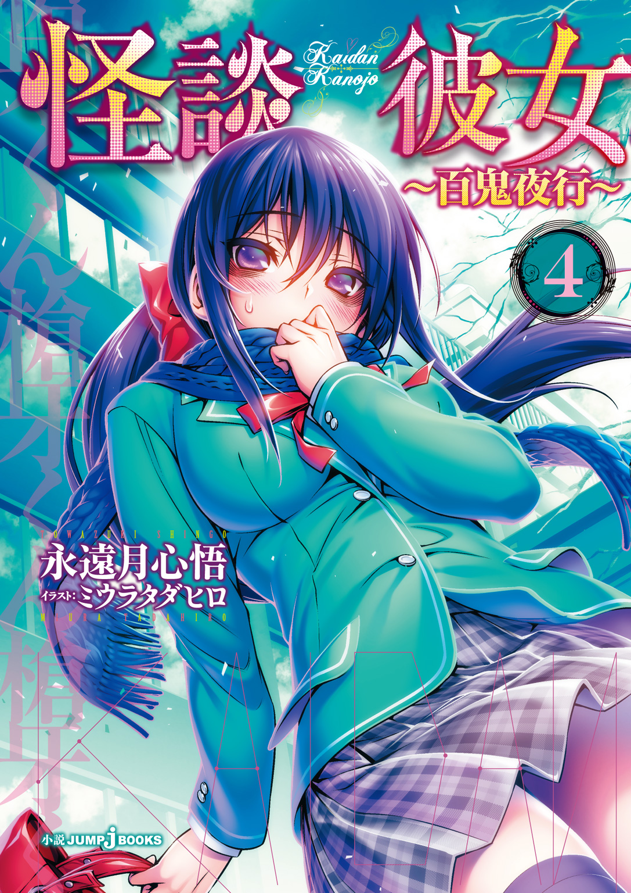
この本は縦書きでレイアウトされています。
また、ご覧になる機種により、表示の差が認められることがあります。
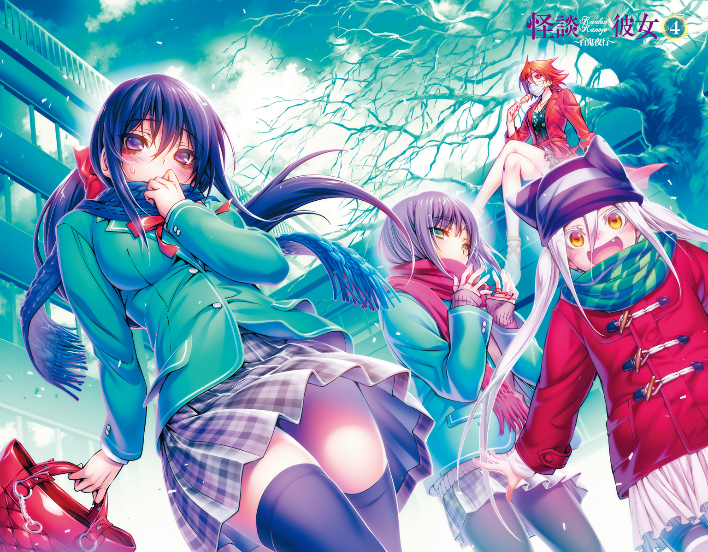
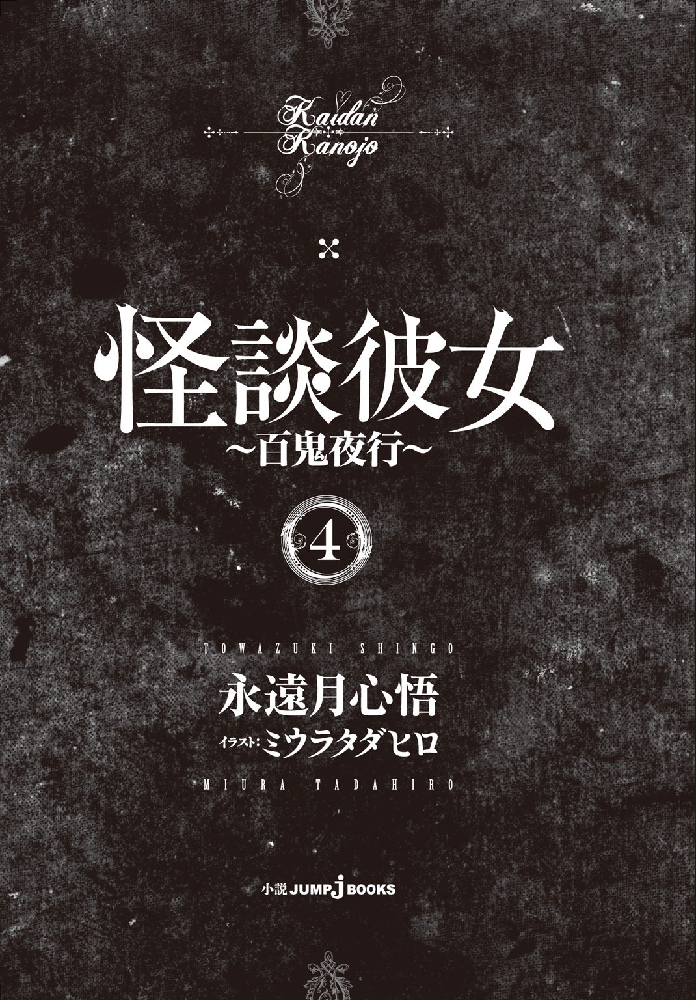
人物紹介
斉藤槍牙 さいとうそうが
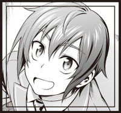
鷹夏中学校１年。
存在しないものをこの世に定着させる『最悪器官』。
黒川夢乃 くろかわゆめの
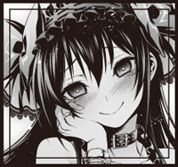
槍牙の幼馴染で同級生。
槍牙無しでは存在できない『怪異』である。
異常な愛情を槍牙に向ける。
野波小百合 のなみさゆり
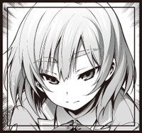
槍牙たちと同じクラス。
怪異を滅ぼすための組織『殲』の一員である。
いつもあやとりをしている。ツッコミ担当。
化野詠 あだしのよみ
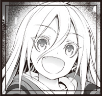
『座敷童子』として育てられた少女。
現在は黒川家に保護されている。
零子 れいこ
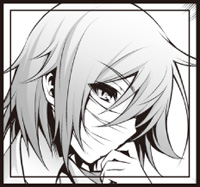
怪異『口裂け女』。
現在は『殲』の監視下におかれている。
大徳寺刃心 だいとくじしのぶ
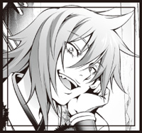
『殲』に所属する大柄な女性。
野波の師。
御法川一女 みのりかわはじめ
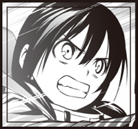
『殲』に所属する女性。
クリーニング店の娘。
CONTENTS
この作品はフィクションです。実在の人物・団体・事件などには、いっさい関係ありません。
「そもそも『黒龍』の呪いって誰がつくったの？」
あっけらかんとした言い方をしたのは、赤いコートにマスクを着けた背の高い女性――零子さんだった。口裂け女という名前の怪異であり、右手に刃の長いハサミを持っている辺り物騒に見えるが、中身はいい人だ。
冬だというのに惜しげもなく足をさらした服装で、体育座りをしたりあぐらをかいたり正座をしようとして足をしびれさせたり、とにかく落ちつきがない。ときおり意味もなくこちらを蹴ってちょっかいを出してくる。見た目に反し、子どもっぽい仕草が特徴的な人だ。
「ねえねえ、槍牙くんは知っている？」
俺――斉藤槍牙は尋ねられて首を横に振った。そもそも霊能力者でもない俺が、呪いについて詳しいわけがない。『黒龍』という名前の呪いについては因縁があるので名前も効果も危険性もある程度はわかっているが、それでも知識には乏しいのだ。
というわけで、俺はこの六畳もない小さな和室で共に密談しているもう一人を見た。
零子さんよりもさらに背が高く、がっしりとした体を和服に包んだ中年の男だ。精悍な顔つきが年齢を若く見せているが、うちの父親と同い年である。名前を黒川灯という。
『黒龍』の呪いを宿した俺の幼馴染、黒川夢乃の父親だ。
俺と零子さん、そして灯さんの三人だけがいま現在、黒川夢乃にかけられた呪いのことを知り、とこうとしている。そうしなければ彼女は、そう遠くないうちに死を迎えてしまうから。
灯さんは頭をがりがりとかいてから慎重な口ぶりで教えてくれた。
「歴史としては古くてね、『黒龍』はおよそ五百年前につくられたとされている。具体的にいつどこで、ということまではわかっていないがね」
「あ、俺が聞いても大丈夫な範囲で」
わかっているよ、と灯さんが片方のほほだけで笑う。俺には『最悪器官』と呼ばれる特殊能力があるのだ。それは怪異を実在のものにしてしまう力であり、たとえば俺の隣で足首を回してストレッチをしている零子さんも最悪器官が生みだした存在なのである。
怪談を聞けば実在させ、怪異に触れていればその存在を現実につなぎとめる。黒川夢乃も『黒龍』の呪いのせいで怪異同然の存在になっているが、二十四時間に一度（どころではないが）俺が触れているので消えることはない。
ちなみにその幼馴染は現在、詠ちゃん――少し前から黒川家で暮らしている座敷童子である。最悪器官の力により、普通の人間とほぼ変わらない存在となっている――と一緒にお風呂に入っている。ここで俺たち三人が密談していることは、黒川にも他の人にも知られるわけにはいかない。
「『黒龍』をつくったのは一人の彫り師だ。彫刻じゃなくて、刺青のほうね」
灯さんの話を聞いて思い浮かべた。確かに黒川の左腕にのさばっている黒い龍の姿は、刺青のように見える。
「その彫り師の名を、煉獄天左衛門という」
「......豪勢な名前ですね」
率直な感想だったが、昔の人ならそれぐらい派手な名前でもおかしくないか。
「えーと、五百年前ってことは、もう生きていないよね？」
「まあ、いないでしょうね」
俺と零子さんがそんなやりとりをしていると、灯さんが少し遠くを見る目で告げた。
「八年前までは、いたんだけどね」
「え？」
八年前――それは最悪器官が暴走し、多くの人間を傷つけた年だ。その傷は多くの人の心にも体にも深く残っており、俺は殺意を持たれるほど恨まれてもいる。だから余計に、八年前という言葉に俺は反応してしまう。
灯さんは虚空をにらんだまま続けた。
「後継者が連綿と続いていたんだよ。九十代目だったかな、あいつは」
「後継者......？ というか、八年前に何が？」
灯さんがこちらに視線を戻す。その目にぞわりとするほどの殺気がうかがえた。
「殺したんだよ。煉獄天左衛門は『殲』を裏切ったんだ。だから殺した」
零子さんが丸くした目をこちらに向け、灯さんと俺の顔を何度か交互に見た。俺としてもどう反応していいのか困っていると、灯さんは深く息を吐く。
「まあ、奴のことはいい。生きてさえいれば何かヒントは得られたかもしれないが、いないものにまで期待することはないよ。明日、四国からいくつか文献が届く。その中に使える方法があるか確認してみるよ」
話をまとめに入った。実際、これぐらいの話しあいは何度ももっているのだ。これといった案など滅多に出ないし、あっても次の話しあいの度に灯さんは暗く沈んだ顔を見せていた。黒川夢乃から『黒龍』の呪いをとく方法は、いくら探しても見つからない。
ただ、妙に頭に残っていたのだ。
煉獄天左衛門。その名前が。
「小百合さあ、お前好きな奴とかいねーの？」
「......はい？」
バスの停留所でベンチに座る修験者の格好をした私の師匠――大徳寺刃心がそう言った。「髪は女の命」という言葉に真っ向から喧嘩を売っているような赤茶けたぼさぼさの髪の隙間から、吊りあがった目で私をきょとんと見つめる。
「中学生ったら好きな奴の話だろ？」
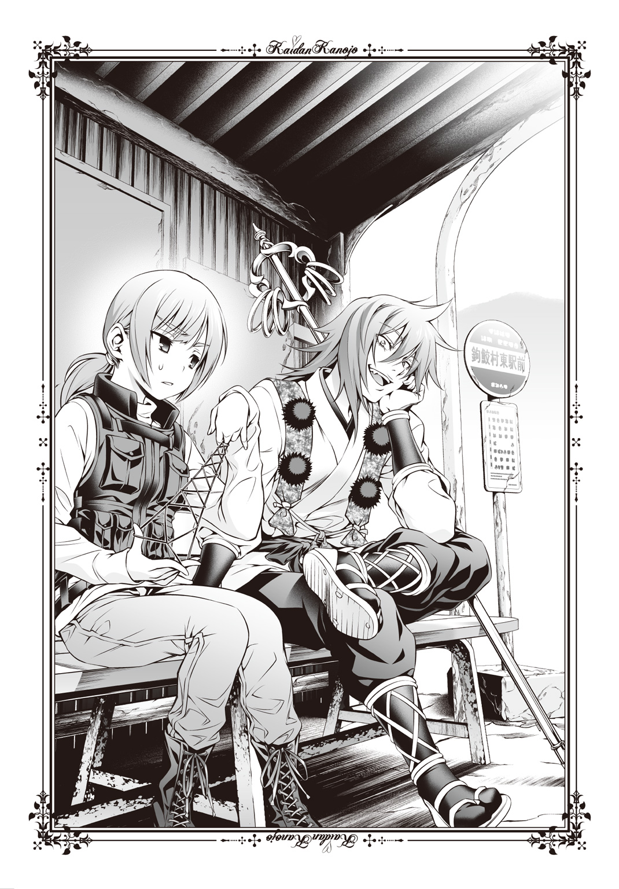
「......先生は中学時代、そんな話ばかりしていたんですか？」
「うんにゃ。あたしぁ何人潰したとかぶっ殺したとか壊したとか、そーいう話ばっか」
『殲』――黒川灯が設立した霊能力者集団――屈指の霊能力者にして私の師匠であるこの人は、なかなか暴力的な青春を送ってきたらしい。私とは無縁だ。そう思いたい。
......脳裏にあのゴスロリ女が浮かぶのが忌まわしい。いつも喧嘩を吹っかけてくるのはあいつぐらいなものだ。他の奴らは無視しておけばとりあえず何もしてこない。あのゴスロリ女さえいなければ、胸を張って「私は暴力とか関係ない」と言えるのに。
「たまにはさ、復讐のこと忘れて楽しいことやろうや」
「楽しいですよ。先生とこうして過ごすんですから」
「うん、いつもの語尾がないから多少は楽しいんだろうなって思っている」
いつもの語尾、というのは大徳寺先生から教えてもらった平常心を保つ方法だった。話すときに語尾に「ね」をつけて話そうとすることで、感情の乱れを制御する。最初は騙されたつもりでやっていたが、案外効果がある。特にこの一年は。
春に私は、私の家族を殺した奴と同じクラスになったのだ。
夢に見るほど殺したいと願っていたそいつを監視するという『殲』としての仕事を命じられ、はらわたが煮えくりかえりそうなほど私の殺意はたぎっていた。いつかついうっかり殺してしまうのではないかと自分の殺意を危惧していたとき、事件が起きた。
怪異、てけてけが現れたのだ。
仇敵である最悪器官のせいで発生した事件は『殲』によって片づけられる予定だった。その際、大徳寺先生は私が最悪器官を手にかけるチャンスだと思って、奴をステージに上げてくれた。てけてけがのさばる地獄へとやってきた最悪器官を、奴の幼馴染もろとも葬り去る予定だったのだ。怪異が暴れている中なら下手人もバレない、誤魔化せるさと先生は悪い顔で笑っていた。わかっている。それは私への気遣いあっての悪巧みだったと。
でも結果、最悪器官は死ななかった。
それどころか奴は窮地に陥った私を救い、てけてけ事件を解決した。
「ん？ 小百合、どうした？」
「いえ、復讐のことを忘れようとしたのですが、最悪器官のあのへらへら顔を思いだしたらむかつきまして」
「あっはっは、むかつくかー」
あっけらかんと先生が笑う。そういえば今朝、最悪器官が出がけにメールを飛ばしてきたな、と嫌なことを思いだした。私の席を使いたいらしいが、勝手にしろと思う。
私は腕時計を確認した。鷹夏市からだいぶ離れた、そして鷹夏市と違って冷たい潮風の吹く漁村だ。これ以上待たされるのは嫌だぞと道をにらんでいると、ようやくバスが来た。
「行きますよ、先生」
「おーう。まあ学校サボっての任務だ。楽しく吞気にやろうぜーい」
錫杖をじゃりんっ！ と鳴らして勢いよく大徳寺先生が立ちあがる。その背中に見える赤子の亡霊と、先生から少し離れたところに立って見守っている様子の、眼鏡をかけた優しそうな男の亡霊が目に入る。この二体の亡霊は、かつて大徳寺先生の家族だった者たちだ。私が先生を一番に信頼している、証でもある。
私も先生も、怪異がらみで家族を亡くした仲間だった。
目の前に滑りこんできたバスのドアが開く。乗客は私たちしかいなかった。
とある漁村へ旅行に来た、カップルの話である。
この村には海沿いに洞窟があり、そこは恋人同士で行くと幸せになれるパワースポットとして一部で有名だった。
昼にも訪れた二人だったが、夜になってまた行ってみようという話になった。
洞窟へ行くには必ず砂浜を通るのだが、そこに海を向いて立つ一人の女がいた。
黒ずくめの服につばの広い帽子を被ったその女は、カップルに気づいて手を振った。
カップルが手を振りかえすと、女は寄ってきた。
海の水でも被ったように、全身がびしょ濡れの女だった。
「指輪を落としちゃって。見なかったかしら？ とても大切な指輪なの」
恋人からもらったものだと言うので、可哀想に思いカップルは一緒に探すことにした。
女は月明かりを頼りにしていたが、カップルは洞窟で使うために持っていた懐中電灯で照らしながら探す。
しかしどんなに砂をかいて探しても、指輪らしいものは見つからない。
もう流されたのではないかと考え、カップルの片割れである男は顔を上げた。
するとそこには、女も、自分の連れもいなかった。
波の音が響く中、男がいくら探しても二人は見つからなかったという。
この地方では昔から「濡女」と呼ばれる妖怪が出るそうだ。
顔も知らない悪い女に夫を奪われ、そそのかされた夫に海へと沈められて殺された女の霊で、男連れの女を見るとその悪い女だと思いこんで海の底へと連れていってしまうらしい。
鉤鮫村。西日本にあるありふれた漁村のはずだった。
二年前に海沿いの洞窟が「恋縁洞窟」という名前のパワースポットとして全国ニュースに紹介されたせいで、多くのカップルが訪れるようになったのがここ一、二年のことだという。そしてここ半年の間に、今度は「濡女」という怪異の噂がまことしやかにささやかれ始めた。
普段ならば一笑に付すところだが、今回ばかりは話は別だ。
実際にこの鉤鮫村において、女性の失踪が相次いだのだった。
「ただし死体は上がっておらず、と。まあ、神隠し系の事件は昔からちょいちょいあるけれど、この半年に十三件も集中していれば怪しいもんだわな」
「警察では捜査が一向に進まないため、私たちに連絡があったわけですね」
バスに乗って私と大徳寺先生は海の見える場所まで来た。堤防道路を歩きながら砂浜を見ると、いまは営業していない海の家のバラック小屋がある。立て札で「恋縁洞窟 こちら」とあるが、いまは時期が悪いので観光客の姿はない。灰色に染まった冬の海が、波の音を断続的に鳴らし続けている。
「普通、怪異が出てきても実際に人をさらうということはまずありません。大抵は幻覚のように見えてしまうことがある程度で、逃げようと思えば逃げられます」
ただし、その姿を見て怖がった人間が事故を起こすことはある。車を運転中に幽霊を見てハンドル操作を誤ったり、こっくりさんをやっていてとり憑かれたと思いこんで狐になったかのような行動を取ったりする案件も多い。
「そ。せいぜい恐怖でパニくって海に落ちて、そのまま溺れてどっか流されたってところだろ。けどそれが十件以上も連続することはまずあり得ない」
「ただの事故や、幻覚程度の怪異とは考えないほうがいいかもしれませんね」
「八年前から人間並みに存在している怪異の仕業かもな。半年前からってのが気になるが、てけてけみてえに企てがあってのことかもしれねえ」
八年前――最悪器官が暴走した年だ。つまり、私の家族が殺されたときである。
少し歯嚙みする。ぎゅっとにぎった拳は行くあてもなく、八つ当たりのように私自身の腰骨を叩いて発散させた。最悪器官のへらへら顔が思い浮かぶ。
どうしてなんだろう。
殺してやりたいはずなのに、私の殺意が鈍ってきているもどかしさを感じるのは。
「あ。小百合、あれ見て、あれ」
大徳寺先生が指さすので私は視線を向ける。そこには寂しい冬の海にはそぐわない、ピンク色の看板をしたセレクトショップがあった。建物も新しいので、おそらく近年にできた店だろう。いや、さらに言えば。
「恋縁洞窟」を目的に来た観光客向けの店なのではないか。
ならば失踪者がこの店に来ていた可能性がある。そうでなくても海岸の前だ。目撃情報、噂話、なんでもいい。何か情報をもらえるのではと期待が高まった。
「入りましょう、先生」
「おう」
このとき私は理解していなかった。先生がショップを目指した理由を。
「小百合、こっちのスカートもほら、ウサギの柄かーわいいじゃん！」
「わー、お客様絶対お似合いですよー」
大徳寺先生のテンションの高い声と、さっきからトーンが少しもぶれないマニュアルトーク全開の店員の声を試着室の中で聞く。カーテンの隙間からねじこまれた黄色いスカートは小さいウサギ柄が一面にプリントされている。
体の向きを変え、鏡に映った自分を見る。
まばゆく白いブラウスにパステルピンクのスカート、レモンイエローのカーディガン。冬場の格好としては寒いので上からコートを着なくては外に出られないだろうが、それすら先生がいま物色している。黒いストッキングは落ちついていて気に入っているが、先生は「なんかもっと可愛いのねえかな」とか言っていたのでそれも探しているかもしれない。セレクトショップは明るい色の多い若者向けの店で（私も十三歳だから若者とは言えるが）私の趣味には合わなかった。
足元にたたんで置いてある自前のタクティカルベスト、トレーナー、ジーンズはどれも落ちついた色調であり、早く元の服に着替えたい気持ちでいっぱいだった。
「小百合ぃ、上にこれ合わせてみてー」
カーテンの隙間から入れられるのは白いダウンジャケットだった。断ることなどできない。私はスカートを一旦置いて、それを着る。鏡の中の自分が青い顔をしている以外、非常に明るい印象だ。絶対自分には似合っていない。
「小百合、着替えた？ 見ていい？ 開けるよ？」
私が答えるよりも早く、大徳寺先生がカーテンを開けてしまう。着せ替え人形になった気分で振りかえり、心底嬉しそうな先生の笑顔を見た。
「おお、いいじゃんいいじゃん！ あれ、スカート履き替えなかったの？ せっかくのスカートなんだから色々試そうぜー」
「......平日は毎日履いているんですから、休日ぐらいはジーンズでいいんですけどね」
「えー、お客様もったいないですよー」
店員が心のこもっていないセールス口調で言った。それでも大徳寺先生は同意を得たつもりらしく「でしょ！」と指を差す。手にした錫杖がじゃらんっ！ と鳴るが、他に客もいないので誰も注意しない。
「あ、そうそう。小百合、猫とウサギ、どっちが好きだ？」
「......ウサギ、ですかね」
それを知っていて渡したスカートじゃないのか、と言いたい気持ちをぐっとこらえた。
「よし、じゃあこれ！ あ、これ買うんで、このまま開けて履いてもいい？」
「はーい、ありがとうございまーす、大丈夫ですよー」
手渡されたのは可愛らしいウサギがプリントされた子どもっぽいストッキングだった。
......とことんコーディネートするつもりらしい。
結局ヘアピンからブーツに至るまで、完璧に大徳寺先生にいじられてしまった。美容院がこの辺りにはないと聞いて悔しがる先生だったが、これ以上任務を忘れてもらっても困る。ガラスに映った影を見ても、やっぱり表情だけ暗い自分の姿にため息をつきながら、私は先生と一緒に入った定食屋で情報をまとめてもらった。
「あの服屋の姉ちゃんの話じゃ、この辺りに来ていたカップルの女がやっぱり連れ去られたらしいな。つっても、あの姉ちゃん自身は門限が厳しくてさっさと帰るから自分で見たわけじゃないらしいがな」
「どのみち夜半に出歩かなければ、失踪することもないみたいですけど」
昼間に人が消えたという話がないのは、とっくにリサーチ済みだった。
「それでも一度だけレジスターが壊れたとかで夜遅くまで残っていたときの話らしいんだがな。女が一人行方不明になった夜、海の上に不知火を見たらしい。ぽつんと一つだけ」
「不知火とは、妙に古風な言葉を知っている店員ですね。意外です」
終始マニュアルトークを崩さなかった女店員は、ちょっとギャルっぽいタイプに見えた。偏見とは承知だが、そういう系統の人間はあまり古い言葉に詳しくないような気がしたのだ。
なお不知火というのは海の上に浮かぶ正体不明の火の玉を呼びあらわした古い名前である。とはいえ、現在では蜃気楼と同種の自然現象が正体だと看破されているわけだが。
ちょうどそこで、注文していた海鮮丼とカキフライ定食が来た。先生の薦めで注文したカキフライ定食だったが、冗談みたいにフライの一つ一つが大きい。
「ははは、びっくりしたろ。こっちのカキはでかいんだ」
だばだばと醬油をぶっかけて丼に取りかかる先生は、私が海のそばで暮らしたことがないのを知っている。それどころか潮風を感じるほど海のそばに来たのは今日が初めてだ。
海には亡者が多くいる。私と私の本当の家族は近よらなかった。みんな霊感体質で、でもそれらをはねのける術を知らなかったからだ。
――小百合が大徳寺さんに習ってすごい霊能力者になったら、みんなで海に行こうな。
父がそう笑って私の頭をなでてくれたことを覚えている。母も姉も、同じように笑っていた。私は頼られているのが誇らしくて、温かい父の手のひらがちょっとくすぐったくて、ずっと照れ笑いを浮かべていた。
でもその平和は失われたのだ。八年前に。
「小百合？」
「いえ、いただきます」
懐かしむと気分が鬱々とする。私はソースをかけ、カキフライを一つかじった。揚げたてらしくかなり熱かったが、予想していたので火傷はしない。衣の甘味とカキの甘味がちょうど舌の上で混ざり、ソースが引きしめる。美味しい。ご飯が進み、付けあわせのサラダもほお張り、気づけばカキフライを一つ残してたいらげていた。
「先生、食べますか？」
「んあ？ 腹いっぱいか？」
「いえ、食べるかなと思いまして。要らないならいいんです。私、食べますから」
「おう、食え食え。ついでにあたしもう食えねえから、全部やるよ」
先生が丼ごと私の前に置く。私は衣の油とソースで口元が汚れていたことに気づき、おしぼりで拭った。
さて、と先生が話を続ける。
「あの姉ちゃんが見た不知火の正体について。単なる蜃気楼ってわけじゃない仮説が、あたしにはある。漁火って知っているか？」
「夜、漁をするときにつける明かりのことですか？ ホタルイカ漁なんかで有名な」
「そう。だからその不知火も漁船の漁火だったんじゃないかと思って尋ねたら、あの姉ちゃんの兄貴ってのが漁師らしくてな。その日は夜、誰も漁に出ていなかったんだと」
「......船」
私はスマートフォンを取りだすと、地図のアプリを起動した。この辺りの地図を見ていくつか島を探してみる。先生が八重歯を見せた獰猛な笑顔になる。
「この辺、小さい離島が多いんだ。しかも無人島になっているところもかなりある。もしかすると失踪した奴ら、そのどこかに拉致されたんじゃないかって思ってな」
「可能性はあります。怪異と思って調べてみたら人間の仕業だったという話は、これまでも多かったですから。ただし、警察の捜査で見つからなかったということは」
周囲の調査はやったという話だった。だが、普通なら見つからない方法を用いていたとするのであれば、こちらにはまだ科学の追いついていない技術がある、警察には察知できまい。
「結界......」
「まあ、うちらの経験則じゃ妥当だよな。化け物が張った結界なのか、それとも人間が張り巡らせたものなのか。まあどっちみち、やることは決まったな」
先生が胸元から財布を取りだして立ちあがる。今日はおごってもらってばかりだが、先生はそんなに大金を持ち歩くような人ではなかったはずだ。甘えてもいいのだろうかと、私は隣に置いた紙袋と、そこに入れてある自前の服を見ながら思った。
「船の調達、行くぞ。小百合」
はい、と私は応じる。分けてもらった海鮮丼もすっかり収め、お腹はいっぱいだった。
鉤鮫村は漁村だ。港に行けば漁師もいるし漁業組合を通せば紹介だってしてもらえた。
ただしすべてが上手くはいかなかった。
「帰ェれ、ド素人。次ふざけたこと抜かしたらその持っている棒を口に突っこむぞ」
「ああ？」
漁港そばの倉庫の中で、漁師たちが酒を酌み交わしていた。よほどの大物が釣れたお祝いでもしているのかと思ったが、普段からこんなもののようだ。大徳寺先生はいきなり輪の中に乱入して酒の一杯を拝借し、飲み干して言った。
――船貸せ。ちょっくらその辺の島に行く用事がある。
ひいき目に見てもものを頼む態度ではない。それで網元か、そうでなくてもベテランの一人だろうと思われるお爺さんが、酒で焼けたしゃがれ声でさっきのように言いかえしたわけだ。先生の顔を見もしなかった。
元々凶暴な先生はすぐそのお爺さんの胸倉をつかみ、血管の浮いた顔で脅す。
「ジジイ、手前ェこそいまぽっくり逝かせてやろうか、ゴラ」
「悪ぃが寿命でならぽっくり逝けても、お前みてえなションベン臭えガキにゃあ殺されねえよ。お前ごときじゃこっちが三歳児になっても勝てらあな」
「ションベン臭ェなああんたのゆるいシモの匂いだろうが、便所に叩きこむぞ」
「ブルって便所行きてえならあっちだ。一人で行けねえなら手伝ってやるぞ」
柄の悪い者同士の応酬は聞くに耐えない。あやとりを取りだして三段ばしごから七段ばしごまでつくってみようかと繰る。糸をいじっている間は、ほんの少しだけ嫌なことを忘れられる。最強の気の紛らわせ方だ。
しかし五段ばしごをつくった辺りで話しかけられる。
「おいおい、あんたの姉ちゃんだか母ちゃんだか、無茶苦茶だな」
見ると無精ひげの濃いやせた中年の男が、顔を青くして怯えていた。いきなり大徳寺先生に乱入されては青ざめもするだろう。背も高いし態度も悪い。
「うちの爺さんにあんなふざけた口を利く人は見たことがねえ......なあ、お嬢ちゃん。あの人、止めてくれねえかな？」
「止まりませんね。誰に対してもああいう態度ですからね」
マジかあ、とつぶやきながら漁師たちが騒ぎの張本人たちを遠巻きにしていく。ヒートアップが過ぎたのか、大徳寺先生がストーブを蹴り転がした。それにはさすがに怒ったようで、言いあっていたお爺さんがその辺りにあった日本酒の大瓶で先生の頭を叩く。と思ったら空瓶ではなかったようで、割れた瓶の中身が全部先生の頭にぶちまけられてしまい、さらに先生の怒りが加熱した。拳骨をお爺さんの頭に叩きこみ、お爺さんが先生の頭を叩く。先生のほうが少し背も高いが、なかなかいい勝負である。
まあ、すぐに足が出る先生が拳骨で戦っている辺り、まだ頭は冷えているだろう。
ちらりと視線を向ける。若い漁師たちに混じって、いつも先生のそばにいる眼鏡をかけた男の幽霊が、いつも先生が背負っている赤ん坊を腕に抱いて困った表情を浮かべていた。
「あー、くそあのジジイ！ 手加減してやりゃあ調子ン乗りやがって！ 敬老の日になったらたっぷりお礼参りしに来てやっかんな！」
当然、交渉は決裂となった。案の定先生が争いあったのは漁業組合でもっとも長く漁師をやっており、何人か漁夫を雇っている網元で、私と先生には「絶対に船に乗せるな」というお達しが出回ってしまった。同情の視線をよこしてくれる漁師が多かったのは、先生も瓶で殴られたり、服を汚されたりしたからだろう。お互い様だとは思うが。
問題は、この海に出るには漁師の船以外の手段がないということだった。
「勝手に強奪するって手もあるんだけどなあ......どうしたもんかなあ」
「黙って連れて行ってくれる漁師もいなそうですしね」
同情はしても、あのお爺さんににらまれたくはないのだろう。ごく当然のことだ。先生が悪いのでむしろ同情されているほうが居心地よくない。
とりあえず日本酒を浴び、ついでに醬油や魚の腑まで浴びた先生を（浴びせあった、と言うべきだろうか。お爺さんも酷い有様だった）お風呂に入れたいのでまず宿へ向かうことにした。作戦会議も兼ねてのことだ。
そして現在、私と先生は露天の温泉に浸かっている。
「灯の旦那に一報入れりゃあ船の一つや二つなんとかなるかもしれねーが......時間がかかるんだよなあ。明後日の仕事がなけりゃあいいのによー」
ここしばらく先生は忙しいらしい。本来ならばここに来るはずではなかったのだ。
『殲』に舞いこんだ今回の依頼はそもそも、私にあてがわれたものだった。以前先生と一緒に仕事をしたときにお世話になった人が指名したとのことだ。娘さんの友達とやらが失踪事件に巻きこまれたらしい。その人は私が腕利きだと思っていたようなのでわからなくはなかったし、私自身、腕試しをしたい気持ちはあった。
ところがそれを聞いて心配してくれたのか、大徳寺先生も来てくれることになったのである。
先生と二人旅。秋に旅行したばかりだったが、これはこれでなかなか良かった。ただしいまとなっては、それが足枷になっているのかもしれない。
「泳いでいくわけにもいきませんし、困りましたね」
「あたし一人なら泳いででも行けるけど、小百合は死ぬぞ？」
寒中水泳をする気分にはなれない。お湯をすくって顔を洗い、浴槽の岩部分に頭を預ける。
「となると、あのお爺さんを説得するしかありませんね。確か、工藤承太郎とかいいましたっけ？ あの人」
「ここら一帯の網元っつー話だな。あんな非常識なジジイが網元で大丈夫かよ」
まだやりあったことを引きずっているようだ。しかし非常識なのは先生のほうだと思うし、許可がもらえなくて当たり前だろう。『殲』に連絡して船を手配してもらい、先生が帰った後に私一人で仕事を完遂する自信はあった。だがせっかく一緒に仕事をしようと来てくれた先生の厚意を無下にするのも気が引ける。となると、やっぱり今日明日中に離島の調査をしたい。
......仕方がないか。
「大徳寺先生は宿にいてくださいね」
「んあー？ 小百合、どこ行くの？」
「網元のところです。押してダメなら引いてみますよ」
湯からあがる。外気は冷たいが、こっちは芯まで温まっているので凍えることはない。脱衣所に向かうと、先生が湯に浸かったままひらひらと手を振った。
「色仕掛けするなら孫っぽくしたほうがいいぞ。東京に行った娘夫婦のとこの孫娘に、五年ぐらい会ってなくて寂しがっていたらしいから」
「......いつの間にそんな情報を」
おそらく漁師や漁業組合の関係からだろうが、抜け目がない。日が暮れる前に行かなくてはならないなと思い、私は脱衣所に入って自分の顔をぱぁんっ、と叩いた。
よし、気合い入った。
それから三十分後、私はある一軒家の前にいた。
「工藤」の表札の下にチャイムがある。「湯沢酒店」と書かれた重い紙袋を持ち直し、もう一度だけ笑顔の練習をしてから私はそのボタンを押した。ぴんぽーん、という間の抜けた音の後にどたどたと激しい音を鳴らして年季の入った玄関扉が開く。出てきたのは先ほどまで大徳寺先生と激しく対立していたお爺さんである。服は着替えていた。
にこっ、と笑って私は荷物を掲げる。
「さっきはお姉ちゃんがごめんなさい。お詫びに来たの。お爺ちゃん、入っていい？」
自分でもあざといと思うような言い方だし、少し高い声を出しているのも笑える話だったが、信用を得るには必要なことだ。船を出してもらわなくちゃ、仕事は終わらない。
老爺、工藤承太郎はしばらく値踏みするように私をじろじろとにらみ続けていたが、無言で手招きだけして家の中に入ってしまった。子どもらしい演技を崩さず、私はちょっと大きい声で「お邪魔しまーす」と言って中に入る。玄関には工藤承太郎本人のものと思われる靴が一足、出ているだけだった。
「荷物は酒か」
ぶっきらぼうな言い方だ。しかし悪意や害意は薄いように思われた。大徳寺先生の無礼な態度に応えたときも同じものを感じた。口が悪いだけで、人は悪くない。
「うん、お酒。お姉ちゃんが頭で割っちゃったから」
あなたがぶっ叩いたからですけどね、とは言わない。私は喧嘩を吹っかけるような性格ではないのだ。脳裏にふっと湧いた最悪器官のへらへら顔と、奴にまとわりついているゴスロリ女の残酷そうな笑みはすぐ忘れる。いまは仕事の最中だ。
わざとちょっと危なそうな仕草で紙袋ごと一升瓶を差しだすと、工藤承太郎はそれを乱暴に受け取った。包みを外して銘柄を確認すると、ふん、と鼻を鳴らす。
「酒、選んだのはあの姉ちゃんか」
「うん。でも自分が行くとまた喧嘩しちゃうかもしれないから、私に行ってきてって」
わりに上物の銘柄にしたので怪しんだのだろう。安酒を渡して断られるわけにもいかなかったので私が選んだのだが、自分の年齢を考えて先生が選んだことにした。工藤承太郎は湯吞みに日本酒を注ぐと、仏壇へと持っていった。そこには中年ぐらいの女性の写真がある。奥さんだろう。ちょっときつめだったが美人だった。
仏壇にお酒を供え、鈴をぞんざいに鳴らす。私は言った。
「私もごあいさつ、していい？」
「勝手にやれ」
仏壇の前に座って線香に火をつける。鈴を鳴らすと、両手を合わせて顔を伏せる。家族の墓参りはしょっちゅう行っているが、知らない人には何を思えばいいのかわからず、私は「この作戦が上手くいきますように」と祈った。
「少ぅし、あの姉ちゃんに似ているだろ？ うちのカミさん」
「え？ ああ、えっと」
遺影を見る。似ていると言えば似ているかもしれない。気の強そうな顔立ちだ。
「ワシんこと拳骨でどついたのは、カミさん以来だ」
蹴りなら死んでいましたね、と心の中だけで言って私は無邪気を装った。
「仲良かったんだ」
「悪いさ。最後の最後まで喧嘩していた。喧嘩して漁に出て、陸ぁ戻ってきたときにゃもう死んでた。涙も出んかった」
工藤承太郎の話は少し続いた。いつの間にか家の中は電気をつけなくては迂闊に歩けないぐらい暗くなっていて、それでも私は合いの手を入れて聞く。任務達成のためなのか、それとも奥さんとした喧嘩の日々を楽しげに語る声に聞き入っていたのか、自分でもよくわからなかった。ただ、彼の話には温かみを感じたのだ。
「奥さんに、謝りたい？」
つい私は、工藤承太郎にそう尋ねていた。彼はぞんざいに鼻を鳴らす。
「......ふん、謝ったことなんざ一度もねえや」
暗くてその表情は見えない。仏壇の前に座る私から二メートルと離れていないのに。
「いつも魚獲って戻ってきて、一番いいの持って帰りゃあ、喧嘩なんざどうでもよくなっちまったんだよ。あいつ、いい魚見りゃあそれで全部許してくれた」
この夫婦は、そうして長年を連れ添ったのだろう。言葉は要らない。ただ相手の行動だけで互いを許してきたのだ。
脳裏に浮かんだ同級生のへらへら顔を振りはらう。私は仕事でここに来た。
だから、仕事をしよう。
「ねえお爺ちゃん。またいい魚、獲りに行こうよ」
「......死んじまった相手とは、もう喧嘩できねえよ」
「うちのお姉ちゃんとは、喧嘩したじゃない」
仏壇にもう一度頭を下げる。ほんの少しだけ、工藤承太郎の中にあるあなたへの情を使わせてほしいという願いをこめて。
沈黙が暗闇の中を満たす。たっぷり一分は経ってから、工藤承太郎は言った。
「......しょうがねえなあ」
ぱっと電気がつく。工藤承太郎が電気をつけたのだろう。私は急だったので目がくらんだ思いで目をしぱしぱとまたたかせる。その間に工藤承太郎は私の横にどっかりとあぐらをかく。どこから持ちだしたのか、その手にはぼろぼろの地図があった。
「どこの島、行きてぇんだって？」
「......わからないの。この辺、島って多い？」
「わからねえってなあどういうことだよ」
私は大徳寺先生のことを「失踪事件に巻きこまれた人の家族から頼まれて、調べに来た探偵」ということにして話を聞かせた。私も先生も、海に対してはあまりに無知だ。よく知っている人に情報を渡し、判断してもらったほうが失敗はない。
ふぅん、とうなってから工藤承太郎は鋭い目で地図をにらみ、一点を指さした。
「誰かが夜中に船で連れ去られたってンなら、こいつかな」
「......四辻島？」
「ここにゃあ船を隠せる洞窟があるし、都合がいいわな。知らねえ船がありゃあみんなすぐ噂するが、他の島ならともかく四辻島にゃみんな近よらねえから見つからねえ。警察がしばらくうろついて調べたらしくて、特になんもなかったって話だがよ」
「どうして四辻島にはみんな近よらないの？」
「人が大勢亡くなったってことでな、みんな気味悪がっているよ」
「大勢亡くなったって、何かあったの？」
「ああ、研究所があったんだ。医者の偉ぇ先生がナントカって伝染病の患者を隔離して、研究しながら治療しようとしていたらしい。ま、それでも特効薬なんかはできなくて患者もみんな死んじまって、いつの間にか先生たちも消えたもんだから建物だけ残ったって話だ。いまじゃ無人島さ」
建物、それも研究所がある。何者かが人を連行しているのだとすれば、この島はかなり怪しい。警察が調査していても、結界を張ってあれば気づけない可能性はあるだろう。
それになぁ、と工藤承太郎は渋い顔で語る。
「濡女が住んでいるって話が大昔にゃあったしなあ」
「......そうなの？」
「濡女の正体は巨大な蛇だっつー話があってな。四辻島はどういうわけか、昔から蛇が多い。そういう噂が立ってもおかしくねえわな。あの失踪事件、濡女の仕業とか言われてんだろ？ ンな化け物いるわけねえが、偶然にしちゃよくできてるじゃねえか」
眉唾ものだと言いたげな口調だ。実際はそうだろう。怪談などそういうものだ。
しかし何者かがそこを根城にしている可能性は高い。人間同然の怪異ではなく、結界を利用できる人間そのものが犯人かもしれなかった。
「四辻島に連れていって、お爺ちゃん」
「あの姉ちゃんだけな。嬢ちゃんはダメだ」
あまりに孫らしい仕草を取りすぎていたためか、工藤承太郎は私の同行を断った。先生一人でも仕事はできるだろうが、私としては嫌な話だ。ありていに言えば、すねる。せっかく私が依頼を受けて、私がここでこんな無邪気な子どもの真似までして話を進めたのだ。できればここで退場にはなりたくなかった。
とはいえ『殲』だの霊能力だの言いだしても笑われるだけだろう。なんとかして同乗を許してもらわなければ、私だけ本土で待つことになる。ちょっとだけ演技ではない必死さで私は工藤承太郎にしがみつく。
「嫌。私も一緒じゃなきゃ、ダメ。お姉ちゃん一人じゃいけないの」
「って言ってもなあ......」
少ししかめっ面を見せられるも、私は食い下がらない。わざとあどけなく見せようとする意識と、本気で我を張っている自分とが混ざってよくわからなくなる。その熱意が伝わったのか、はあ、と工藤承太郎はため息をこぼした。
「わあった、わあった。んじゃ、夜中の三時に倉庫に来てちょっと手伝ってくれ。夜明け前には漁に出るから、それに乗せていってやる。しっかり寝とけよ」
一も二もない。私はこくりとうなずいた。
「......嬢ちゃん、一応言っておくけどな。おにぎりってのは米の塊ならなんでもいい、っていうわけじゃねえんだぞ？ さすがに」
わかっていますね、という言葉は飲みこんだ。私の両手のひらに収まっているそれは、どう控え目に見てもおにぎりとは思えない。しかし一生懸命やろうとしたのだ。大きめに切った辛子明太子を入れ、にぎった。ただそれが崩れているだけだ。
もう一度やるからな、と工藤承太郎が隣で手に塩と水をまぶし、おにぎりをぽんぽんとこしらえる。中に具を入れない塩おにぎりは、あっという間に完成した。
「こうやって崩れないように、ちょいちょい力をこめて丸めていく。わかったな？」
了解した。私は首を縦に振って再び取りかかり、そしてやっぱりぐちゃぐちゃの何かができてしまう。うーむ、と工藤承太郎は頭を抱えた。
私が彼から頼まれた「手伝い」というのは朝食づくりだった。
早朝の漁に出る人たちのために朝食をつくるというもので、船に持ちこむおにぎりをつくるようにと頼まれたのだが、結果は酷いものだ。よりにもよって何故、おにぎりなのか。豚汁のほうがまだつくったこともあるのに、火や包丁を使わせたくないらしい工藤承太郎は私におにぎりつくりをあてがった。
おにぎりは苦手だ。養母にも水戸先生にも誉められた料理の腕が何も発揮されない。
倉庫の奥にある調理場での作業だったが、そこには私と工藤承太郎、それから大徳寺先生の三人しかいなかった。
「ぶきっちょだなあ、嬢ちゃん」
「......すみません」
「飯、つくってからじゃねえと、漁には行けねえんだ。連れていけねえぞ」
「わかっています」
力の入れ方が違うのだとはわかっている。ではどうすればおにぎりになるのか。それがいまいちわからない。どうやっても崩れる。
「小百合、それぐらいできねえと嫁のもらい手がねえぞ」
豚汁をつくっている大徳寺先生にすら笑われる。何がそんなに違うのかと自分の両手をながめてみるが、特に問題はない。チキンライスだってチャーハンだってピラフだって、この間はパエリアだってつくれたのにどうしてか、おにぎりだけは難しいのだ。そういえばハンバーグもつくれないのである。いつも養母に頼んでしまう。
手のひらでにぎるように再度チャレンジしてみるも、指の隙間から米の塊が落ちた。
ちなみに大徳寺先生の無礼の数々は、豚汁を手際よくつくっていく様子からチャラになったらしい。工藤承太郎はさかんに先生を誉めていた。
「姉ちゃんよぉ、こんだけ料理が上手かったら、うちの若ぇの、誰かとくっついてやってくんねえか？ いまどき嫁なんて来なくってよぉ」
「悪ぃんだが操はきっちり立ててんだよ。他ぁ当たれ」
「何ァんだ、亭主いンのかよ」
考えてみれば調理場にいるのは三人ではない。先生の背負っている赤子の幽霊と、調理場の片隅にいる眼鏡をかけた男性の幽霊。先生の家族がそこにはいる。
私と同じ、天涯孤独の証拠。そう思うと、また最悪器官の顔が浮かんだ。
嫌なことを思いだすまいと思って、手の中のお米をぎゅっ、ぎゅっとにぎる。ふと、手ごたえを感じた。工藤承太郎がやっていたのを思いだし、何度か手の中で転がすようにしてみる。おそるおそる、被せていた手を離してみた。
「お......」
崩れない。まだちょっと見てくれはよくないところもあるが、おおよそいい。すぐ気づいたようで、大徳寺先生がこちらを見て「おっ！」と目を丸くした。
「いいじゃん、小百合！ 形になってきたなってきた！」
「まあ、まだちょいと不味そうだが、だいたいいいだろう」
工藤承太郎も手放しというほどではないが評価してくれる。私はできたばかりのおにぎりを皿に載せた。工藤承太郎がつくったものと比べればいびつでぼろぼろだったが、自分がつくったというひいきの目で見るとなかなか美味しそうだ。
もう一つつくってみる。塩だけを振った簡単なものだが、ぎゅっぎゅとにぎるとさっきより良くなった。力加減とコツが覚えられたのだとわかる。
「じゃあ、その調子で頼むぞ。嬢ちゃん。うちのバカ共は本当やたらと食うからよ。あと百十二個！ よろしくな！」
工藤承太郎が私の背中をどんっ、と叩いて調理場を出ていく。先生が呼び止めた。
「どこ行くんだよ」
「船の準備！ 四辻島に行くんだろうが！」
ひらひらと手を振って出ていく背中を見送り、私は炊飯器からお米をよそって手のひらに載せる。熱々のお米をにぎるうちに、私は自分が笑っていたことに気がついた。
海承丸――工藤承太郎の船にはそう書かれていた。若い漁師たちが五人同乗しており、船の後方では少し慌ただしい。先生が船を見て「百トンはあるんじゃねえの」と言っていたが、本当にそれぐらいあるのだろう。窮屈には思わなかった。
海に来たのも初めてなので、船に乗るのも初めてだった。酔い止め薬の必要があるかと考えもしたのだが、船のゆれに私は強いようだ。潮の強烈な香りも最初は鼻の中が痛くなったものの、慣れてしまえばたいしたことはない。
「嬢ちゃん、中にいたらどうだ？ 寒いだろ」
「大丈夫」
ですね、と普段の言い方になりそうになったのでにっこりと笑って返して誤魔化した。工藤承太郎は操縦部に入り、私は甲板で夜の海を見ていた。船のライトで照らされたそこは深い闇となっており、落ちたら二度とよじ登れない気がする。
大徳寺先生がすぐ隣に来た。錫杖だけは風にあおられてうるさいので、横にしてどこかに置いてあるようだ。服がはためき、長い赤茶けた髪が翼のように広がっている。
「やっぱ青い海を見せたかったな。寒いし、暗ぇし、早く島に着けよ」
「......写真とかテレビじゃ見たことありますよ。青い海ぐらい」
まるで私が綺麗な海を見られなかったことを悔いるような言い方に聞こえた。あと三十分もすれば、朝焼けの海が見えると思うのだが。
「あと時期が悪かったなあ。あーあー、いますぐ夏にならねえかなー」
子どもみたいなことを言う先生に、少し笑えてしまう。はっ、と先生も笑った。
「そうそう。小百合はさ、こーんなしかめっ面しているんじゃなくて、ちゃんと笑ったほうがいいよ。可愛い顔してんだからさ」
うりうりと先生の指が私のほほをつつく。可愛いと言われたことはある。先生も、いま私の保護者をしてくれている養父母も、私の本当の父と母も姉も、よくそう言ってくれた。自分ではよくわからない。
「ずいぶん長い時間かかっちまったな。海に遊びに行くって話から」
「......一緒に行く家族が、いなくなりましたから」
実の家族はもういない。約束は強制的に、反故にされてしまったのだ。
八年前――最悪器官によって。
「もうちょっとさ、子どもっぽくしてくれていいんだよ。小百合」
「......子どもですけどね、私」
「甘えろって言ってんだよ。お前は甘え方が下手だからさ......あたしの甘やかし方も下手なんだけどよ」
甘える。具体的にどういうことを指すのかいまいちわからなかったけれど、たぶん先生が今日してくれたことはそういうことだったのだといまになって思った。服を買ってもらったり、カキフライ定食をおごってもらったり、幼いふりをしたり、料理で失敗したり、それができるようになったり、こうして海の上に連れてきてもらったり。
そういうことがしたくて、先生はこの依頼に割りこんできたのか。
「......本当だったら外国でお仕事だったって話でしたね」
「なんで知ってんだよ、それ」
「『殲』から先生も一緒に来ると聞いたとき、お喋りなゴスロリ女が言っていましたね」
「あのガキ、どうして喋っちまうかなあ......」
先生は外国での仕事を断ってでも、私と一緒に海へ来たかったのかもしれない。そうして気にかけてもらえることは確かに、私にとっては嬉しいことだった。
「そういや小百合、依頼人に連絡がとれねえんだけど、電話してみた？」
「いいえ、まだです」
「島に下りたら連絡とってみるか......どうも変な感じがするんだよなあ」
「おぉい、もうじき着くぞ！ 準備いいか！」
操縦部から顔を出して工藤承太郎が怒鳴る。おーう、という気の抜けた返事をした先生を横目に、私はぐううっ、と背伸びをした。そのまま振りかえり、笑う。
「はーい！」
たまにはこれぐらい、子どもっぽくしてもいいのかもしれない。
案外、嫌なことは脳裏をかすめなかった。
四辻島に上陸して、元研究所という建物はすぐに見つかった。私と先生はそれぞれ暗視ゴーグルを準備し、その建物の前に立つ。
なお工藤承太郎とは取り決めをして、三時間後に迎えに来てもらう手筈となっている。
――危ねえことはするんじゃねえぞ。なにかあったら、海岸でワシらが来るのを待っていろ。
「にしても、大きな研究所ですね」
看板も風化してろくに読めないが、そびえる建物はかなり大きい。学校の校舎とほとんど変わらない。本土のように簡単に肝試しに来られる廃墟でもないため、荒れてもいない。看板に錆が浮いていることを除けばいまでも普通に開いているのではと錯覚を起こす。
「戦闘の準備はいいか？」
「問題ありません」
タクティカルベストのポケットからワイヤーの束を取りだして指にからめる。私と先生は玄関の扉を開くと暗視ゴーグルを着け、中へと入った。すえた匂いと消毒液の混じったような匂いにむっと眉が寄る。
廃墟になってから長いわりに、生々しい匂いだ。
「当たりかな。最近誰かが何かした感じがする」
同じ感想を持ったらしい先生と一緒に暗い廊下を歩く。リノリウムの床に埃が積もっているが、ところによってはそれがない。つまり、最近になって歩いた者がいるか、あるいは何かが床をはいずったということだろう。階段に差しかかった。
「あたしゃ上から行く。小百合は下から頼む」
「わかりました」
大徳寺先生が一段飛ばしで階段を駆けあがっていく。あまり隠密行動という感じはしないが、そもそも正面突破が信条の先生なのでいいだろう。私はそこそこ警戒しながら廊下を進む。先生もいないので周囲に糸を散らすと、ひゅんひゅんと風を切る音が響いた。
八年前のことを思いだす。私は家族を殺した怪異から逃げ、先生のところへと行った。先生は私を背負い、私は赤子の幽霊と一緒に先生の背中にしがみついていた。
――じっとしていな。大丈夫、そこは世界で一番安全だからよ。
いなせな態度に格好いいとかどうとか考えている余裕などなかった。大好きだった家族が殺された直後で、覚えていないこともままある。ただとにかく知ったのは、先生の戦い方は迂闊にそばにいると巻きこまれるということだ。そばにいるなら背中にしがみついているか、さもなくば半径十メートル以上は離れるべきだ。
いまの私も同じだ。私の糸も、周囲に人がいないほうが力が発揮される。
なお先生の背中の赤子の幽霊は、眼鏡をかけた男の幽霊が預かっていった。いまは建物の外で待機しているようだ。先生とは一つの言葉もかわしていないが、お互いに理解しあえているらしい。
ぴた、と足を止める。そこには階下――すなわち地下室へつながる階段があった。
「......匂いの原因はここですかね」
妙に生臭いのは、海の香りではないだろう。多少潮風にやられて鼻がばかになっているけれど、これは間違いなく。
血の、匂い。
「っ！」
振りかえる。真っ暗な廊下の真ん中に、瘦せた女が立っていた。
全体が黒くて表情や顔立ちはわからない。ただつばの広い帽子を被っているらしいのはシルエットでわかった。タイトなワンピースを着ているそいつは、先生と同じぐらいの身長を有している。腕も指も長く、蜘蛛を連想させた。
「あなたが濡女ですかね」
人間ではない。怪異だ。人間ならば顔が見えないことはない。
ただし怪異ならば――人間の恐怖をそのまま形にしてしまった人ならざる奴らであれば、顔が見えないことはよくあることだ。人間の想像力も及ばないほどおぞましい顔が、そこにはあったのだろう。
「......ん？」
気配がもう一つ。後ろを振りかえった。
そこには同じ姿の女が、地下室への階段を塞ぐように立っていた。瞬間移動の類ではない。二人いるのだ。いや。
私はぐるりと見かえした。
「......どうやら、同じものを見て恐怖を感じた者が多くいた、というわけですね」
怪異とは、恐怖の塊。だから恐怖の数だけ増殖する。
数十名の細身の女たちに私は取り囲まれていた。どいつもこいつもその身を濡らし、生臭い匂いを辺りに充満させている。濡女の名にふさわしい姿だ。しかし判を押したように全員が同じ姿というのは気になる。春のてけてけ事件のときも多くの怪異が現れたが、その姿はばらばらだった。怪異とは、多くの姿を持つ。
しかしこの場にいる「四辻島の濡女」は一様に同じ姿を取る。
推測の域を出ないが――元々この姿をした一体の怪異、あるいは怪人物に多くの人間が恐怖を覚えた、というのが正しいだろう。それゆえ同じ姿の恐怖の塊――怪異がのさばっている。
百人はいるだろうか。私は指を動かして着々と戦闘準備を図る。女共はぽたぽたと服から液体を垂らしながら、ぞわぞわとこちらへ迫ってきた。押しつぶそうとでも考えているのかもしれない。腐った枯れ木のようなシルエットと生臭い匂いがあいまって、まったくもって吐き気がする。
だから、消し飛ばす。
「水戸先生が教えてくれた技ですけどね」
濡女たちが、歩くような速度でじわじわと迫ってくる。その手をこちらにおぞましい震えをもって近づけてくるが、すでに遅い。私の準備は完了した。
「消し飛べ、怪異」
一切隠すつもりのない殺意を放つ。私は自分の体のあちこちに引っかけた糸がずれないように気をつけながら走りだす。服の表面、肌の上に糸を巡らせ陣を展開する。それにより私の全体が怪異を払う力を持つ、自分の体全体を結界とした技だ。
腕を突きだすと、それで濡女が消える。糸がずれないように気をつけてさえいれば、触れれば怪異を消し飛ばせる。
見た目は『黒龍』の呪いが生む効果に近い。殴り飛ばし、あるいは蹴りつけるだけで怪異が面白いように消えていく。濡女はてけてけと違って鋭利な攻撃をしてくることもないので、防御や回避をする必要もない。一分もすれば地下道への階段を塞ぐ一体を残して、すべての濡女を殲滅していた。
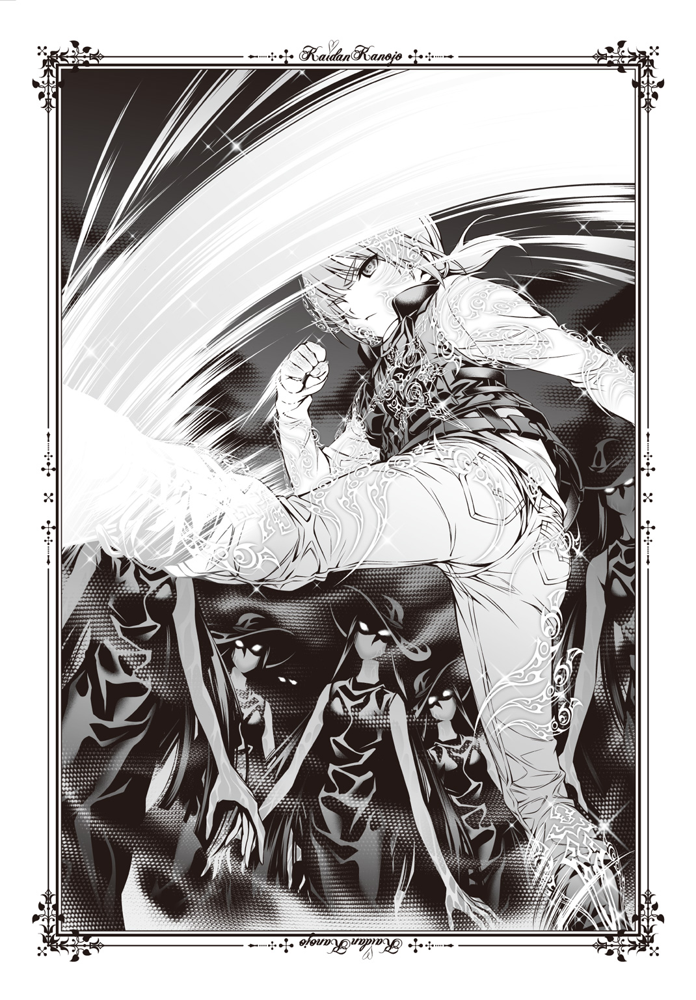
「さあ――て、最後ぉ！」
濡女の顔面に向けて、右拳を振りぬいた。あっさりと消え去った怪異は影もなく、少し息のあがった自分一人が廊下に残されている。ずきん、と右手のひらに痛みが走った。見ると糸が食いこんでしまい、うっすらと血がにじんでいる。
この技の弱点だ。糸がゆるめば陣が乱れて効果を失い、締めつけすぎれば自分の体を痛めることがある。実戦で使ったのは初めてだったが、陣が乱れることを恐れてしまった。
その代わり私の弱点である、霊力や持久力のなさはカバーできる技でもあるが。
「......改良が必要ですね」
「お、なんか見つけた？」
糸を回収していると、大徳寺先生が現れた。上の階の探索が終わったということは、かなりの速度で駆け巡ったのだろう。敵もいなかったようだ。先生は私の様子を見て怪異と戦ったのを悟ったらしく、すう、と目を細めた。
「濡女、いたか？」
「ええ。体全体が濡れていましたから、たぶん」
それより問題は地下道だ。私は先生にそれを示した。
「どうやらこの下に何かありそうなんですけれど」
「......これ、血の匂いだな」
眉をしかめた先生が錫杖を鳴らして階段を下りていく。不用心にも思えるが、私よりも圧倒的に戦闘能力が高い先生だ。気にする必要はない。
血の匂い。さっきの濡女は、塩水ではなく血で体を濡らしていたのではないか。ふと、そんなことを思ってしまう。もう一体も残っていないので確認はできないが。
「発電機がある。小百合、暗視ゴーグル外せ」
先生の指示に従ってゴーグルを外す。目元が涼しくなった途端、ぱっと階下が明るくなった。灰色の階段が光の中に現れ、先生が顔を出す。
「一緒に来るか？」
「行きます」
埃で滑るんじゃないかと思ったが、そんなことはない。むしろもっとも埃がない床面だった。私は両手の糸を構え直して、そろそろと下りる。地下にはまず廊下があり、その奥に鉄の扉が見える。右側はダクトや水道管があるのみの殺風景な壁だった。下りてすぐのところに発電機のモーターが動いているが、古ぼけて蜘蛛の巣が張っている。
先生はずかずかと鉄扉に近づき、警戒もなく開いた。途端、むわっとすえた血の匂いがあふれだす。私も先生もたまらず少し顔を背けたが、目だけはその奥へと向いていた。暗闇の中までは見えない。
先生が中に入る。不用心な先生に比べればずっと憶病な歩みで、私は警戒しながら部屋に入った。
「電気のスイッチどこだ......？」
先生は壁づたいに手をはわせて確認しているのだろう。私は逆サイドの壁を確認する。案外近い位置にスイッチがあったので、先生に声をかけてからスイッチを入れる。
チカチカ、と音がして蛍光灯がつく。そこには三つの手術台が並べられた奇妙な空間があった。しかも、どれも赤茶色い染みでべったりと床まで汚れている。研究所だったころのものではないだろう。妙に新しい。
「なんだこりゃ......？」
先生の厳しい視線が手術台の上を滑り、その奥にある棚を通り、さらに奥の空間で止まる。私も見た。
マネキンだと思った。それぐらい現実味がないのだ。
私は近づく。手術台の間を抜け、棚と棚の間を通り、切れかけた蛍光灯の明滅にさらされた最奥の――肉の塊に。
十名余りの女性が、真っ裸でこと切れていた。
「......先生、これ、失踪した人たちですか......？」
「たぶん、そうだろうが......どういうわけだ？」
先生の声が震えているのは、その死体のいくつかが体を分断されていたり、あるいは腐敗しかけていたり、不自然に折り曲げられていたりするからではない。私もすぐ、それに気がついた。
死人はみな、左腕に龍の刺青を施されていた。
明らかに見覚えのあるものだ。
「黒川夢乃の......『黒龍』！」
『刃心！』
いきなり男の声が響く。私も先生もびっくりして振りかえった。私たちが入ってきた扉のはるか向こうから聞こえた気がした。連想したのは、先生にいつもついてきていた眼鏡をかけた男の幽霊だ。彼がいま、先生を呼んだのか。
なんのために？
「小百合、逃げ――」
血相を変えた先生の言葉は最後まで聞こえなかった。どんっ、と地面ごとゆれたような感覚は確かにある。地震かと思ったが、違う。地面の下が震源地ではない。何かが壊れるような、爆発するような音が聞こえた。
建物が、崩壊している――？
「罠か！」
先生が叫んだときには遅い。誰の力か知らないが、入ってきた唯一の出入り口は勢いよく閉まってしまう。蛍光灯が明滅を繰りかえし、私は先生のすぐそばに寄りそって上を見た。
ぴしり、とコンクリートの天井にひびが入る。
そのまま割れて崩れ、落ちてきた。
「小百合！」
先生に抱きとめられる。体温に包まれて世界が真っ暗になり、そして。
崩落の激しい音と、先生の叫びだけが響いた。
「殺したはずだ、殺して埋めたのに！ あの野郎――煉獄天左衛門！」
誰の名前なのだろうと思うより先に、雨のように激しく断続的に起こる衝撃に潰されて、私の意識は飛んだ。
今日ボクがお昼ご飯を食べたとき、灯はいなかった。仕事で忙しかったらしく、巫女服に身を包んだ夢おばちゃんとボクの二人だけでオムライスを食べたのだけれど、そのとき夢おばちゃんが困った顔で言った。
「詠ちゃん、ちょっとお願いしてもいいかなぁ？」
ボクの名前は化野詠。鷹夏神社に居候している座敷童子だ。とは言ってももう座敷童子としての力はほとんどなくて、ただの幽霊みたいなものである。
そこらの幽霊と違うのは、ボクが誰にでも見ることのできる存在である点だ。
すなわち、ほとんど人間の子どもと変わらない。灯に言わせれば「小学校三年生の女の子」ぐらいの外見らしい。
「何、夢おばちゃん」
「夢乃がねぇ、学校からの大事なお手紙をねぇ、忘れていっちゃったのぉ」
夢おばちゃんの喋り方はゆったりとしていて慣れるのに時間がかかる。すごく綺麗で手触りのいい黒い髪の毛を大きなお下げに編んで肩から垂らしているのを見ながら、ボクはオレンジジュースを飲んで話を聞いた。
「それでねぇ、届けたいんだけれどぉ、私も兄様もちょっと忙しいのぉ」
兄様――夢おばちゃんは自分の夫である灯のことをそう呼ぶ。実のお兄さんというわけではない（っていうかそれだと結婚できない）。でも灯の顔立ちが昔亡くしたお兄さんにそっくりだったということで、昔から「兄様」と呼んでいるそうだ。
「忙しいって、どうしたの？」
「あのねぇ、『殲』に依頼が殺到していてぇ、処理するのに時間がかかっているのぉ」
『殲』とは灯のつくった霊能力者集団のことだ。全国から怪異がらみの依頼を受け、適材適所に人員を配する役目を、本部であるこの鷹夏神社が負っているらしい。
つまり、灯も夢おばちゃんも今日は忙しいということである。なんとなくそれは察していたので、ボクは先回りして夢おばちゃんが言いたいであろうことを言った。
「じゃあボクがその大事なお手紙っていうのを、ママに届ければいいんだね！」
ママ、というのはいましがた夢おばちゃんが言った「夢乃」すなわち黒川夢乃のことだ。ボクと本当に血を分けた親子というわけではないけれど、ママ代わりなのである。『黒龍』という名の呪いにより怪異同然の存在となってしまった彼女は、ある事件を通じてボクのママとなった。ちなみにパパと呼ぶ相手は近所に住んでいる斉藤槍牙だ。黒川夢乃の幼馴染の（パパは認めないけれど）恋人かつ旦那さんで、最悪器官という力を有する。
ボクがこうして人間同然の存在でいられるのも、パパの力のおかげだ。
昨日はパパとママはちょっと色々あって大変だったみたいだけれど、今朝はいつものように二人仲良く登校していったはずだ。ボクは大事なお手紙とやらの入った封筒を受け取った。中身はわからないけれど、今日中に提出しなくてはいけないもののようだ。
「それじゃあ詠ちゃん、よろしくお願いねぇ。あ、ゆっくりでいいからねぇ。ご飯を食べたらぁ、ちゃんと歯磨きしなくちゃいけないからねぇ」
「うん、わかった！ 任せてよ！」
ボクは座敷童子。永遠に子どもだ。だから夢おばちゃんに対しても、パパとママに対しても、灯にだって、子どもでなくてはならない。おつかいを頼まれるのも、それをこなすのも子どもらしい行動だと思う。
それに夢おばちゃんや灯、パパやママのためになることはしたかったのだ。
こうしてボクは、このおつかいを引き受けたのだった。
鷹夏市はちょっと前にたくさん雪が降ったけれど、今日はもう路肩や日陰に残っているだけで地面が見えていた。風が冷たいので、また降るかもしれない。
鷹夏中学校は歩いて十五分くらいかかる場所にあった。ボクは夢おばちゃんから借りたポーチを肩からななめがけに下げ、歩いていく。道中、自動車や自転車とぶつかることもなく、ボクは中学校へと到着した。世の中には警備員やガードマンがいる学校もあるらしいけれど、鷹夏中学校においてそれはない。いまも犬を連れたお爺さんが散歩がてら、中学校の中を抜けてきたようですれ違った。
きちんとお爺さんにあいさつを返し、犬の頭をなでさせてもらってからボクも裏門から敷地内へと入る。すぐ左手には自動車がいっぱい並んでいた。どうやら駐車場らしい。その片隅にあるものに、ボクは目を奪われた。
ブランコだ。何故か遊具が一つだけぽつんとある。
そこにボクよりもずっと幼い子どもが座っていた。
普通に考えたら保育園か小学校に行っている時間だ。ボクは怪異だからまだ見送られているけれど、この子はどうしてそういったところに行っていないのだろうか。そしてどうして中学校の中にある遊具で遊んでいるのだろうか。
ちょっと気になって、ボクは歩みよった。その子が顔を上げる。少し繊細そうな顔つきをした、線の細い男の子だった。黒い真っ直ぐな髪の毛はつやつやとしていて、おかっぱの髪型がすごく似合っている。黒目がちの瞳に、ボクは問いかけた。
「ねえ、こんなところでどうしたの？ 何、やっているの？」
「お母さんを待っているの」
声も落ちついており、非常に大人びた子どもだった。襟のあるシャツにアーガイルチェックのベストという組みあわせも、なんとなく上品だ。
でも防寒着を何も着ていないのは、いくらなんでも寒いだろうと思う。ボクなんてダッフルコートにマフラーを巻き、ニット帽を被っているのに。
「お母さん、いつ来るの？」
「ずっと来ないの」
淡々とした返事だ。長い間待っているのだとしたら、さぞ寒いだろうとぼくは中学校の校舎を仰ぎ見る。中で待っていてはどうだろうか。
「ねえ、ボクと一緒に中に行かない？ 外で待っていると寒い......よ......？」
ほんのちょっと校舎を見ただけだ。それだけなのに。
男の子の姿はもうどこにもなかった。ブランコだけが、風もないのに少しゆれていた。
男の子のことも気になったけれど、ボクはおつかいの途中だった。校舎の中に入るための手順がわからなかったので、とりあえず大きく開いていた昇降口から中に入る。隅っこに誰も使っていないっぽい「鷹夏中学校」と書かれたスリッパもいっぱいあったので、借りた。たぶんお客様用だろうとは、想像がつく。
ぱたぱたと鳴るスリッパの音を楽しんで廊下を進むと、大人の人たちの声が聞こえる。あるいは黒板にチョークで書きつける音や、ペンを滑らせる音。静かで、でも遠くから声が響いているような面白い感覚だった。ボクは前にママから在籍しているクラスを聞いたことがあったので、一年一組の教室を目指す。
それはすぐに見つかった。そしてここは静かじゃなかった。
「黒川ぁ！ お前いい加減にしろ！」
「槍牙くん、いまは授業中なのよ？ 静かにしていろと命じたのは槍牙くんじゃない」
「静かにしてりゃ何やってもいいって意味じゃねえ！」
「槍牙くんの首筋に舌をはわせることはやってもいいっていう意味ね？」
「違う！」
「黒川と斉藤、お前ら黙れ授業中だぞ！」
パパとママと、最後は誰か大人の男の人の声だった。授業って楽しそうだな、と思いながら背伸びをして、ボクはドアの小窓から教室の中をのぞこうとする。
その瞬間、狙い定めたかのように引き戸が開いた。誰かが飛びだしてきそうになったのであわてて足がもつれてしまったが、なんとか踏ん張った。それに飛びだしてきそうになった人もボクに気づいて足を止めてくれた。
「って、詠ちゃん？」
ぶつかりそうになったのは、パパだった。ブレザーの制服は今日もきっちりとしていて、真面目なんだなあとボクでもわかる。その後ろからにゅっと顔を出したママが、あら、と笑みを浮かべる。真っ赤なドレスのような服は派手で、黒い蜘蛛の糸のデザインがあちこちに施されているのが格好いい。シルバーのネックレスや指輪がきらきら光る。
ボクは二人に両手を広げて言った。
「来ちゃった！ パパ、ママ！」
ママはすごく嬉しそうに「いらっしゃい」と言ってくれたし、パパは苦笑いのような顔を浮かべてほほを引きつらせた。しかし、それより大きな変化がある。
教室の中の空気が一気に冷え、固まったのだ。
探検気分でいたけれど、実は重要な手続きをすっ飛ばしてここへ来てしまったのかと不安にもなる。中学校は勉強する場所であって、ボクが来てはいけなかったのかと。
熊みたいに大きくて太った大人の男の人がぬっとパパとママの後ろに現れ、しかめっ面を浮かべたままボクに尋ねた。
「君、うちの学校の生徒ではないね？」
「あ、うん」
言ってから敬語で返さなかったことを咎められるかもと内心、びくびくしていた。男の人はくたびれたポロシャツにチノパンという出で立ちで、額が広い。その分だけ髪の毛がなくて、少し脂っぽいようなのでシャンプーしてあげたい気持ちが強くなったけれど抑えることにした。前に街中で薄毛のおじさんを見かけたので素直にそう言ったら、そのおじさんに激怒されたのだ。どうやら髪の毛はナイーブな問題らしい。
ボクは他人の髪の毛が好きだから、ついつい注目してしまうのだけれど。
ふむ、と男の人はうなずいてから思案するようにしてもう一度尋ねてくる。
「斉藤か黒川のどちらかが忘れ物でもして、持ってきてくれたのかな？」
うなずく。ポーチから封筒を取りだし、ママに差しだした。ママはパパの後ろから腕を伸ばしてそれを受け取り、「偉いわね、詠」と言って頭をなでてくれた。指輪がごつごつと当たっていたけれど、やっぱり頭をなでられるのは嬉しい。
えへへ、と笑っていると熊みたいな人はさらに質問を重ねた。
「で、君はさっきこの二人のことをなんて呼んだのか、教えてくれるかな？」
「え、パパとママだよ？」
「斉藤、黒川ぁ！ お前らちょっとこっち来い！」
ボクが答えた瞬間、熊の人はものすごい大声で怒鳴り、パパとママの首根っこをつかんで持ちあげる。パパは「あーあ」とでも言いたげな苦笑いを浮かべ、ママは気にもせずボクに笑みを見せていた。教室の中にいたたくさんの人たちはがやがやと騒ぎだし、ボクは必死で考える。どうしてパパとママが叱られようとしているのか、その理由を導きだす。
そうだ、さっきパパとママは言いあいをしていた。きっとこの人や教室の中の人たちはそれを喧嘩だと思ったに違いない。「この子のパパとママなら子どもの前で言いあいなんてするな」と思っているんだ。ボクはそこまできちんと考えてから男の人に言った。
「あの、違うの！ 違うからパパとママを怒らないで！」
パパとママを連れてどこかへ行こうとする熊の人は立ち止まる。教室の中にいるたくさんの人たちも静まりかえり、興味津々といった様子でボクのことを見ていた。
「パパとママがいつも色々と言いあったり、くんずほぐれつ抱きあってからみあったりしているのは、愛しあっているからなんだよ！」
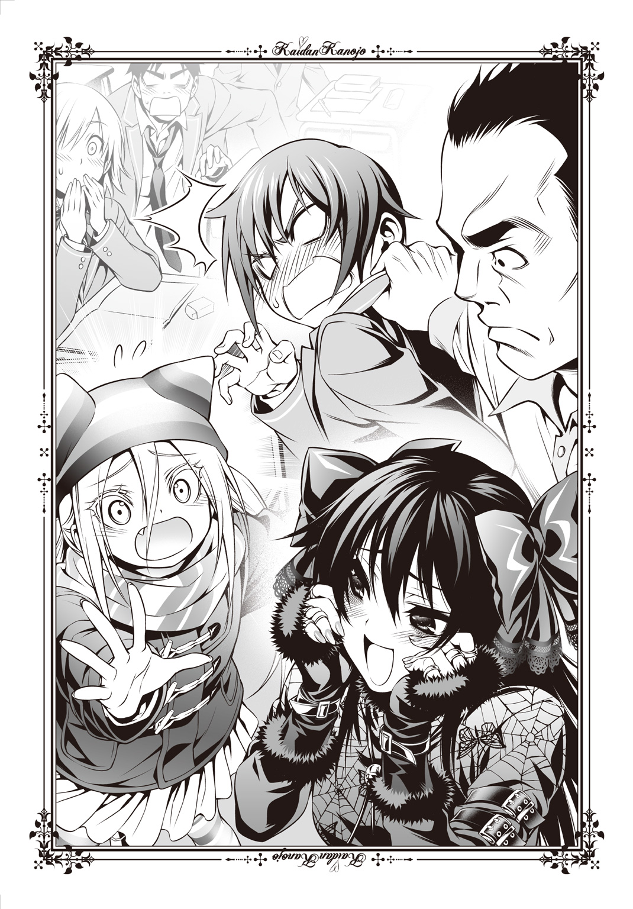
「詠ちゃん、何を言っているの？」
パパが悲痛な声をあげる。教室の中の人たちがまたざわつき、熊の人はパパに怖い顔を寄せて「お前いつもそんなことやってんのか？」と尋ねていた。
「先生、違います。俺は望んでそんなことをしていません」
「じゃあ黒川から斉藤にやっているのか。それで中学生なのに子どもができたのか」
「待ちなさい、布川丈一教諭。中学生になってから子どもを産んだって、詠ぐらいの大きさに育つ年月は経っていないわよ。つまりしこむならその前になるわ」
「黒川、お前黙っていろ」
「いつだ、いつできた子どもだ。言ってみろ斉藤！」
「先生、その子はふざけてパパとか呼んでいるだけの、黒川の家で預かっている親戚の子どもです。ね、詠ちゃん」
パパがボクに同意を求める。先生と呼ばれた熊の人も見てくるので、ちゃんと答えた。
「パパ、ボクふざけていないよ！ だってパパは本当のパパだもん！」
「詠ちゃんちょっと考えてものを言って！」
パパが悲鳴をあげる。熊の人が目をむいてパパをにらみ、ママが言った。
「詠。ママも本当のママよね？ パパとママの愛の結晶よね？」
愛の結晶、という言葉がいまいち理解できなかったけれど、ママも本当のママなのでボクは大きくうなずく。熊の人に言った。
「二人ともボクの本当のパパとママなの！ 大丈夫、家庭が冷えていることはないから！ パパは恥ずかしがり屋だからいつも冷たいふりをするけれど、心の中ではいつもママと一緒にお風呂に入ったり、一緒の布団で寝たりしたいってちゃんと考えているんだって！」
「黒川！ お前詠ちゃんに何を教えてんだ！」
「大丈夫よ、槍牙くん。真実しか教えていないわ」
「いまどう考えても真実じゃないこと言ったよな！」
「ちょっとした言葉の受け取り方の違いね」
パパの照れ隠しが始まるけれどいつものことだ。一年一組の教室の中の騒ぎも過熱し、熊の人の額に青筋が浮いた瞬間、ボクの後ろから激しい女の人の声がした。
「静かにしなさい！ いまは授業中ですよ！」
ぴたり、と全員の騒動が止まる。振りかえるとそこにはスーツを着た女の人が立っていた。長い髪を後ろでまとめており、きっちりとした印象を受ける。細身で姿勢がいいその人は、眼鏡越しにきっときつい目をこちらに向けて言葉を続ける。
「布川先生まで一緒になって、いったい何をされているんですか。ここは学校ですよ」
「......面目ありません」
熊の人が頭を下げる。少ししょげた様子で、パパとママを床に下ろした。ママはすぐさま私を後ろから抱きしめ、すりすりとほおずりをしてくる。パパは熊の人に謝ってから、なおも廊下の真ん中で私たちをにらむ女の人にも頭を下げた。
「すみません、橋本先生。黒川の忘れ物を、この子が届けてくれたんですが......」
「言い訳は結構です。後で斉藤さんと黒川さんは布川先生に反省文を書いて持っていくこと。いいですね？ それと」
女の人の目がきつくボクをにらんだ。思わずびくっとするぐらい、鋭い目だった。
「子どもが中学校に来るんじゃない。出ていきなさい。ここは遊び場じゃないんです」
「ちょっと待ちなさい、橋本那美子教諭」
戻ろうとした女の人がぴたりと足を止め、ボクの頭の上――たぶん、ママをにらむ。
「ずいぶんな言い方をするじゃない。詠がここに来るのは正当な理由があってのこと。じゃあ何？ もし私の家に不幸があったとき、詠がメッセンジャーを務めてもあなたは同じようになじるの？ なじらないとしたらそのラインはどこ？ あなたの気まぐれ？ はっ、そんなもの守ってやる義理はないわね」
黒川、とパパが少し顔をしかめて注意する。挑発的なママの言い方に橋本先生と呼ばれた女の人が向き直って言った。
「よく口が回るのはいいけれど、校内のあらゆることがらを判断するのはあなたの尺度でもない。覚えておきなさい、黒川さん」
「覚えておかなくてもわかるわよ、それぐらい」
「あー、すみません橋本先生。黒川には俺から言っておきますので」
パパがとりなすように愛想笑いを浮かべてへこへこと頭を下げる。ふう、と橋本先生が息をついて言った。
「毎日毎日、騒がずにいられないわけじゃないでしょう。節度をわきまえなさい。昨日だって非常にうるさかったですよ」
そう言って振りかえった橋本先生の髪どめに、蝶々の細工がぶら下がっている。きらきらと輝く紫色のそれは、ゆらゆらゆれていた。
「......とりあえず、教室に入れ。それと君。ちょっとだけ話を聞きたいんだけれど」
「あ、はい」
熊の人に言われて、ボクとパパとママは教室に入った。興味ありげな視線にさらされてしまうけれど、ママが抱きしめてくれているとそれも怖くない。パパだけが少し憂鬱そうにしていたけれど、ママは嬉しそうにボクにほおずりしていた。
それからボクらは熊の人に、ボクとパパ、ママの間に血縁関係がないことを説明した。怪異とか座敷童子とかは言わず、ボクはママの家で預かっている子どもで、小学校にはいま行っていないけれど今後どうなるかわからないのだと言うと熊の人は理解してくれたようだ。パパママ呼びも「お兄ちゃん」「お姉ちゃん」と呼ぶことの延長線上、みたいな形で納得してもらえた。まあ、初対面のときはそう呼んでいたし間違いでもない。
そういえばもう一人の顔見知りであるお姉ちゃん――野波小百合は教室にいなかったけれど、休みだそうだ。『殲』の仕事で鉤鮫村というところへと赴いているのだとか。
なお熊の人への説明の合間にママが「いえ、いずれ私は槍牙くんの子どもを身ごもるのよ」とか「子どもと血縁関係がないからと言って私と槍牙くんの夫婦関係は崩れないわ」とか「詠が小学校へ通うのなら父兄参観の日は私と槍牙くん二人で行かなくちゃ」とか言ってはその度に熊の人がママに説教をしたため、説明が終わったときにはもう授業が終わりそうになっていたけれど。
「ブランコ幽霊ね。私も見かけたわ。とはいえ、悪いものでもないから放置しておいたし、確かブランコも、あの駐車場が公園だったときの記念に残してあるというだけで、あと数年もすれば撤去されると思うわよ。ブランコは隅っこにあったから、残しても邪魔ではなかったらしいわね」
授業が終わるとお掃除になる。パパとママは二人で家庭科室の掃除を担当しており、ボクはそれについていった。どうして二人きりでこんな広い教室を掃除するのかと尋ねると、ママは「私とパパは、他の連中なんぞと関わっている時間がもったいないの。だからこういう割りふりにしてあるのよ。いつでも二人きり、あるいは詠を入れた家族水入らずで過ごしていたいわ」と説明してくれた。
パパが黙々と掃除をこなし、ママはパパに抱きついたりしがみついたり耳に息を吹きかけたりしては邪険にされてしまう。結果、パパは「邪魔するなら廊下にいろ」とママを追いだしたので、ボクはママにくっついて廊下に出た。校舎の端っこにある家庭科室には、誰の声も届かない。
そこでボクは、中学校の片隅にある駐車場のブランコで起きた怪事について話したのだ。パパは最悪器官の力ゆえ、怪談を耳にしてはいけないから中では話せなかった。
ママはボクの話を聞いてすぐ、一つの怪談を語ってくれた。
男が夜、会社から帰ってくると公園のブランコに子どもが一人座っていた。
もう日付が変わるような時刻にどうして、と思って話しかけた。
「こんな時間に何をしているんだい？」
しかし子どもは答えない。
仕方がないので男はその場から立ち去ろうとした。
すると、ぎぃこぉ、ぎぃこぉ、と音がする。
ブランコをこぎ始めたのかと思って男は振りかえった。
しかしそこには誰もおらず、無人のブランコがゆれているだけだった。
それからも夜、公園を通ると子どもが一人でブランコに座っているという。
しかし男は二度と話しかけることはなかった。
「色んなパターンがあるけれど、まあたいていは何もしてこないわ。よほど恐ろしい怪異というわけではないけれど......個人的には、現代風刺の一つと思っているわ」
「現代風刺って？」
「少し前から、共働きの家庭が増えたのよ。子どもが夜遅くまで親を待つ、という状況が増えたのね。中には公園で遊んで親を待つ子どももいたのでしょう。それが奇異に思えて、また批判の意味をこめてこの怪談ができたのかもしれないわ。まあ親の事情もわかるし、いまはもう公園で待っている子どももいないわよね」
ボクにはよくわからない。仕事から帰ってくる親を待つ気持ちはパパとママがいるから微妙にわかるけれど、でも灯や夢おばちゃんがいるから一人で夜のブランコをこぐということもないからだ。
でもあの男の子は、誰かを待ち続けているのだろうか。
「ねえママ、幽霊って恐怖の塊なんだよね？」
死んだ者の魂ではない。幽霊とは、生きている者の念が集まったものだ。
それは灯、あるいはママから教えてもらった知識の一つだった。
「恐怖、もとい強い感情ね。とはいえ、恐怖が一般的なのだけれど......幽霊やなんかは、未練というパターンも多いかもしれないわ」
「未練？」
「あの人に生きてもらいたかった、とか、きっとあの人はいまもあそこにいるんだろうな、とか。そういう気持ちや思いもね、積み重なれば怪異となる。幽霊という名の怪異にね」
ボクの脳裏に浮かんだのは、水戸麒一郎だった。
ボクが座敷童子になってから、ボクを守り続けてくれた人。彼は秋に死んだ。ボクを化野集落と名づけられた場所から外へ出そうとして、最後まで命がけで守ってくれた。
それを惜しんで、生きていてくれればと強く願えば、彼も幽霊として帰ってくるのか。
「......そんなに強くは願えないかな」
帰ってきてほしい気持ちはある。でもボクには、彼の死を受け入れた部分もある。そんな中途半端な願いでは、きっと彼は戻ってこない。いいんだ。
もう、休ませてあげなくてはいけない。ボクはそう思っている。
「あの子も、きっと休みたがっている......」
「詠。あのブランコにいる幽霊ならば放置しておいても問題はないわよ。悪霊の類じゃないんだし、槍牙くんにも詠にも悪影響はないのだもの」
「うん、そうだね......」
わかっている。でもボクは水戸麒一郎とあの子どもを重ねていた。
母親を待ち続けるのはきっと苦痛だろう。それが人の感情からつくられた人間ではない存在なのだとしても。
ボクと同じ、心を持った怪異なのだから。
「――黒川さん」
厳しい声がした。はっと振り向くと、そこには橋本那美子先生と呼ばれていたスーツ姿の女の人がいる。その目はじっとりとボクをねめつけていた。
「いまは掃除の時間でしょ。何をしているの」
「真面目に掃除をしていたら、槍牙くんが邪険にしたのよ。その代わり槍牙くんが中の掃除を終わらせたら、襲っていちゃいちゃしていいそうなの」
パパはそんな約束をしていなかったけれど、ママが言うならそうなのだろう。橋本先生は「ああそう」と興味なさげに返してボクに言った。
「子どもは出ていきなさい。ここは学び舎よ」
「ちょっと。いちゃもんをつけないで」
ママがボクをかばうようにずいっと前に出てきて刺々しい雰囲気となった。橋本先生とママがにらみあい、ボクは何を言えばいいのかと悩んでしまう。それとも余計なことは言わないほうがいいかなと考えたとき、後ろの扉が開いた。
「おーい、黒川。椅子を戻すから手伝え......あ、橋本先生」
「斉藤さん。この子どもは早く帰しなさい。さもないと両親に連絡するわよ」
橋本先生はそれだけ言ってボクとママの隣を抜け、パパの前も素通りして廊下の向こうまで行ってしまう。廊下の端にはサッシの扉があり、脇の小箱から靴を取りだすと橋本先生は外へと出た。どうやらすぐそばに置いてある車に用があったらしく、先生はドアを開けるとダッシュボードの中をあさる。
「......あの女、通勤用の車をあそこに停めているのね」
「あそこも駐車場なんだ？」
いえ、とママは首を横に振った。
「さっき詠が言っていた場所だけよ。職員の駐車場でも来客用でもね。ま、でも家の方角によってはそこに停めると便利なのかもしれないわ。それより」
すすす、とママはパパに近づき、そのまま家庭科室に押しこんだ。にやあ、とママの笑みが深くなる。
「さあ槍牙くん。掃除が終わったら襲ってもいいっていう約束だったわよね。さ、そこの机の上に仰向けになって。それとも槍牙くんが私を襲う？」
「なんの話をし......ちょ、おい！ 黒川やめろ！ ベルト返せ！ ズボン下げるな！」
パパとママは、何やら楽しそうなことを始めていた。
橋本先生に強く言われたことを気にしたようで、パパは帰りのホームルームになる前にボクを帰した。ボクとしてもママに忘れ物の書類は渡せたし、迷惑になるなら帰ったほうがいいかと思って従う。
そして帰り道、やっぱり敷地の片隅にあるブランコに男の子の姿を見つけた。
「ねえねえ」
「何？」
話しかけると、まるで生きているみたいに返事をしてくる。ボクは気になってそばに行ったはいいけれど、なんと言えばいいのかわからなくてちょっとだけ困った。でも男の子のさらさらの髪の毛を見ていたら、衝動が膨れあがる。
「髪の毛、触ってもいい？」
「え」
申し出が意外だったのだろう。男の子は眉をひそめて少し身を引いた。ボクも手を振って「あ、嫌ならいいんだけど」と遠慮する。
他人の髪の毛は気になる。ボクは座敷童子になるまで普通の人間だったけれど、その人生の中で本を読んだこともなければテレビを観たこともなくて、娯楽といえば髪をいじってもらうことだけだった。だからいまでも、ボクは人の髪の毛に触れたい。
と言っても断られることも多い。男の子がそれを拒むのも自然なことだった。ふつうの人は、初対面の相手に髪を触られることに抵抗があるようだ。
しかし彼はちょっと考えるように視線を巡らせてから、「いいよ」と言ってくれる。
「抜いたり乱暴にしたりしなければ、別に」
「本当？ ありがとう！」
許可をもらえたので遠慮なく触る。指にからめて手のひらでさすると、本当にさらさらとしているのがわかる。細い髪の毛はぱらぱらと手の中でばらけ、でもなでるとまとまる。小さい頭の骨の丸みもあって、非常にいい手触りだった。
ぐしぐしと髪の毛を堪能し、ふー、と一息ついたところでボクは男の子にお礼を言った。男の子はされるがままだったのだけれど、途中からくすぐったかったのかうっすらと笑みを浮かべて恥ずかしそうに何度もお辞儀をして見せる。
ようやく一息ついた心地で、ボクは本当に尋ねたかったことを尋ねた。
「ねえ、訊いてもいい？」
「いいよ、何？」
「どうしてずっと来ないのに、お母さんのことを待っているの？」
その瞬間、男の子はつらそうな顔をした。でもお昼頃、確かにこの子はボクにそう言ったのだ。母親は来ないのだと。なら、何を待っているのだろう。
「わからない。気がついたらここにいて、お母さんのことを待っていなくちゃいけない、そう思ったんだ。でもわかっているんだよ。お母さんは来ないって」
ママに以前、聞いたことがある。幽霊の大半は、気がついたら自分が存在していて、そして何をすべきかはわかっているけれど、その理由はわからないのだと。
それは幽霊が「死んだ人間の魂」などではなく「生きている人間の感情」が寄り集まっただけのものであり、つまり誰か生きている人、あるいは生きていた人の考えた物語――怪談に登場する存在理由や行動原理が定められているかららしい。
だからこの男の子のことを強い感情をもって考えた人以外、どうして待っているのかはわからない。ボクは隣のブランコに腰を下ろして尋ねた。
「ねえ、名前、なんていうの？」
「勉」
「名字は？」
「......なんだったっけ」
思いだせないみたいだった。ボクは勉くんにわかっている限りのことを尋ねる。それに答える形で、ボクはどんどん勉くんのことを理解していった。
勉くんは五歳で、保育園に通っていた。その保育園はここから歩いて十分ぐらいのところだったけれど、いつもそこから歩いてここまで来て、お母さんに迎えに来てもらっていたのだ。お母さんは働いているから、この中学校を待ちあわせ場所にしていた。お母さんは優しくて、カレーライスをつくるのが得意で、蝶々のデザインされた小物が大好きで、勉くんが計算ドリルや漢字練習をやるといっぱい誉めてくれる。勉くんはジャングルジムで遊ぶのが大好きだったのだけれど、高いところはお母さんが心配するからシーソーやブランコばかりやっているふりをしていたことも教えてくれた。家のそばに大きなカエルのオブジェがあって、それに登ろうとして勉くんが落っこちたことがあってから高いところに登らせるのが怖くなったのだと、内緒話をするように小さい声で話した。
それから家にはルパンという名前の犬もおり、お母さんがルブランという外国の小説家が好きだから名づけたのだということだ。どうしてルブランがルパンなのかは勉くんもわからないらしく、ボクもちんぷんかんぷんだった。
お父さんはいないのか、という質問に対しては「いるよ」と言った。でもお父さんのことはちゃんと思いだせないみたいだった。名字と同じように。
勉くんも段々ボクに遠慮なく話すようになって、尋ねることが尽きるのに三十分もかからなかった。元々、話し上手なのかもしれない。
話が終わって気づいたことは二つだった。一つは、勉くんの記憶はお母さんのことばかりだったこと。それからもう一つは、勉くんの家の場所だ。カエルのオブジェなんてそうそうない。ボクがまだ鷹夏市に来てすぐのころ、パパとママにあちこちを案内してもらったのだ。だからその場所は見当がついた。
「勉くんはさ、自分が幽霊だってわかっている？」
「......うん」
少し言葉に詰まりながら勉くんはうなずいた。ボクは頭の中に水戸先生のことを思いだしながら、その肩に手を置く。
「あのね、ボクの大好きだった人も秋に死んじゃったんだ」
「......そうなの？」
「うん。でね、勉くんとお昼に会った後でボク、思ったんだ。その人が幽霊になって現れたらどうしようかなって。でもね、ボクは幽霊になってもらってまでその人に会いたいって思えなかった。それはね、会いたくないっていうことじゃない。ただその人ってね、ボクにいっぱい良くしてくれたの。そのためにはきっとつらいことも大変なこともあったと思う。だからね、ボクはその人に会うことよりも、もう休んでいてほしいって思ったんだ」
勉くんはじっとボクの目を見る。それはさっきまで話していたときと違った色を持っている気がした。少し悲しそうでもあり、でもすがってくるようでもあった。
「勉くんをね、休ませてあげたい。もう待っているの、疲れたんじゃないかなって」
「......どうやったら、休めるのかな」
ボクにはママや灯みたいな力はない。だからここで勉くんを成仏させてあげることはできない。ボクにできることは、「勉くんの幽霊」という思いを抱いている人に会い、彼をもう休ませてあげてほしいとお願いすることだけだ。じゃあ、誰の気持ちが勉くんをここに縛りつけているのか。勉くんはお母さんの話ばかりをした。お父さんもいるのに、勉くんはお母さんとの思い出やつながりばかりを話した。
それは勉くんの幽霊をつくりだした人の思い出でもある。
だからきっと、勉くんのお母さんの無念が通じた結果だと、ボクは確信した。
「ボクに任せて」
パパとママとお姉ちゃんと先生がボクを助けてくれたときみたいに。
ボクが君を、救ってみせる。
ボクは一度勉くんとお別れし、歩いてカエルのオブジェがあるところへと向かった。この辺りには昔、珍しいカエルが生息していたらしく、それが元となっていまではカエルを神の眷属として奉っているらしい。市内に神社はボクが居候しているママの実家しかないけれど、地区によってはそういう信仰もあるとか。
それゆえ、ここには大きなカエルを三匹縦に積んだ形のオブジェがある。市内の鷹夏川で起きた合戦の歴史と合わせてか、カエルはみな武具を着けており、特に一番上のカエルは忍者のモチーフで飾りつけられている。地域的なつながりはないが、自来也という忍者がカエルの妖術を使ったという伝説のせいだろうと、ママはパパに内緒でこっそりと教えてくれた。
オブジェの周囲には家がそれなりにある。とはいえ背面は川原だし、お店などもあるので数えたらそう多くはない。ちょっと多めに見ても「家のそばにカエルのオブジェがある」と言えるような家は二十五軒だけだった。一つ一つしらみ潰しにしていけばいいだろう。ボクはそう思って片っ端からチャイムを鳴らし、幼い姿を利用して（と言っても、ボクは普通に喋っても外見相応に見えるとパパが言っていたけれど）勉くんの家を探した。
「すみません、カエルのそばの家の勉くんを探しているんですけれど、ここですか？」
名字がわからないのでやりにくい部分はあったけれど、この外見だと「すみません、間違えました」で後腐れなく立ち去ることができる。多少ボクの髪の色に驚いたり敬遠したりする人はいたけれど、どの人たちも話は聞いてくれた。
有力情報を得たのは、高倉さんというお婆さんに話を聞いたときだ。
「勉くん......？ そこ、三軒隣の家にそんな子がいたと思うけどねえ」
「保育園に通っていた？」
「うん、そうだったね......小学校に上がる前に、亡くなっちゃったんだけどねえ」
「それ、いつのこと？」
「もう、五年ぐらい前のことになるかしらねえ」
「わかった、ありがとう！」
高倉さんは愛想笑いを浮かべながら手を振ってくれたけれど、その笑みは悲しげなものだった。ボクはそういう類の笑顔を、いくつも見てきた。名前も知らない、ボクのことを育ててくれて、髪をよく整えてくれたお婆さんのことを思いだした。
そういうときは少しだけ、白く染まった髪のことを後悔する。黒々としたあのときのままでいたかったと、まだボクが生きていたころに思いをはせる。だからいまの自分の髪は少し好きじゃない。いつかまた、好きになれるときが来るだろうか。
そんなことを思いながらぼくは、高倉さんの家から三軒隣の家へと向かった。
そしてボクは知ってしまう。お母さんは蝶々の小物が好きだという勉くんの話ですぐに思いつけば良かったのに。確かにあの人は、蝶々の髪飾りをつけていた。
そこにある表札にはこう書かれていた。
「橋本亥介 那美子 勉」
ボクは走った。そんなことをしなくても、家の前にいればいいはずなのに。
それだけで、勉くんのお母さんは帰ってきたはずだったのに。
たぶん、ボクは許せなかったのだろうと思う。怒りがボクを走らせた。
あんなにそばにいて、きっと毎日のように通っていて、それなのに。
橋本先生が、勉くんを迎えに行かなかったから。
中学校の校舎を大きく迂回して家庭科室そばの場所に出たとき、ちょうど橋本先生の車が発進するところだった。ボクは止めたくてその前に体を滑りこませ、大きく両手を広げる。白色の車のボディが目の前まで迫り、ボクは「あ、轢かれるかも」と思ってぞわりとした。
しかし車が大きく跳ねるようにして急停止して、ボクは轢かれなかった。その代わり橋本先生が窓を開け、今日聞いたどの声よりもおっかない怒鳴り声を出す。
「危ないじゃない！ 何をやっているの！」
「橋本先生に会いたかったの」
「そこをどきなさい！」
きつい物言いに、従いたくなる気持ちが芽生える。でもボクはここで負けたら、いつまでも勉くんがあそこで待ち続けるような気がした。何より、ボクには橋本先生に勉くんを迎えに行ってほしかった。このまま車を走らせても勉くんが待つあの場所へと着かないのは、ボクでもわかる。
橋本先生は、勉くんを迎えに行かないのだ。
きっと五年前からずっと、勉くんをあそこに留め置いたままだっただろう。
ボクがどかないのを見てか、橋本先生は車のエンジンを切ってドアを開けた。やっぱり姿勢のいい立ち姿で、彼女はボクの前に仁王立ちになる。その目は険しく、冷たくボクを見下ろしていた。
「あなた、斉藤さんと黒川さんが連れていた子よね？」
「化野詠だよ」
「化野さん。あなたは何が目的でこんな危険な真似をしたの？ もしかしたら大怪我して、死んじゃったかもしれないわよ？ 二度としないで！」
語気は荒い。それでもボクは橋本先生に怖さは感じなかった。それはきっと、先生がボクのことを案じて発言しているのだとわかっていたからだ。自分のためにではなく、ボクのために怒っている。
それでもボクは退くわけにいかなかった。
「危ないことをしたのはごめんなさい。でも、橋本先生にどうしても訊きたかったの」
「何を？」
「勉くんのことを」
ひゅっ、と橋本先生が息を飲んだ音がした。一瞬にして顔から血の気が失せ、真っ青になった顔をそらす。その目は怯えたように泳ぎ、橋本先生は自分の体を抱くようにぎゅっと縮こまった。ボクは自分の考えが当たっていて、少しほっとした。
「やっぱり橋本先生が、勉くんのお母さんだったんだね」
「......あの子は死んだのよ」
か細い声だった。どうして勉くんが幽霊として、怪異として生まれてしまったのか。ボクは先生の態度から察していた。意識していたのだ。あの駐車場のブランコに勉くんがいるだろうと思っていたに違いない。
ボクは指摘する。
「どうして橋本先生だけは車をこんなところに置いてあるのかな。先生たちは違うところに駐車場があるんでしょ？ なのに校舎の隅っこにわざわざ車を停めるのは、何か理由があるんだよね？」
橋本先生は具合でも悪いような様子で口元に手をやり、車のボンネットにもたれるように姿勢を崩した。青い顔は、恐怖に染まったそれだ。
「駐車場の隅っこにあるブランコ。あそこに勉くんがいるからだよね」
「......見たの？」
「うん。会って、話した。橋本先生。どうして勉くんを迎えに行ってあげないの？ 勉くん、ずっと待っているのに」
「違うわ、あの子は、そう......私を恨んでいるのよ」
恨む？ 首を傾げてみせると、橋本先生は青くなった唇を小さく動かした。
「いつもあの子は、あそこで待っていた。私が仕事を終えたら、一緒に帰るはずだったの。中学校なら人の目もあるから安心だし、だから私が仕事を終わらせるまでブランコで遊んでいてねって。でもある日、私が仕事で遅くなってしまったときに、あの子は事故に遭ってしまった。駐車場内じゃないわ。ここへ来るまでの道で......ひと気もなかったし轢いた車は逃げた。あの子は茂みの中に飛ばされてしまったから、誰もあの子に気づけなかった。私はあの日たまたま仕事が遅くなって、駐車場へ行くのが遅れたの。でも勉はいなくて、さんざん探したわ。警察のみなさんにも探してもらって......見つかったときには、もう息がなかった」
先生の体が車体を滑り、完全にくずおれてしまう。ボクより低くなった視線は伏せられて、吐き気がするときみたいに深く激しい呼吸を繰りかえしていた。
「私がもっと早くあの子を迎えに行けば、助かったかもしれないのよ。だからあの子は、私を恨んでいるんだわ。もっと早くに見つけてもらいたくて、それで、そうよ。一昨年、私がようやくこの中学校に復帰したときに、あの子はまだ」
そこで言葉が途切れる。過呼吸のように荒い息を繰りかえす先生の続きをボクが継いだ。
「......ブランコに座っていたのを見たんだね」
ゆっくりと橋本先生はうなずいた。ボクはしゃがみこんだ。橋本先生と視線が合う。
橋本先生は二年前、「いまも勉くんがあそこにいるかもしれない」と考えたのだろう。その感情がブランコ幽霊をつくりだした。勉くんが持つ記憶がお母さんとの思い出ばかりだったのも、橋本先生の気持ちが生んだからだ。
でも橋本先生が願った勉くんの幽霊は、人を恨むような子じゃなかった。
「橋本先生。ボクは勉くんと会って話した。でも勉くんは、橋本先生のことを恨んでなんかいなかったよ」
「そんなはずは......」
「勉くんは、お母さんのことをいっぱい話してくれた。カレーライスをつくるのが得意なこととか、計算ドリルや漢字練習帳をこなすと誉めてくれたこと。犬の名前はルパンでしょ？ あのね、勉くんはシーソーとかで遊ぶのが好きって言っていたけれど、本当はお母さんが心配するからってジャングルジムで遊んでいたことは隠していたの。そうやってお母さんのことを話すときね、すごく楽しそうだった」
「......あの子が、言ったの？」
うん、とうなずくと、そう、と橋本先生がつぶやいた。小さい子どもみたいに体を丸めて、彼女は顔を手で覆う。すん、と鼻をすする音が聞こえた。
「そう......ジャングルジムは私が心配するって、知っていたのね......」
勉、という言葉を皮きりにして橋本先生が嗚咽をもらす。泣いている。ボクはしばらくせせらぎみたいに小さな泣き声を聞いていた。じっとしているうちに陽がかげってきていたけれど、ボクは待った。橋本先生の気持ちが落ちつくまで。
ようやく彼女が泣いてぐしゃぐしゃになった顔を上げたのは、辺りが暗くなりかけたときだった。きっともうパパとママは帰ってしまっているし、もしかしたら心配しているかもしれないけれど、それを押してでもボクは橋本先生と勉くんを会わせたかったのだ。きっとそうすることで、勉くんは安らかに休むことができる。
一瞬だけ脳裏に浮かんだ水戸麒一郎の顔は、微笑んでいた。
ボクは手を差しだす。
「行こう。一緒に行けば怖くないよ。勉くんに、会いに行こう」
「......ダメ。私は行けない」
首を横に振る橋本先生の手を強引ににぎり、引っ張る。全然びくともしないけれど、ボクは両手に力をこめる。先生はなおも拒絶した。
「行っても、会わせる顔がないんだもの。なんて言えばいいのよ」
「あのね、先生。勉くんの幽霊はね、先生の思いがつくったものなんだ」
え、と呆けたような声を出す先生に簡単な説明をした。
「幽霊はね、死んだ人間の魂じゃないよ。生きている人の無念なんだ。勉くんをブランコ幽霊として生んだのは、先生の思いなんだよ。先生の心残りが、勉くんの形をしてあそこにずっといるの。だから先生とのことばかり話したし、先生の中で解決しないと勉くんはいつまでもあそこにい続けてしまう」
すぐに理解してもらえるかはわからない。でも先生は拒むことなく、濡れた瞳でじっとボクを見ていた。
「だから先生はもう、わかっているはずだよ。『自分を恨んでいるかも』なんていくら言ったって、感情に噓はつけない。もし本当に先生が恐怖だけで勉くんを生んでいたなら、勉くんは怖い幽霊になったはず。でもそうならなかった。それは先生が、勉くんは優しい子だってわかっていたからでしょ？ 後悔の念が強すぎて幽霊を生んでしまったけれど、勉くんを悪い子にしなかったのは先生自身なんだ。だからね」
ぐい、と引っ張った。今度はあっさりと、先生の体が動く。顔はよく見えなかった。
「よく待っていてくれたねって。いい子だねって。誉めてあげたら勉くんは喜ぶよ」
「......喜ぶ、のね」
ああ、そうか。先生はつぶやいて立ちあがった。少しふらついたようだったけれど、すぐに姿勢を立てなおしてボクと手をつないだまま歩く。
「私は、逃げていたんだわ」
その声はとても優しかった。ボクは橋本先生と手をつないだまま校舎をぐるりと回り、そのまま駐車場へと行く。片隅にあるブランコはゆれていた。それを見た瞬間、ちょっとだけ橋本先生の体は強張ったけれど、足は止めない。真っ直ぐブランコに近づいていく。
やがてブランコまで数メートルのところに来ると、ぼんやりと勉くんの姿が見えた。ボクは手を放す。一瞬だけ橋本先生は不安げにボクを見て、でもすぐに決然とした顔つきになって大股で歩きだした。ボクは足を止めたまま、少し離れたところから見ている。ここからは橋本先生と勉くんだけにしなくてはならないと、ボクはわかっていた。
勉くんがブランコから立ちあがった。嬉しいのと悲しいのとの、中間のような表情になって橋本先生をじっと見る。その口が、大きく開いた。
「お母さん！」
「......勉！」
橋本先生と勉くんが抱きあった。勉くんが大きな泣き声をあげ、何度も何度も「お母さん」と呼ぶ。橋本先生は肩を震わせながら、それを受け止めていた。
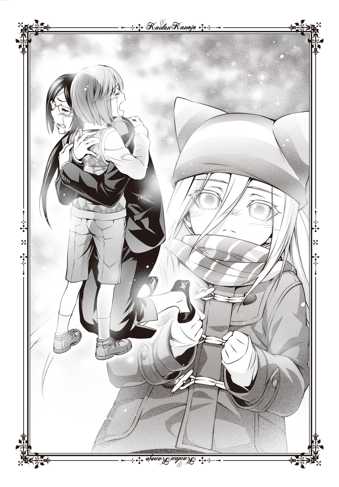
ごめんね、と橋本先生が何度も言った。母子の泣き声が混ざりあい、響き、やがてその声は一人分になる。橋本先生の声だけが残り、その腕の中にもう勉くんはいなかった。抱きあっていた時間は一分にも、何十分にも感じられた。
成仏したのだ。向かいあおうとしなかった橋本先生が迎えに行くことで、勉くんへの無念が晴れた。その場に膝をついたまま、橋本先生は勉くんの体に回していた腕をほどかない。振りかえることもなく、後ろから見てもわかるぐらい大きく深呼吸して言った。
背中を向けたまま、小さな声で。
「......ありがとう、化野さん。送っていくわね」
「うん......あ、でも大丈夫だよ。今日は、勉くんのそばに......」
「子どもが気づかうんじゃないの」
息を吐いて先生が立ちあがる。その目は潤んでいるけれど、しっかりとボクを見ていた。
ボクは座敷童子。永遠に子どもだ。
だから、甘えることにした。
ありがとう、と言ってボクと橋本先生は並んで歩きだす。ボクはすっかり暗くなってしまった空を見あげながら、胸の中でつぶやく。
勉くん、もう休んでいいからね。ばいばい。
誰かがボクの頭をなでてくれたような気がした。ボクはそれがボクを育ててくれたお婆さんの手なのか、水戸先生の手だったのか、それともパパやママのなでてくれた感触を思いだしただけなのか、灯や夢おばちゃんのものなのかも、わからなかった。隣を歩く橋本先生がなでてくれたのだろうか。
あるいは、勉くんだったのかもしれない。
ただ少しだけ、温かい気持ちになる。
ブランコのゆれる、きぃきぃという音が後ろで聞こえた気がした。
でもボクは振りかえらなかった。星を見ながら、中学校を出る。
達成感だったのか、悲哀なのか。ボクの胸には、何かがいっぱいに満ちていた。
ずいぶんと帰りが遅くなってしまった。橋本先生とは石段の前で別れた。「授業中には来ちゃダメよ」と笑ってくれたので、今度は授業が終わった後に行こうと思う。
先生の背中を見送って、ボクは神社へ戻る。石段をのぼる前に郵便受けを確認すると、封筒が一つ入っていた。特に頼まれていたわけじゃないけれど、灯や夢おばちゃんに郵便を渡すと喜ばれるだろうからそれを持って階段を上がる。
長い石段をのぼり終えると、境内には灯がいた。深草色の和服を着ており、中身のない左の袖を風にたなびかせていた。右手には携帯電話を持ち、誰かに電話をかけているようだ。しかしすぐ、ちっ、と舌打ちをして耳から外す。相手が出ないのか。
灯はボクに気づき、少し疲れたような笑みを見せた。
「おかえり、詠。遅かったね」
「うん、ちょっと」
冒険譚をここで話そうかと思ったのだけれど、それより早く灯が尋ねてきた。
「夢乃と槍牙くん、知らないかい？」
「パパとママ？ まだ帰ってきていないの？」
中学校に残っていたかは確認していないけれど、でもこんな時間まで学校に残っている二人でもないと思う。特にパパは最悪器官なので、できるだけ早く神社か家に帰るようにしている。うーん、と灯がうなりながら携帯電話に視線を向ける。
「帰ってきていないんだけど、電話にも出ない。どっちも電源を切っているか、圏外にいるみたいでね......まったく、今日は仕事が多いからあんまり心配かけないでもらいたいんだけどなあ......」
そういえば夢おばちゃんも忙しいからボクにおつかいを頼んだのだった。『殲』関連の依頼が舞いこんだということはちらと聞いたのだけれど、何か問題があったのだろうか。ほんのちょっとだけ、ざわりと嫌な感じがする。パパとママを探しに行こうかなと思ったところで、手の中にある封筒のことを思いだした。
「ねえ灯。これ、下の郵便受けに入っていた」
「ん？ ああ、悪いね。しかし郵便の配達にしちゃ遅......ん？」
携帯電話をしまい、ボクから封筒を受け取った灯はわかりやすく眉をひそめた。ボクもその封筒をじっと見る。確かに変だ。封筒には切手どころか、ここの住所も書いていない。まっさらなそれを郵便配達の人が運んでくれたとは思えなかった。
いや、後ろに一筆だけ文字が入っていた。差出人の名前だろう。灯がそれを見て。
「......っ！」
声にならない悲鳴をあげた。すぐさま歯で封筒を食い千切り、中にあった紙を器用に片手で広げる。境内にある外灯のおかげで、ボクの位置からでもそれは透けて見えた。四つ折りの紙に大きな字で書いてある。
『ただいま』
手紙にはただその一言、あるだけだった。それでも灯はひどくうろたえ、石段を下りようとし、その前に母屋へと向かう。夢おばちゃんの名前を叫びながら。
ボクにはこのとき、何が起きているのかわからなかった。
ただ、覚えているのは一つだけ――封筒の裏に記された人の名前らしきものだけだ。
煉獄天左衛門。
手紙の差出人は、そうあった。
昔、口裂け女という怪談が流行しました。
そのころあるところに、鹿島零子という名前の女性がいました。
彼女は子どもとご飯が大好きな明るい性格の短大生で、保育士を目指していました。
しかしある日、口裂け女に襲われる子どもを救おうとして、口を裂かれて殺されてしまいました。
それでも彼女は子どもを守りたい一心で、幽霊となってよみがえりました。
彼女の口は裂けており、それをマスクで隠しています。
手には彼女を殺した口裂け女から奪い取った銀色のハサミが輝いています。
彼女を殺した存在と同じ、口裂け女になってしまったのです。
しかし肩口までの茶色い髪をゆらし、口裂け女と同じ能力を受け継ぎながらも。
子どもを守る、いい口裂け女となったのです。
もし彼女に会ったら、怖がらないでください。
お菓子や食べ物をあげると喜びますから、持っていたらあげてください。
彼女は必ず、あなたを守ってくれるでしょう。
「――ごちそうさまでしたっ！」
箸を置くと店中からどよめきが響いた。半分は「よくたいらげたなあ、姉ちゃん！」という応援者のもので、もう半分は「うわあ、食ったよあいつ......」という、若干引いたものだった。でも構わない。私はお腹がいっぱいで嬉しいのだから。
『ジャンボラーメン！ 三十分以内に完食したらタダ！』
そんなチラシにつられて入ったラーメン屋さんだったが、なかなか美味しかった。ただキャベツはせめて茹でるぐらいして欲しかったけれど。もやしはあれでいい。そして具の多いのはわかったからスープと麵ももうちょっと欲しかった。バランスが悪い。
まあ満足できたから言わないけど。
歓声とドン引きの空気の中、アゴだけヒゲを生やしたちょいイケメン風の店員さんがやってきて丼をチェックする。私のマスクもじろじろと見て、はあ、と嘆息した。
「おめでとうございます！ ではこちらのお会計、タダにさせていただきます！」
お店の中は歓声のほうが大きくなった。ガッツポーズで拳をかかげて見せると、店の中にいたＯＬ風のお姉さんたちやニッカボッカの似合うおじさんたち、ラフな服装のお爺さんなんかが拍手してくれる。へへへ、と笑っていると服の裾を引っ張られた。
そちらに目を向ける。そこにいたのは成人式が済んでいないんじゃないかと思うぐらい幼い顔立ちの女性だった。二つおさげの髪型と、パーカーにジーンズという服装が余計に若く見せている。これでも二十三歳とのことだが、それで言ったら私なんて八歳なのだから外見と年齢なんてそもそも合致しないものなのだ。
そのいたいけな顔をしかめて、彼女は言った。
「零子さん、目立ちすぎです！ やめてください！」
「えー、いいじゃーん。っていうか一女ちゃんも一緒に参加しようよー」
「食べられませんよ、あんなバカみたいな量」
美味しいのに、と私はマスク越しに口元をなでる。そもそもどうしてマスクをしているのに食べられるのかは私自身、よくわかっていない。穴が開いているわけでもないし、でもちゃんと口の中に食べ物は入っている。ほほの肉が削げているから気をつけないとこぼれることもあるけれど、この八年間でそのぐらいは慣れていた。
私の横で呆れている童顔の彼女は御法川一女。霊能力者である。
私は夏、ある事件により『殲』という霊能力者集団によって保護された。口裂け女という怪異なのに殺されずに済んだのは色んな事情からだが、それでも野放しにされることはない。監視をつけた状態で人間の社会に組みこまれたわけである。
そして私の監視人が、この御法川一女こと一女ちゃんだ。
「っていうか、そろそろ仕事に移らないとまずいんですけど」
「あ、いっけない。もうそんな時間か」
私はラーメン屋の店主やお客さんたちに手を振りながら出ていく。気のいいおじさんたちが「また来いよー」と言ってくれているのが嬉しい。「私、きれい？」と尋ねると屈託なく「きれいきれい！」と笑ってくれるのも良かった。立てつけの悪い扉を開け、外へ出る。食べて温かくなった体が、ぐんと冷えた。早く車に入ろうとして急かす。
「一女ちゃーん、早く早くー」
「はいはい」
一女ちゃんは呆れた様子で運転席に回り、キーを取りだしてドアに差す。私と一女ちゃんが乗ってきたワンボックスタイプのライトバンには「みのりかわクリーニング」の文字がプリントされており、電話番号もある。しかしこの辺りの番号ではない。鷹夏市の隣にある麻河町のものだ。みのりかわクリーニングは町内唯一のクリーニング店である。
私と一女ちゃんはいま、その麻河町から遠く離れた墨祖市に来ていた。一女ちゃんに怪異がらみの仕事の依頼が来たからである。
みのりかわクリーニングは服のクリーニングをやっているお店であるが、裏では怪異関連の請負稼業もやっている。誰もいないのに家の二階から足音がするとか、こっくりさんをやって狐に憑かれたとか、神棚にボールをぶつけてから子どもの腹痛が治まらないとか、そういうトラブルを解決するお仕事だ。看板を出しているわけではないので知る人ぞ知るものではあるが、クリーニングのお客さんから広まってそこそこ依頼は多い。
一女ちゃんは『殲』の中ではあまり強くなく、位階と呼ばれるランクでも丙の中という、真ん中よりちょい下ぐらいの位置ではあるけれど、うちのお得意様の中ではなかなか評判がいいらしい。元々一女ちゃんのお母さんである了子さんがそういうのを得意としていたのだけれど、霊能力と家業を引き継いだ一女ちゃんにも相応の期待が寄せられている。
ということで、依頼があったのだった。なんでもここ墨祖市にてここ数か月ほど奇妙な交通事故が多発しているらしい。
その調査に来た私たちだったが、市に入ったのがすでに昼頃だ。お腹が空いたのでラーメンを目一杯食べたのだが、一女ちゃんは食べていない。
「一女ちゃんも食べないともたないよ？ その辺でパンでも買う？」
「ダイエット中です」
にべもない返事だ。太ってないじゃん、とかいう論争はあんまり意味がないので、私は口を閉ざす。車が発進し、目的地へと向かう。カーナビが場所を知らせていた。
墨祖峠。市の名前の由来にもなったこの十キロに及ぶ九十九折の峠道には怪異が出る。
その名を「ターボばばあ」というらしい。
家族でドライブをしていると、助手席のお母さんがいきなり言った。
「あなた、スピード出しすぎよ」
私と妹は後部座席から運転席のメーターを見る。
確かにハンドルをにぎるお父さんは、すごいスピードを出していた。
けれどもお父さんはお母さんの言葉を聞かず、ぐんぐんとスピードを上げていく。
妹が「怖い」と叫ぶのに、お父さんはちっとも聞かずに怖い顔をしていた。
お母さんが怒鳴るようなきんきん声を出してようやく、お父さんは叫んだ。
「あいつに追いつかれるんだ！」
あいつ？ と思って私は後ろの窓から外をのぞいた。
なんと和服を着たお婆さんが、髪の毛を振り乱して追いかけてくるのだ。
その形相が鬼みたいで、一緒にのぞいた妹は怖がって私にしがみついてきた。
私も、服をはだけさせて追ってくるお婆さんが徐々に近づいてくるのを見て怖くなる。
お父さんがさらにスピードを上げていき、重圧が体にかかっていくのも息苦しい。
「あなた、もうやめて！」
お母さんが叫んでお父さんの肩をつかんだ。
その瞬間、お父さんもはっとしたようで急ブレーキを踏む。
私も窓の外を見る余裕もなくて、妹と抱きあって耐えた。
車が完全に止まったのを悟って、私は窓の外を見た。
もうあのお婆さんはおらず、車もなんともない。
ただ、崖っぷちぎりぎりのところで車は止まっていたのでひやりとした。
ブレーキがもう少し遅かったら、落ちていたかもしれない。
お父さんに後で話を聞いたら、あのお婆さんに追いつかれることが怖くてとにかくスピードを出してしまったのだという。
頭が混乱していたのか、事故を起こすことなど気にならなくなっていたそうだ。
その道は二度と通らなかったが、そのうち道そのものが封鎖されるようになった。
設置されたフェンスの前には、いつもたくさんの花束や飲み物が供えられていた。
たぶん、事故に遭った人へのものだろう。
いつしかあのお婆さんの亡霊は「ターボばばあ」と呼ばれるようになった。
いまもフェンスの向こうに、たまに姿を現すのだという。
もしも見たら、すぐに目をそらしたほうがいい。
目が合うと、車より速く追いかけてくるそうだ。
追いつかれると死ぬという。
「封鎖まではされていないですけれど、お供えの数はやっぱり多いですね」
バンをチェーン着脱所に置いて道路の様子を一女ちゃんと見に来た。下地の銀色がむきだしになっているガードレールは歪み、その下にジュースや花束が置いてある。一人二人の弔問があったわけではないのは、その物量でわかる。
ここは墨祖峠の中腹だった。道路の片側に山肌がそびえ、場所によってはフェンスで補強されている。反対側は崖だ。スピードを出しすぎた車がガードレールを越えてはるか下のほうへ落ちたという話は聞いている。
峠道は決して幅の狭い道でもないし、速度をそんなに出さなければそうそう事故になるとも思えない。『殲』に戸籍をつくってもらって教習所に通い、運転免許証を手にしたので私にもそれぐらいはわかる。
「事故の様子とか聞けるといいんだけど」
「たぶん私たちが尋ねたところで、依頼人に聞いてきた話と大差ないと思いますよ」
依頼人――いつもみのりかわクリーニングを利用してくれる尾形さんというお爺さんなのだけれど、最近、息子夫婦と孫を交通事故で失ったのだという。その場所がここ、墨祖峠であり、他にも交通事故が多発しているという話だ。しかし警察の調査では何も怪しいところはなかったという。スピードを出しすぎてガードレールにぶつかり、そのまま崖の下へと落ちてしまったのだと諭されただけらしい。
――そんな危ねえ運転する子じゃなかった。
尾形さんはそう言って店先で泣いていた。私も一女ちゃんも何も言えないぐらい、つらい話だ。尾形さんにかける言葉もなく黙っていると、彼は言った。
――ターボばばあ、って化け物が出没するんだと。噂話みてえなもんだけど、そいつがやったんじゃねえかって地元で騒がれてんのは聞いたんだ。
「絶対、許さない。必ず怪異を倒してやる」
「......一女ちゃんにしちゃ、過激な発言だね」
「頼まれたんですもん。こんな凶悪な怪異を相手にするの初めてですし」
凶悪な怪異――その意見には同感だ。
スピードを出していればどんな場所だって事故の起こる場所にはなるし、カーブが多いのだからハンドル操作を誤れば危険だ。警察の技術では事故としてしか扱えなかっただろう。しかし私たち怪異やそれにまつわる者の常識で言えば、他の可能性は十分ある。ここには、何かいる。
「とりあえず、事故の状況をなぞってみるか」
尾形さんから聞いた情報では、もう少し遅い時間帯に走っているときに事故が発生したらしい。ライトバンでこの辺りをドライブしてみるのはアリだろう。もしかしたらターボばばあが追いかけてくるかもしれない。そう思って一女ちゃんを見た。
彼女は黙禱していた。花束や缶ジュースの中に、祈りをささげるように。
「......こうだっけ」
私も見様見真似で黙禱をする。尾形さんの泣き顔が、まぶたの裏に浮かんだ。
「ターボばばあらしい影はないですね」
「一女ちゃん、運転しながらだし、そもそもそんなに霊感強くないじゃん。大丈夫？」
「う......」
地図で見るより実際に車で通るとカーブはきつい。ずっと左右入れ違いに遠心力で引っ張られてゆさぶられる。気持ちが悪いとは言わないが、ちょっと頭がくらくらしてきた。気晴らしに一女ちゃんにツッコミを入れると、うろたえた彼女はすねた。
「じゃ、じゃあ零子さんはどうなんですか！」
「いや、見てないけど......」
「じゃあ一緒じゃないですか！」
「カリカリしないでよ。相棒じゃん、仲良くやろうよ」
「誰が相棒ですか誰が！」
「え？ 私と一女ちゃん」
「違います！ 私はただの監視人であって、相棒じゃありません」
寂しいことを言われた。とはいえ、まあ監視のために一緒にいるのだからそう言われてしまえばそれまでだ。ちょっと納得いかないけれど。少しすねた気持ちで窓の外へと視線を向ける。
冬晴れの青い空に日差しがまぶしい。怪異そのものではあっても怪異のスペシャリストではないので偏見交じりでものを言うが、こんな時間に怪異と遭遇するものだろうか。
そもそも怪異の噂が立つのは「見間違い」によるものが多い。ターボばばあ以外にもダッシュばばあ、ホッピングばばあなどの「後ろから高速で迫ってくるもの」の正体は、実は車の後ろに引っかかってしまったビニール袋だとか、ライトが壊れている後続車だったりする。昼間ならそうは見えないものも、闇はたやすく怖いものに変えてしまう。
その恐怖心が怪異を生んでも、霊感がなければ奴らは見えない。いないのと同じになってしまう、希薄な存在なのだ。
それゆえ実際に怪異が人間を襲うということはあまりない。怪異が霊感のある人間を相手に「怖いものに見間違いをさせる」ことがあるぐらいだ。奴らは幻覚とほとんど変わらない。今回ターボばばあに殺された人たちも、霊感があったから怪異を見てしまい、それに驚くなり怖がるなりしてハンドル操作を誤ったと見られる。普通の怪異が車を引っ張って無理やり崖下へと転落させたなどということは、不可能なのだ。
だから昼間より、夜のほうが怪異の出現率は高いと私は思っている。「見間違い」を悪用するのなら、昼間にわざわざ怖がらせには現れないだろう。私は最悪器官の力によって人間同然の存在となっているから、昼間でもあちこちに出現するけど。
峠道の途中にある、自動販売機の並ぶ休憩スペースに車を停車し、青い顔の一女ちゃんが額を押さえる。
「......カーブが多くて吐き気がしてきた」
「顔、真っ青だよ」
「なんで零子さん、平気なんですか......？」
「ご飯食べたから。ダイエットとか言って空きっ腹で運転するからだよ」
別に九十九折に臨むからお昼を食べたわけではないが、私の言葉に対して一女ちゃんは後悔をたっぷり含んだため息をついた。私はお財布の中にいくらあるか思いだしながら、一女ちゃんに言う。
「峠に入る前、ふもとにコンビニがあったからお弁当でも買ってくるよ。あと酔い止めもあれば。ジュース、いまそこの自動販売機で買ってくるから何がいい？」
「......お茶。冷たいやつ」
気だるげな様子だ。うんうん、とうなずいて私は手のひらを差しだした。
「......なんです、零子さん」
「お金。貸して」
財布の中には十二円しかないのをやっと思いだした。
一女ちゃんは面倒だったようで財布ごと貸してくれた。自動販売機でウーロン茶を、コンビニで後から飲んでも効く酔い止めと牛カルビ弁当とペペロンチーノスパゲッティとコブサラダとたぬきそばとチーズバーガーとシュガードーナツと牛乳プリンとカニチャーハンとロコモコとおにぎり三つとサンドウィッチ二つとホットドッグと肉まんとあんまんとピザまんとおでん数種類を買って車に戻る。ふもとまでの往復は距離があるけれど、口裂け女の脚力をもってすればたいしたことはない。私と大量の荷物を見た一女ちゃんがぼそりと「死ねばいいのに」とつぶやいていたので、早く酔い止めを飲ませてあげた。悪態をつくほどつらいらしい。
空の色はいつしか青色から赤色になっていて、もうじき深い紺色に沈むことは容易に知れた。私はコンビニの店員から聞いてきた話を語る。
「あそこで事故が多発し始めたのはここ三か月ほどの間。その前からそこそこ事故はあったけれど、半年に一件あるかないかぐらいだったんだって」
「......へえ」
具合が悪いのだから無理に相槌を打たなくていいのだけれど、一女ちゃんは弱々しい口調でそう言いながらたぬきそばをちょっとずつ口に運ぶ。かつおだしのいい匂いが鼻腔を抜けていく。食べたい。二つ買ってくれば良かった。
「その三か月前の事故が起こった直後ぐらいから、誰ともなくターボばばあの話を口々に噂しはじめた。理由はコンビニ店員さんもわからないっていうことだけれど、土台や兆候もないのにそんな話が出回ること自体、おかしいよね？ ひょっとして、謎の組織がそういう噂を広めたとか......」
「そんな陰謀論、マンガの読みすぎです......ネットは？ 最近じゃあよくあることですよ」
ネットか。確かにそれはある。昨今の怪談の隆盛に一役買っているツールだし、私もスマートフォンを購入してからよく利用している。パソコンはハサミを持っていると使いづらいのであんまりやらない。
しかし逆に言えば、そんな場所はたくさんあるのに、どうして局所的にそんな噂が出たのかという疑問がある。
同じ考えに至ったのだろう。青い顔のまま一女ちゃんはふるふると首を横に振った。
「違いますね。インターネットで地名を出したことが噂の原因なら、もっとわかりやすい問題が発生しますもんね。たぶん、冷やかしも増えるでしょうしね」
「あ、いまの喋り方、小百合ちゃんっぽい」
「小百合ちゃんって誰......？」
ずずず、と一女ちゃんはおそばの汁をすする。いいな。美味しそうだな。
「墨祖峠に怪異の出る噂なんてありませんでしたし......どうしていまごろターボばばあなんて出たんでしょうか......」
「本物の怪異の目撃談が増えた、とか......？」
「だとしても、誰かが噂しなければ広まりませんよ。誰かの存在があるはずです」
「うーん......わからん！ 保留で」
あんまり頭を使っても成果を得られそうにない。そう判断すると、一女ちゃんが私にそばの汁がたっぷり入った器を向けてきた。
「もういいや、あげます。十分したら起こしてください。酔い止めも効いてきた気がするので、一回眠ってリセットします」
やったぁ、と思って汁を飲み干す。眠るということは、他のご飯も要らないのだろう。私はおでんの汁を片手にあんまんと肉まんとピザまんから手をつける。おでんの汁を飲み干して牛カルビ弁当を開いたときには、もう一女ちゃんの寝息が聞こえた。
起こすのは十五分後にしてあげよう。それからはターボばばあ探索だ。
酔い止めが効いてすっかり調子の良くなった一女ちゃんが運転を再開したのは、私が牛乳プリンを食べるべきか後に残しておくべきか悩みはじめたころだ。
「っていうかあのアホみたいな量、全部食べたんですか」
「うん。あ、ごめん。どれか食べたかった？」
「......ダイエット中です」
呆れたような言い方で、一女ちゃんは買ったばかりのオレンジジュースを飲みながらハンドルを動かす。すでに道は暗く、ライトをつけないとならない時間帯だった。車通りはない。コンビニの店員の話では、夜はめっきり通行する人が減ったという。普段からこの峠道を利用していた人たちも、少し遠くなるが迂回路を利用しているらしいとのことだ。
周囲に車がないので、必然的に私は車の後ろを見る。ターボばばあに狙われる自動車は周囲にはこのライトバンだけだ。
「見落としがないようにしてくださいね。特に私は後ろとか横とか、そんなにしっかりとは見られないので」
「りょうかーい」
とは言っても、ただただ景色が流れていくだけだ。全長で十キロもある峠道をすいすい運転していく一女ちゃんに、もう酔う様子はない。
そういえば、と思って喋る。というか喋っていないと落ちつかない。
「ねえねえ、一女ちゃん」
「なんです？ 何かいましたか？」
「いや、もしターボばばあ見つけたときにはどうやって戦うつもり？ お札、投げられないでしょ、さすがに」
御法川一女が怪異に対しておこなう戦い方は、お札だ。札師とかいうお札をつくってくれる専門の霊能力者（札師って言ってもギャンブル関係の札師じゃないからね）に頼んで常に百枚ぐらい持ち歩いているのだが、それに霊力をこめて用いる。投げつけたり、罠のように設置したりすることで怪異に当てて滅ぼすのだ。とはいえ強力な武器というわけではないようで、強い怪異では一瞬当たっただけでは足りないらしい。実際に私も触れてしまったことがあるけれど、消し飛んだりはしなかった。
まあ、それは私が最悪器官の力でこの世に出ている特殊な怪異だからだろうけれど。
しかし一女ちゃんはそのお札を、どう利用するつもりなのだろうか。
「ああ、それなら大丈夫ですよ。バックドアの外側にお札をしこたま貼りつけてあるので、ターボばばあが真後ろに出てきたら急停止してぶつけるつもりですから」
「......いつからそんな細工を」
まるで車を巨大なハンマー扱いだ。しかし嫌いな作戦ではない。
ただ一つ、文句を言うのならば。
「でもそれさ、私が車の後ろにぶつかったら危ないんじゃない？」
私とて口裂け女という怪異だ。消し飛びはしないだろうが、それでもダメージは負う。人間で言えばスタンガンを食らったようなものだ。それでも運が悪ければ死ぬ。
先んじて聞いておかないと、不意を食らってしまう可能性はあった。
「ああ、そのときはそのときで、まあいいかなって思って」
「えー、ひどーい」
非難の意味をこめて一女ちゃんの肩をつかんでゆする。「やめてください、運転中！」と怒鳴られたのでパーカーの裾をいじってやるだけにとどめた。すねた態度を取っても、一女ちゃんは冷たい声音で応じてくる。
「うざったいんでやめてください。それより後ろ、見ていてください」
「ふぇーい」
だらけた返事を返して後ろを見た。いつの間にか後続車の白いライトが二つ近づいてくる。やけに急いだ車だな、と思って気づく。
運転手の四十歳ぐらいのおじさんが、引きつった顔で何度も後ろに顔を向けているのだ。その度にハンドル操作が微妙にずれ、ふらふらとしている。バックミラーで確認したのか、眉根を寄せた一女ちゃんが低い声でうなる。
「何あれ、暴走族？ あおられても追い越し禁止なんだけど」
「一女ちゃん、あの車おかしい。後ろに何かいる」
まさか、と一女ちゃんが叫ぶより早く私はドアのロックを開く。
「え、零子さん？ どうするんですか？」
「外に出る」
「は？ ちょ、ちょっと！」
良い子もそうでなくても、みんなは真似しちゃダメなことをする。走行中のライトバンの助手席を開け、私は車の屋根に飛び乗った。真後ろにある青い車はなおもふらふらと、そして私たちのライトバンにぶつかりそうな勢いで迫ってくる。
その後ろに、いた。
短距離走の選手みたいに素早い動きで走る老婆の姿だ。和服をはためかせ、開いた裾からのぞく骨の浮いた足をめまぐるしい速度で動かしている。目玉が飛びでそうなほど目を開き、ところどころ抜けた歯をむきだしにする姿はなるほど、悪鬼のようだ。
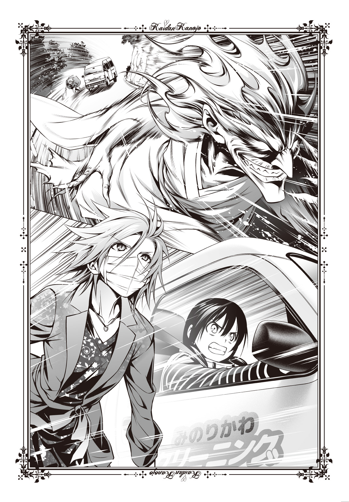
私だって車の外なのだからひどく風の影響を受け、冬仕様の赤いコートがはためき、スカートがめくれる。早く行動しなくては吹き飛ばされそうだった。後ろの車のおじさんが下着を見ませんようにと思ってライトバンからジャンプする。
上手いこと青い車の屋根に着地し、転げ落ちないように気をつけながら後部に移動した。ターボばばあの顔が余計近くなり、相手の口から飛び散る涎さえ見える。
「止まって！ 止まらないと容赦しないよ！」
ハサミをかかげて見せる。しかし視線さえこちらに向けることなく、ターボばばあの勢いは止まらない。言葉が通じるような相手じゃないらしい。
それならばと、私はターボばばあ目がけて跳んだ。
まずキックだ。口裂け女の脚力であれば、決して弱い攻撃ではない。それでターボばばあの勢いを止めてから、ハサミでとどめを刺す。倒した後は一女ちゃんを待って、お札で滅してもらうのが最適か。
相手が怪異とわかっているので遠慮はない。私は渾身の一撃を叩きこんだ。
そして、それはすり抜ける。
「――はれ？」
あー、いや、ええっと、私っていま人間同然だけど基本的には怪異だよね？ だから、怪異に触れることはできるはずなんだけれど――いや、違う。
高速でかわされたのか。
思い至った瞬間、アスファルトが迫ってきていた。私は無理やり体をひねってパンプスの裏を削るように地面を踏ん張り、ブレーキのつもりでハサミの刃もアスファルトに押しつけた。ぎぎぎぎぎぎ、という激しい音と火花が散るも、なんとかパンプスの底に穴が開く前に止まることができる。しかしターボばばあと、追いかけられていたおじさんの車、そして一女ちゃんの運転するライトバンは遠ざかった。
「......あの婆さん、素早いねえ」
すぐ走りだす。口裂け女は百メートルを三秒で駆けるそうで、それは時速に換算すると百二十キロになるらしい。まだ追いつける。全力で追いかけながら、頭の中で考えた。
迂闊に空中へと飛びだすのはよろしくなさそうだ。そもそも跳び蹴りみたいな攻撃、かわされる可能性が高い。考えなしだったなと反省しつつ、ハサミの刃を開いて閉じる。しゃきん、と小気味のいい音でテンションを上げ、次は仕留めるぞと気持ちを改めた。
ターボばばあに追いつく前に、みのりかわクリーニングのライトバンに追いついた。運転席に回り、窓を開けてもらって一女ちゃんと話す。
「さっきの車は？」
「一度反対車線に出て、先に行かせました。私も見ましたよ、ターボばばあ。ちゃんと仕留めてほしいんですけど」
跳び蹴りの失敗を咎められた。明るい方向に話を進めて誤魔化そうとする。
「あ、追い越し禁止なのに反対車線に出たの？ いーけないんだー、いけないんだー」
「うっさい！」
刺々しく言われたので茶化すのはやめる。まあ、やむを得ない事態だったということで細かいことを言うのはやめよう。法律的にはやっちゃいけないことだけど。
「ひょっとするとひょっとして、この車の前方向にはお札、ついていない？」
「ついていないです。ターボばばあに追いかけられるならともかく、反対に追いかける羽目になるとは思わなかったですし」
まあ、そうだよね。一旦車を止めてお札で武装をしたほうがいいのか、それともこのまま行くのか。などと考えている間に、一女ちゃんはアクセルを踏みこんだ。このまま行くらしい。気をつけてね、と言ってから私は全力疾走して一女ちゃんを抜く。さすがに並走まではできないようで、ライトバンは後方に置きさった。
一分もかからない。ターボばばあに追いかけられるあの青い車に追いつく。体感ではさっきよりずっと速い。あのままでは車がコントロール不能を起こしてしまう。
悪鬼のごときターボばばあにハサミの刃をないで攻撃を加えようとして、かわされる。相手もスピードに長けた相手だ、そうそう簡単にはとらえられない。不意を突くなり、小手先の技が要る。
キキイィィ、という甲高い音にはっとした。カーブで無茶をしたのだろう。ターボばばあが追いかけていた青い車が傾き、片輪走行になっている。夜風やエンジン音、タイヤのアスファルトの摩擦音などでかき消されつつも、ドライバーのおじさんの悲鳴が聞こえた。
「こン――のっ！」
ターボばばあは置いておく。私はようやくちょっとだけ減速した青い車にすがりつき、その車体を押しこんで無理やり両輪走行に戻す。それでもコントロールは戻らず、変な方向に車は滑る。スピードが出すぎているのだ。減速させ、車の向きも少し調整するしかない。これだけスピードの出ている車を完全に止めるのはさすがに無理だ。
「浮かせて......少しでも向きを変えれば！」
私はそのドアの取っ手に走りながら指をかける。ロックがかかっていてくれよと願い、体中の力をみなぎらせて無理やり車を持ちあげた。
「ぐっ......！」
重い。いくら口裂け女の力が普通の人間より強いとは言っても、さすがに普通乗用車は重量が違った。アスファルトから浮かせられた時間など、数秒程度だろう。走ってきた勢いもあったし、慣性でまだまだ速度は出ている。地面に置いた瞬間、さすがに私とて足を止めてしまい、青い車は風を切って突っ走っていった。
それでもハンドリングを取り戻せたようで、そのまま車は徐々に減速をしながらカーブを曲がっていく。いつの間にかふもとまで来ていたようで、そのまま車は平地へと入っていった。後ろを追走する影などない。
振りかえる。獲物を逃したターボばばあが、悔しげな顔をして、すうう、と消えた。
峠の中では神出鬼没か。余計に不意を突くしか手がない。捕まえたら両手できつく抱きしめておくぐらいしなくては、逃げられるだろう。
にしても、やっぱり全力疾走も長いことやっていると疲れる。
「零子さん！」
ガードレールにもたれて息を整えている間に、一女ちゃんの運転するライトバンが来た。運転席から顔を出した一女ちゃんは、鬼気迫る表情で眉にしわを寄せる。
「ターボばばあは？」
「ごめん、逃げられた」
心底から憤ったらしく、一女ちゃんはハンドルをぶっ叩いて舌打ちをする。可愛い顔が台無しだよー、とか言いたかったけれど、それより早く一女ちゃんがうなった。
「......ちくしょう」
怪異を倒せなかったのが悔しいらしい。お昼に黙禱したときの、切実な表情を思いだした。
それからじろりと、一女ちゃんの目が私をねめつけた。
「どうして攻撃してくれなかったんですか。零子さん、追いついていましたよね？」
「や、えーと」
青い車のおじさんのほうを優先して助けました、とは言いにくい。なんとなく、おじさんのせいで怪異を逃したと認めてしまう気がしたのかもしれない。口ごもっていると、一女ちゃんが強く私を咎めた。
「零子さんは何をしに来たんですか！ 零子さんは口裂け女で、人間なんかとは段違いの身体能力があって、だから色んなことができるのに！」
「ちょ、ちょい待ってって、一女ちゃん」
いらだちが最高潮に達してしまったのか、彼女はきつめにものを言った。
「どうせ私の位階が丙の中だからって、バカにして！ 私が頼まれた依頼なのに！」
ああ、そうか、と気づいてしまう。一女ちゃんはこの事件を頼まれたことに対して、誇りを持っているんだ。だから責任感が強くて、万全に動けなかった私に当たり散らしている。決して彼女は悪人じゃないし、頭も悪くない。だから冷静になれば言いがかりであることもわかるはずだ。でも、いまは。
悔しさで胸がいっぱいになったいまだけは、私に当たりたくなるのだ。
「ねえ、一女ちゃん。私はバカになんてしていないよ」
「したもん！ さっき霊感が強くないとか言っていたもん！」
......あ、言ったかも。
軽口のつもりだった。でも確かに私はそのようなことを言ってしまったし、きっとそれはいまになっていらだちを加速させている要因だ。失敗だったな、と後悔してももう遅い。怒りに任せて、一女ちゃんはきつい声でたたみかけた。
「私の依頼なのに、監視対象のくせに相棒って顔をしてついてきちゃうし、ジャンボラーメン食べちゃうし、私のお金で六千五百円もコンビニで買いこんでくるし、ターボばばあを逃がしちゃうし、もう零子さんはいい！」
再び車が動きだす。無関係なこともいっぱい言われた気がするけれど、私はこれ以上彼女がヒートアップするのが嫌で脇に避けた。ライトバンが方向転換すると、急加速して闇の中に消える。私はため息をつき、とりあえず間を置こうと考えた。
私はこういう性格だ。生真面目な一女ちゃんとは合わないのかもしれない。
でも、私は一女ちゃんが好きだ。不器用でまっすぐで責任感があって正義感の強い彼女のことはお気に入りだった。ちょっとだけ、かつて私を助けてくれた男の子に似ている。
だから、一緒に怪異を倒したかった。相棒でいたかった。
「......五分経ったら、追いかけよう」
一女ちゃんがクールダウンするにはそれぐらいの時間が必要だろう。その間に事故に遭わないでくれと思いながら、私はすぐそばの山肌に背中を預けて夜空を見た。星はいくらかまたたいてはいたけれど、はっきりとは見えない。暗い夜だった。
結局五分も待てずに、私は動くことにした。じっとしているのは苦手だ。追いかけるよりもまず電話で話をしたほうがいいかなと思い、私は一女ちゃんに電話をかける。
いくらコールしても出ないが、あきらめずに百回ぐらいコールしていると、いらだった声で一女ちゃんが出た。
『うっさい！』
第一声からクールダウンしている様子はなかった。
『どれだけ鳴らせば気が済むんですか！ いま忙しいんです！』
「いや、どれだけって言われても......あ、ちゃんとイヤホンを使っているよね？」
教習所で習ったが、運転中は携帯電話の使用は禁止だ。なので私と一女ちゃんは運転中、ハンズフリーのイヤホンを使う。『使っています』と一女ちゃんは機嫌悪く言った。
「さっきはごめんって。悪気はなかったんだよ」
『それはいいんで、切りますよ！』
「忙しいって、そういやどうしたの？ おトイレ？」
コンビニにでも急いでいるのかな、と思ったが、答えは違った。
『ターボばばあが後ろにいるんです！』
「......え？」
一瞬思考が停止する。しかしすぐにそれも復活し、私もハンズフリーのイヤホンに切り替えて走りだす。峠の中なら神出鬼没なのだろうとは予測していたものの、まさかいまこの瞬間にとり憑かれているとは思わなかった。
だが前向きに考えれば、これからどこに出没するかわからないターボばばあを探す、という手間がないのだ。私は峠道を突っ走りながら、一女ちゃんに指示を出す。「零子さんはいい」などと言われたが、引き下がるような性格を私はしていなかった。
「いまから追いつくから、あんまりスピード出さないようにね。ぶつけて除霊できるならしてもいいけれど、そいつかわすのも速いから気をつけて」
『どうしてスピードを下げなきゃいけないんですか？』
「へ？ いや、どうしてって......」
電話の向こうの声が少しおかしい気がした。一女ちゃんが普通のことのように言う。
『スピードを出さなきゃいけないんです。スピードを出さなきゃ。スピードを出さなきゃ。スピードを、スピードを、スピード、速く、速く、速く、速く、速く速く速く速く』
「ちょっと、一女ちゃん？」
ぶつぶつと繰りかえすその声に嫌なものを感じて、私は急ぐ。追いつかなくてはならない。一女ちゃんはおそらく、敵の術中にはまっている。ターボばばあに憑かれると「逃げなくては」という気持ちだけでなく「スピードを出さないと」という強迫観念に駆られるようだ。そういえば怪談の中でも、ドライバーが我を失っているような描写があった。
「......精神に干渉するタイプかい！」
直接触れてこなくても、そういうことのできる怪異はいる。人間が恐怖する要素、想像できる能力であればどんなものであろうとあり得るのだ。強迫観念すらも武器にしてしまう怪異は、かなり厄介である。特に実直な性格の一女ちゃんには効くだろう。イヤホンの向こうからはなおもぶつぶつと「速く速く」と自分を追い詰めている様子がうかがえる。
ぐんぐんと冷たい夜の風を切り開いて走っていくと、ようやくカーブを一つはさんだところにライトバンの姿が見えた。時速百キロは超えているだろう。その後ろに白髪の老婆の姿も確認できた。数秒前からイヤホンの向こうにいる一女ちゃんの声は聞こえてこない。というか、通話も切れているようだ。
「間にあって......っ！」
駆ける。しかし向こうの速度も相当だ。一分二分で追いつくことができないほど加速している。いっそ崖を跳び越えるというのはどうか。多少のショートカットはできるかもしれない。その代わり、着地や跳ぶ力を間違えれば崖下へ真っ逆さまだ。しくじってはならない。
覚悟を決めてから、と思った矢先だった。
ぱぁんっ！ という激しい銃声のような音が、夜の峠に響いた。
「......パンクした！」
ライトバンは不意にがたがたとゆれだした。タイヤのどれかがパンクし、コントロールを失ったのだ。減速はしてくれたが、喜んでいられる状態ではない。単純な直線の道ならばまだ安全なところで止まることはできたかもしれないが、ここはカーブが多く、しかもライトバンは法定速度を破った速度を出しているのだ。車はそのままスピンしながらアスファルトを削り――
その瞬間、私は跳んだ。
着地の計算だの覚悟だのは考えから飛ばし、口裂け女の脚力を全力で行使したのだ。ガードレールを越えて崖の上を跳び、重力と慣性に従ってゆるやかに降下する。
ばしんっ、という音と衝撃を足裏に感じながら、暗くて見えにくい道路へと着地した。なんとかスピンするライトバンの前に出てきた形だ。その軌道をさえぎり、私は両手でライトバンを迎えた。右手はルーフ部に、左手はドアに押し当てた瞬間、弾かれそうなほどの衝撃に襲われる。なんとかこらえ、私は力ずくで車を止めようとした。
踏ん張ったパンプスがアスファルトを削る感触があり、足の裏が燃えるように熱くなる。車の重みが腕や肩や頭や背骨や、とにかく体全体にかかるも、力は絶対にゆるめなかった。足も腹筋も背筋も、何もかもを総動員してライトバンを止める。
「っしゃあああ！」
気合いを入れた途端、右側のパンプスがブレーキに耐えきれずに吹っ飛び、私のかかとが直接アスファルトで削れる。痛い。血が出た感じがわかる。たまらずバランスを崩し、がこんっ、という音を立てて車が跳ねる。スピンの勢いはなおも止まらず、車が横転した。
「やっば！」
痛む右足を無理やり地面に叩きつけ、車を持ちあげる。どこか飛んでいくことがないようにと、左手のひらで車体をなでて扉の取っ手に指を引っかけた。一女ちゃんならロックはかけているだろう。私はそのくぼみに指を引っかけて力をこめる。右手のハサミでルーフ部分を突き破り、さらに強く固定して車が飛んでいくことだけは避けた。
しかし体勢が崩れ、車の重みに耐えきれず私は尻餅をついた。ライトバンとアスファルトに挟まれ、そのまま地面を滑っていく。コートを巻きこんでお尻や背中ごと地面に押しつけてブレーキをかけた。コートがアスファルトにこすれて熱い。摩擦で肌に火傷を負い、皮膚が破れる。私はこらえた。
それでも重みに耐えかね、私は体だけでなく頭部まで自動車とアスファルトにサンドイッチされて少し地面を削る。たまらず顔をそむけるも、今度はこめかみの辺りが裂けて血が噴きでた。まだ方向感覚がしっかりしているうちに、私は車がガードレールを突き破って崖下に落ちることを避けようと反対方向へと車を投げた。姿勢が悪いので数メートルほどしか飛ばないだろうが、それでも他に手はない。ずるりとハサミの刃が抜けた感触がし、一気に体が軽くなる。
「――あ」
それが間一髪のタイミングだったとわかった。私が車を道路へ投げた瞬間、私の体がふっと浮いたのだ。浮遊感の正体は、私の体が崖に向かって落ちていくからだとようやく気づく。どうやらガードレールの下をすり抜け、私は道路から飛びだしてしまったようだ。地面ははるか下だった。いくらなんでもこれはただで済まないだろう。
ライトバンから離れてようやく開けた視界の中で、ひしゃげたガードレールとライトバンが地面を大きく跳ねた光景が見える。そして私の下にはごつごつでこぼことした断崖絶壁が遠く下まで伸びていた。このまま何もしなければ、私は墜落死するだろう。
「う、おらあ！」
右手に持ったハサミをその崖に突き刺す。ほとんど垂直と言える角度の斜面に易々と突き刺さったハサミは、なんとか私の落下を防いでくれた。ハサミが頑丈で、地盤がさほどゆるくないことが幸いしたのだ。体全体が摩擦や筋肉の断裂、裂傷で痛いやら熱いやらわからない状態だったが、私はなんとか左手を伸ばす。無理やり土に指をめりこませ、足を踏んばって力ずくで登る。やがてガードレールの支柱に届き、私は自分の体を崖の上へ持ちあげた。
ガードレールの下をはいずるようにアスファルトの地面へ戻る。放り投げたライトバンはちょうどいい着地をしたようで、タイヤを下にしたまま地面のど真ん中に鎮座していた。一女ちゃんが何かやったのか、それとも騒ぎの中でいかれたのかエンジンは止まっているようだ。危機は脱した。ふらふらの頭とずきずきする体で、なんとか立ちあがる。
その体に、ぶつかってくる白い影があった。
「な――お前！」
ターボばばあだ。歯抜けの口から涎をまき散らしながら、その細い体のどこにあるのかわからないほどの怪力で私を崖っぷちへと押してくる。たまらずひっくりかえりそうになるところを、無理やり歯を食いしばってこらえた。
崖下へと落とそうとするターボばばあの体に抱きつき、私は崖っぷちぎりぎりで攻防を重ねる。なんとか腕をからめ、怪異を羽交い絞めにした。
『ぐぎぇええええええ！』
ターボばばあは、けだものじみた気持ちの悪い声を吐きながら暴れる。だがどれだけ暴れようと、私は骨と皮ばかりの細身を壊さんばかりに強く抱きしめて絶対に放さない。腕は痛むし、力を使い果たしたばかりでほとんど絞りだしているような有様だったが、無理やり根性でとらえ続けた。
たんのからんだような酷いがらがら声が、私に問いかける。
『何故......何故だあぁぁぁ......』
「喋った！ ターボばばあ、喋った！」
びっくりして力がゆるんだものの、一瞬のことだ。すぐに全力で抱き伏せた。
『お前も怪異だろうが！ どうして、何故人間の味方をする！ ワシの邪魔を何故するのだ！ 死ね！ 死ねぇぇぇぇ！ 死なぬなら手伝えぇ！』
ターボばばあは意外なことに喋り、私を振りほどかんと体をゆする。私は答えることもないまま、懸命に抵抗した。
『人を襲い、恐れられ、そうして存在を強めるのが我らの生き様であろうが！ どうしてお前は人間のように濃い存在でいられて、人のために我らと戦う！ 何故だ！』
ずり、ずり、と崖に向かって移動しようとするターボばばあに対抗し、私は膝や足に力をこめた。体勢さえ整えてしまえば、こいつは力ずくで封じられる。後は一女ちゃんのお札の力を借りれば怪異を滅することができる。
逆転だ。私を崖下に落とそうとしたのが失敗だったな、と胸の中でほくそ笑む。王手詰みの状態になってもなお、ターボばばあはじたばたともがいた。
『怪異のくせに！ 怪異のくせにぃ！』
「私、きれ......いや、私はさ」
なにも答えたかったわけじゃない。無言で力を出し続けるより、少しでも言葉を吐きだしながらのほうが状況を維持しやすかったのだ。それに、なおも暴れるターボばばあの気持ちをへし折ってやりたかった。
「私は、生まれたときから怪異だよ。怪談から生まれて、怪談を最悪器官に読んでもらって、人間同然の存在になった怪異なんだ」
『最悪......最悪器官か！ 我らの神か！』
神ね。神様か。まあ、怪異にとっちゃそうかもね。
私にとっちゃ、優しくてため息が多くてご飯食べさせてくれてお金を貸してくれる一生懸命で可愛い、いじり甲斐のあるただの男の子なんだけれど。
ずりずりとターボばばあを引きずっていく。奴はなおもわめき続けた。
『だったらなおさらだ！ 人間と戦える力を与えてもらってなお、どうしてお前は我らの邪魔をする！ 怪異の側につけ！ 人間を怖がらせ、怯えさせろ！』
「......悪いけどさ、その神様が読んでくれた私の物語は、そういうもんじゃないんだよ」
教えてもらった私にまつわる怪談の中で、私は口裂け女に殺されていた。子どもが大好きなただの女が、子どもを守ろうとして口を裂かれて死んで、そして幽霊になったのだという。そして自分を殺した仇と同じ存在になってなお、私は。
「人を守るために生まれたんだ」
不意に、目の前が赤くなる。ライトバンのブレーキランプが真っ赤に光ったのだ。ぶるるるる、といういななきのような音を立ててライトバンのエンジンがかかる。
一女ちゃんが起きた。私は彼女を信じて、ターボばばあを羽交い絞めにする。ちょうどここはバンの真後ろだ。ひいい、とターボばばあが悲鳴をあげた。
「零子さん！ しっかり捕まえていてくださいよ！」
一女ちゃんが叫ぶのが聞こえる。窓を開けたのか、それともパンクや衝突の折に割れたのかもしれない。元気な声に、少しほっとした。
「わーかっているって。大丈夫大丈夫」
『貴様！ 口裂け女ァ！ このままじゃお前も轢かれるぞ！』
「だから、大丈夫っつってんじゃん」
ごぅん、とライトバンがバックし始める。徐々に近づいてくる車体に怯えるターボばばあに告げた。
「一女ちゃんと私は相棒だからね。上手いこと調整して、私には当てないよ。死ぬのはお前だけさ、ターボばばあ」
『ひ、あ、ぎゃああああああ！』
急加速して迫るライトバンはまるで、巨大なハンマーのように怪異を吹き飛ばした。
何故、どうしてとターボばばあは尋ねてきたけれど、答えてやったところでわかるまい。
それはたとえば道に迷っている人を案内してあげたり、誰かがものを落としたら拾ってあげたり、あるいは大事なものをなくしたら探すのを手伝ってあげたり、無理して重い荷物を持っている人がいたら少し持ってあげたり、そういうことをするときに理屈が必要ないのと同じことだから。
人間だから。
だからただ、目の前の人間を守りたいだけだ。
バカだねえ。自嘲的に笑いたくなる。私は、怪異なのにね。人間のかたちをしているだけの、ただの化け物だっていうのに。でも、私はそれでもいいと思う。
だって私は、人間同然の存在にしてもらえたのだから。
人を守るために、生まれたのだから。
「......っていうかね、あれだけカッコつけたのに私ごと轢くってどうなの」
「仕方がないじゃないですか。暗くてよく見えなかったし、バックだったし、ついでに言えば車は急に止まれないんですし」
ぼろぼろのライトバンの修理は後日に回すとして（さすがにパンクだけはスペアタイヤと交換したけど）、私と一女ちゃんは朝になるまでコンビニの駐車場で休んだ。迷惑行為ではあるだろうが、客もいなかったし六十歳ぐらいになる男の店長さんも許してくれた。なんでも最初に訪れたラーメン屋で私がジャンボラーメンを完食する様を見ていたそうで、「いいよいいよ、あの食べっぷりでお姉さんのファンだからさ。ああ、ついでにこれお食べよ」と廃棄直前のハンバーグ弁当と天津飯とカルボナーラスパゲッティとチキンドリアをくれた。お腹が空いていたのでそれとは別に色々と買ったが、たぶんサービスしてくれたと思う。半額ぐらいの値段だった。
そして朝になり、私たちは麻河町への帰途についたのだ。ガラスがあちこち割れているし、ボディもひしゃげているけれども、なんとかライトバンは動いてくれた。
そしていま、走行しながら反省会の最中である。
問題点はターボばばあにとどめを刺したとき、ついでに私にもお札のダメージを与えた一女ちゃんの運転技術についてだ。もしかしたらわざとじゃないのかと疑っている。
「私さぁ、確かに一女ちゃんのお札で一撃食らったぐらいじゃ死んだり消えたりしないけどさ、でもだからって轢く？」
「だからわざとじゃないですよ。いいじゃないですか、ちょっとぐらい」
「いや、昨日受けたどのダメージより一女ちゃんからもらった攻撃がきつかったんだけど。わりとあちこち血が出ていたけれど、そのどれより痛かった」
はあ、とため息をこぼして一女ちゃんが言った。
「これで尾形さんからお金をもらえたら、焼肉食べ放題ですから。我慢してください」
「え、そうなの？」
「ええ。尾形さんの家って牧場をやっていて、牛を一頭くれるそうですよ。いつも作業着をクリーニングに出してくれているじゃないですか」
マジか。牛一頭なら相当いい。いっぱい食べられる。轢かれたぐらいどうということはないような気がしてきた。朝まで寝ていたら怪我もダメージも治ったし。
やったー、と喜んでいると、一女ちゃんが笑った。
「零子さん、子どもみたいですよね」
「八歳児だもん」
「そんな発育のいい八歳児がいますか」
微妙に一女ちゃんは自分の胸元を見ていた。うん、確かにちっちゃいよね。私も決してあるほうではないけれど、一女ちゃんはより一層のことない。
まあ、胸より背丈のほうを言ったんだと思うけど。
「一女ちゃんさ、ごめんね」
「......何がですか？」
「んー、色々と喧嘩したじゃん。まあ、悪いこと言ったりやったりしちゃったかなーって」
「......私が気張りすぎていたんですよ。すみません」
まあ、どっちもどっちだったということで。私は許された気持ちになって、コンビニで買ってきた肉まんを半分こにして一女ちゃんの口へと持っていく。ダイエット中、などとは言わずに彼女はそれを食べた。
「美味しいですね」
「だねー」
「零子さんって、食べ物あれば幸せそうですよね」
「あはは、そうかも」
「ねえ、零子さん」
「何？」
ほんの少し、一女ちゃんがためらったように言葉を切った。
「......相棒って、呼んでもいいですよ」
昨日はその呼び方を拒んでいたくせに、一女ちゃんは顔を真っ赤にして言った。ばつが悪そうにわざと前方を見ているものの、私の反応に意識を向けているのは丸わかりだ。なんだかその様子が妙に可愛らしく思えて、私はその頭をなで回した。
「ちょ、運転中なんですけど！」
「へへへへへへー」
たまらずゆるんだ笑いが口からもれた。うざったそうに腕を払われたのでそれ以上はやらないが、なんだか嬉しい。一女ちゃんに認めてもらえた気がした。
「あんまり調子に乗らないでくださいよ。監視対象であることは変わらないんですし、零子さんのスキンシップが過剰なのは一応、苦手なんですから」
「わーかった、わーかった」
「わかってないでしょう！」
やんややんやと言いあいながら、車は走る。麻河町へ向けて、ちょっとした疲労感を引きずりながら。私たちのライトバン以外、通勤の車さえ走っていない。周囲にひと気はないものの、スピードを出しすぎないようにね、などと軽口を叩いたとき。
突然、車の前に女の子が飛びだしてきた。
「やば――っ！」
一女ちゃんが叫び、急ブレーキをかける。出てきた女の子は女子高生だろうか、灰色のブレザーに赤チェックのプリーツスカートを履いていた。紺色のスクールバッグを肩にかけ、ブレザーの袖からは黒色のカーディガンがのぞいていて指先だけが白く出ている。黒い髪に赤いメッシュが入っているところまでが見えて、強い衝撃に襲われた。急ブレーキの衝撃と重圧に首ががくんと下がり、やってしまったという思考に至る。
人を轢いた。相手も無事ではあるまい。しかし、通行人の影などついさっきまでなかったのに。
むち打ちのような痛みを首に感じながら目を開け、一女ちゃんを見る。車は止まり、一女ちゃんは青い顔をしていた。
口から、真っ赤な血を垂らして。
「......え？」
「か......あ、うあ......が、んぐ、うぅ......」
意味のないうめき声をもらしながら、一女ちゃんが自分のお腹を凝視している。
そこに、人の足があった。紺色の靴下に真っ黒のローファーを履き、そのローファーの爪先が一女ちゃんの腹部に突き刺さっている。足はライトバンのハンドルの下部を砕き、その下から生えていた。
状況が理解できず、私はフロントガラス越しに前を見る。
さっき躍りでてきた女子高生が、フロントガラスにぶつかりそうなほどそばに立っていた。可愛らしい顔立ちに、棒つきのキャンディをくわえている姿はその辺にいる若い女の子にしか見えない。銀色の小さなピアスだって、年頃の女の子としては珍しくない。けれど一点、普通じゃない部分がある。
その顔の左半分は、墨でペイントしたかのように黒くなっていた。それはよくよく見ると描かれたものではなく、彫ったものであることがわかる。
顔面に刺青が施されているのだ。怪しげな紋様で埋めつくされている顔があどけなさを台無しにしている。
フロントガラスのすぐそばにいるせいで、常識外れの事実にも気がついてしまう。
一女ちゃんの腹をえぐる足が、この少女のものであるということが。
「あーあ、ローファー汚れちゃったっス」
あっけらかんとした言い方をして、フロントガラスの向こうの少女は身を引く。それに合わせて一女ちゃんの腹部に突き刺さっていた足が、ずる、という水気のある音と、ぬちゃり、という粘っこい音を同時に響かせた。足元を見て、少女は眉をしかめる。
「これ先月下ろしたばっかなんスよー。あーあー」
「......れい......さん......」
はっとした。かすれた絶え絶えの呼吸で名前を呼ばれて、私は一女ちゃんを見る。彼女はハンドルから手を放し、どぷっ、と音を立てて血をあふれさせているお腹を押さえた。私はダッシュボードの中にあったタオルを出してそれを当てる。
「一女ちゃん、ぎゅっと押さえていて！ 全力で！ いいね！」
かすかにうなずいたのを見て私はドアを開ける。救急車を呼ぼうと携帯電話を出し、車の前にいる少女と向きあう。彼女はライトバンに体をもたれさせ、ポケットティッシュでローファーを拭っては、真っ赤に染まったティッシュをその辺に投げ捨てていた。私が車から降りたことにさえ気をはらっていない。私はつながった救急センターに大体の居場所を伝えて救急車を手配した。
とにかく早く来てくれと叫ぶように言ってから電話を切り、車を一瞥した。真正面にぽっかりと穴が開いている。目の前の少女がぶつかった衝撃に吹き飛ばされることもなく、無理やりとんでもない力で蹴り貫いたかのようだ。そんな非現実的な想像でもしなければ説明のつかないくらいの惨状だった。
ようやく血を拭い終えたのか、プリーツスカートの彼女が姿勢を正す。本当にただの女子高生にしか見えない。身長もさほど高くなくて、筋骨隆々でもない。この状況をつくりだした怪力と顔にまで至る刺青を除けば、髪を染めただけの女の子なのに。
「えーと、あなたは零子さんっスよね？ すみませんっス。ちょっと足止めしなくちゃいけないんスよ」
キャンディをなめながらなので、少しもごもごとしながら彼女が言う。私はハサミを構えながら腰を落とし、厳戒態勢を取った。しかし相手の女の子は気にした様子もなくちゅぱちゅぱとキャンディを味わい、きょとんとした顔でじっと私を見る。
「私、きれ......じゃない。あんた、何者？ 何が目的なの？」
「ん？ あー、ウチの名前っスか。えーっと名前名前......ちょい待ってくださいねー。ウチ結構バカなんで、名前とかそういう暗記系、苦手なんスよ」
スマートフォンを取りだして何やらいじくりはじめる。あまりに平然としている様子が余計に怖い。ちら、と横目で一女ちゃんを見るが、彼女は肩を大きく上下させて息を荒らげながら、虚ろな視線を空中に向けている。
その間も少女は、口を止めない。
「えーっと、ウチの目的は足止めっス。あなたたちを、つーか零子さんを鷹夏市へ向かわせたくないんス」
「......鷹夏市？」
確かに鷹夏市の隣にある麻河町にいま住んでいるのだから、このまま順調に帰れば鷹夏市には近づくだろう。でもこの子はどうして、それを防ぐのか。こんな常識外れの力をもってしてでも。
「八年前に『殲』にいた連中はだいたい力の使い方とか、強さとかわかるんスよ。でもイレギュラーである怪異の零子さんと、八年前から成長していると見られる野波小百合さんについては、計算できなかったんス。だから鷹夏市から切り離したんス」
「......切り離した？」
「そうっスよ。野波小百合さんには濡女をあてがって遠い港町に行ってもらいましたし、零子さんにはターボばばあをあてがったんス。でもあの怪異、あっさりやられちゃったみたいなんでウチが来たんスよ。零子さんは、八年前の情報じゃ計算しづらいっスから」
「ターボばばあをあてがった？」
なんだ、それは。私たちはクリーニング屋のお得意様である、尾形さんのお爺さんからの依頼を受けてここへ来たのに。まるでそれを、仕組んでいたかのように。
そういえば保留していた。誰が、ターボばばあの噂を広めたのか。
にこっ、と少女は笑う。明るい笑顔で、悪魔のように。
「そうっスよ。そのためにわざわざあの尾形とかいうお爺ちゃんの息子夫婦と孫、殺してやったんスから。ターボばばあの怪談を流行させて、事故も起こし、恐怖をあおって怪異を生みだしたんス」
ぶち、と血管が切れた音が聞こえた気がした。それが自分のものだと気づいたときにはもう、私は少女の胸倉をつかみあげている。数メートルほどあった距離を一瞬で詰める己の脚力に驚いている暇もない。少女はろくに抵抗もせず、平然とした様子でスマートフォンの画面を見ながらころころと口の中のキャンディを味わっている。
「怪異なのに、人殺しとか嫌いなんスね。本当、変わっているっス」
「私たちを鷹夏市から遠ざけて、一体何が目的？」
「っていうか御法川一女さん、死んじゃうっスよ？」
横目で一女ちゃんを確認する。確かに少し呼吸が小さくなっている気がした。それでも救急車を呼んだ以上、私にできることはあまりない。ぎり、と自分の口の中で歯ぎしりの音が響く。ふふふ、と少女が薄く笑った。
「いいっスよ。御法川一女さんをお得意の爆速で病院に連れていっても、ウチと戦っても全然オッケーっス。でも、絶対に鷹夏市に向かっていっちゃいけないっス。救急車ぐらいならいいっスけど、『殲』と連絡を取ってもダメっス。もしそれをやったら、ウチは妨害しなくちゃいけないっス。だからお仲間を助けるか、戦うか。どっちかっス」
あっけらかんとした物言いに気味の悪さを覚えて、私は手を放した。少し距離を置いた彼女が「あ、あった」と言ってスマートフォンから顔を上げた。
「ウチの名前、やーっと思いだしたっス」
そう言ってスマートフォンをしまい、彼女はにっと笑う。八重歯を見せる笑みとおどけるように掲げたピースサイン、飛びでたキャンディの棒が幼さを助長し、余計に攻撃的な顔つきに見えた。
「煉獄天左衛門っス。どうぞ以後よろしくっス」
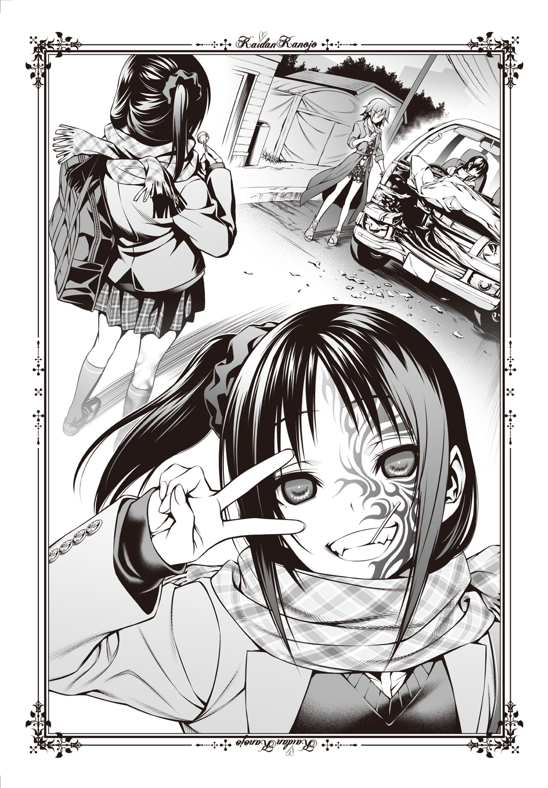
鷹夏市の冬は寒い。
最近の槍牙くんは部屋のガードを固めてしまっているため、そう簡単に部屋へと侵入できなくなってきた。私――黒川夢乃には少し嫌な話だ。家に上げてもらうことはお義母様に頼めば簡単にできるだろうが、あまり迷惑はかけたくない。ここしばらくの朝は、斉藤家の前に立って二階の槍牙くんの部屋を見あげ、寒さにひたすら耐えている。
しかし恩恵もある。雪かきの必要がないかを知るため、槍牙くんは必ず起きてすぐにカーテンを開けるので、一番に私の顔を見てくれるのだ。それが途轍もなく嬉しい。寝起きの槍牙くんは眠たいのか、ちょっとげんなりしたような顔をするけれど。
しかし毎日の営みにも刺激が欲しいと思うのは恋心だろう。
私はいつもと違う朝を槍牙くんに迎えさせてあげようと思い、斉藤家の壁面を登る。雨どいの管やエアコンの室外機、窓のくぼみなど手をかけ足を置ける場所は多い。槍牙くんがカーテンを開いたとき、いつも電柱の隣に立っている私が間近にいたらきっと驚き、そして喜んでくれるだろう。
『おはよう、夢乃ちゃん！ こんなにそばで君に会えて嬉しいよ！』
槍牙くんはそう言ってくれるに違いない。想像するだけでもだえてしまう。私はそんな未来予想図を頭の中に描きながら登っていき、槍牙くんの部屋の窓のへりへと足を引っかけた。しかしそこは少し前に降った雪が残っていたのか凍っており、瞬間、ずるりと滑る。
「あら？」
『おい、お嬢！』
左腕にのさばる人工呪術『黒龍』が叫ぶ。そのとき、すでに私の体は宙を舞っていた。崩れた体勢を戻そうとしたのだが、妄想していたせいか頭がすぐに切り替えられない。完全に不意を突かれた形だ。私はそのまま、頭から真っ逆さまに落ちて。
どごっ、と頭を打ちつけたのだった。
＊
目を覚ましたら、そこは洋間だった。少し痛む後頭部をすりすりとなでながら起きあがると、男の子の声がする。
「黒川！ お前大丈夫か！」
きっちりとブレザーを着こんだ少年だ。必死な様子で私を心配そうに見ている。ええと、と言葉に窮していると、その隣にいた和装の男の人もほっとしたように息をついた。
「夢乃、朝から心配させないでくれ。怪我こそなかったからいいものの、当たり所が悪かったらいくら夢乃でも危ないんだからね？」
黒川。夢乃。その二つの呼び名が私を指しているのだということはわかる。
でも私は、私が誰だかわからなかった。
「黒川？ おい、どうした？ 具合が悪いのか？」
少年のほうがまた心配そうな顔をする。私は起きあがり、自分がいま寝ていたのが四人がけのソファであることを知り、それから周囲を見る。やっぱり覚えがない。
ブレザーの少年と和装の男性の両方を見ながら、私は尋ねた。
「あの、すみません。ここはどこで、私は一体誰なのでしょうか？ あと、あなたたちも」
少年と男性はぱちくりとまばたきをし、互いに目を合わせた。
『あーあ、ダメだこりゃ』
どこか耳元で、別の男の人が喋った気もした。
記憶喪失だろうね、と和装の男性が判断した。
「いましがた明神に連絡を入れたが、どうやら夢乃は頭を打って記憶喪失になったんじゃないか、ということらしい。一時的なものだとは思うが、しばらくこの調子みたいだ」
そうですか、と私とブレザー服の少年で応じる。和装の人は黒川灯といって私の父親であるのだという。家族の存在さえ忘れてしまったことに罪悪感を覚えるも、その人は笑って許してくれた。面目ない。
そしてブレザー服の少年は斉藤槍牙。私とは幼馴染で、私は彼と一緒に登校するためにここ、斉藤家を訪れたというのだ。自分が中学生であることはなんとなくわかったのだけれど、男の子と一緒に登校するというのはちょっと気恥ずかしい。
でも私――黒川夢乃は毎朝、彼と一緒に登校しているのだそうだ。
「あの、記憶喪失であるのならば今日は学校を休んだほうがいいのでしょうか？」
黒川灯――父にそう尋ねると、彼は少し渋い顔をした。
「一時的にとは言ったが、普段の生活、日常的に見ている光景の中で記憶を取り戻すことも多いらしい。電話口での判断だし一概には言えないそうだけど......槍牙くん」
はい、と少年――斉藤くんが答える。
「今日明日、夢乃のことを頼むよ。それで記憶が戻らなかったら他の手を打つ。明神もいま仕事が立てこんでいてこっちに来られないそうだから、二日間はそれでいこう」
「頼むって......学校に行く、っていうことですか？」
「記憶の鍵を開くなら、普段の風景の中にいたほうがいいらしい。記憶喪失じゃ、色々と不便だからね。他に頼める相手もいないし」
斉藤くんは「いいですけど......」と言って私の顔を見る。少しためらっている風だったが、嫌悪感などはないように思えた。私は頭を下げる。
「すみません、斉藤くん。ご迷惑をおかけしますが、よろしくお願いします」
「......うん」
少し歯切れが悪い言い方だ。やっぱり迷惑なのだろうか。一刻も早く記憶を取り戻さなくてはならないなと思ったところで、父が立ちあがる。
「じゃあ、俺はそろそろ行くよ。槍牙くんはこれから出るのかい？」
「あ、はい。じゃあ黒川、行くぞ。頭はもう痛くないな？ 具合が悪ければ言えよ？」
優しく心配してくれるので照れる。はい、とうなずいて立ちあがろうとし、気づく。
「あの、斉藤くん。中学校へいまから向かうのですよね？」
「え？ ああ、うん、そうだけど？」
「私、着替えなくてはならないと思うのですが」
黒のリボンタイをつけたフリルの多いブラウスに、黒いバラの刺繡が細かいビスチェ。ロングスカートには段々になったフリルが連なり、チェーンのついたそれは華美装飾という単語がしっくりくるほど派手だ。ストッキングも赤いダイヤの柄が入っているし、考えたら頭の左右に結ばれたリボンも大きくて学生向きではないと思う。
それに斉藤くんがブレザーなら、女子も制服のはずだ。
斉藤くんがきょとんとした顔のまま、私の服をじろじろとながめる。
「着替えるって......どこか汚れたのか？ 気づかなかったけど」
「いえ、汚れているとかじゃなくてですね。この服装、中学生にしては派手すぎると思います。制服じゃなくてはいけないでしょうし、ちゃんと中学生らしい身なりをしなくてはいけません。少し、身支度の時間が欲しいのですけど」
「......灯さん、黒川がおかしい」
斉藤くんが父に向かって酷いことを言う。父もなんとも言えないようで、苦笑いをひきつらせていた。幼馴染だから遠慮がないだけだろうか？
「っていうか黒川、お前、そもそも制服あるのか？」
「どうして斉藤くんは制服を持っているかどうかも疑うんですか。制服がある中学校へ通っているのだったら、制服で通うのが当たり前ではないですか！」
斉藤くんはちょっとおかしいと思う。疑問に思うことではないはずだ。
俺が間違っているのかな、とつぶやきながら斉藤くんが父を見る。父は応じた。
「夢が持っていたはずだ。ほとんど身長も変わらないし、着られるだろう」
「......どうして夢さんが持っているかのほうが疑問なんですけどね」
斉藤くんが大きく首を傾げる。どうやら「夢さん」という人は中学生ではないのに中学校の制服を持っているようだ。卒業生なのかもしれない。いや、それより私の制服ではなく他人の制服がどうして第一候補なのだろうか。遠慮もあって、それは尋ねそこねた。
それから私と斉藤くん、そして父の三人で私の家へと戻った。道を歩いても風景には見覚えがない。記憶が戻るきっかけが、何か見つかればいいのに。
ちなみに私のコートだけれど、背中に大きなドクロマークのついた派手なファーコートだった。きっと斉藤くんを迎えに行ってから着替えるつもりだったのだろうが、私の私服は装飾の激しいものが多いようだ。ちょっと自分の美的センスに悲しいものを覚える。
斉藤くんはコートではなく、青いマフラーを首に巻いただけだった。これぐらいのほうがすっきりしているのに、と記憶を失う前の自分に言ってやりたい気分だ。
私の家は神社だった。長い石段をのぼって広い境内の中を通り抜け、ようやく母屋へと到着する。やけに履きにくく脱ぎにくいブーツに苦戦しているうちに父がどこかへ行ってしまったので、私は斉藤くんと二人して玄関に立ち、父を待った。
「あの、『夢さん』というのはどなたなのでしょうか？」
「ああ、夢さんはお前のお母さんだよ。灯さんの奥さん」
私は母のことすら忘れてしまったようだった。大変申し訳ないと思うと同時に、どうして母が中学校の制服を持っているのかが不思議である。
おそらく私の制服は前日に不慮の事故があって汚してしまったか、破けてしまったのだろう。それを斉藤くんたちも知っているのだ。そうでもなければ、この派手な私服をいつも着ていることになってしまう。こんな服装で登校しているとしたら大変頭が悪いか、そうでなくとも大問題児だろう。私は決して非常識な人間ではない。
思い至った可能性に納得していると、父が戻ってきた。手には斉藤くんが着ている制服と同じ色合いのブレザーとプリーツスカートがある。
「じゃあ、これに着替えて行きなさい」
「ありがとうございます。ええと、私の部屋とかは......」
「あ、こっち」
斉藤くんが案内を買ってでてくれた。父は用事があるのか、斉藤くんに任せて別の方向へと歩いていく。それにしても結構可愛い制服だ。袖を通すのが楽しみなくらいだった。
連れてこられた場所は、襖や障子の多い中で珍しく洋風の扉の前だった。
「それじゃあ私は着替えてくるので、斉藤くんはここで待っていてください」
わかった、と言って斉藤くんが少し離れた壁にもたれる。私は少し急がないとな、と思いながら自室の中へと入った。
天井に吊られたシャンデリア、床いっぱいに敷かれた赤いカーペット、壁のデザインも凝っており、何より目立つのは部屋の半分近くを占める天蓋つきのベッドだ。真っ赤なカーテンや敷布で彩られたその寝所には、憧れ以上に戸惑いがあった。お姫様の部屋みたいと言えばそうだが、まったく予期していなかった光景に私は一度部屋を出る。
「ん？ どうした、黒川？」
「......斉藤くん。ここはきっと私の部屋ではありません」
「いや、お前の部屋だけど」
呆れた調子で言う斉藤くん。噓をつく理由もないので、本当に私はいつもこの部屋で過ごしているのだと思う。しかしあまりに日本離れした部屋で、びっくりした。
「鏡なら、入って左側に行くと黒いクローゼットがあるから。その扉の裏にあるよ」
「え、斉藤くんって私の部屋に入ったこと、あるんですか？」
「......うん、まあ」
少しばつが悪そうに斉藤くんが顔を背ける。その態度にもしかして、と思う。
もしかして斉藤くんは、私に無断で、あるいは無理やり部屋に入ったことがあるんじゃないだろうか。この態度に他に説明をつけるには「私に強引に連れこまれた」ぐらいのものだろうが、私がそんなことをするわけがない。
斉藤くんって女の子の部屋に勝手に入るくらいデリカシーがないんだ、と思ってきびすを返す。扉を開くも、豪奢な内装はちっとも変わっていなかった。当たり前か。とりあえず斉藤くんが教えてくれた通り、私はクローゼットへ行き扉を開く。内側に確かに鏡がついていて、自分の姿が見えた。わりと肌が綺麗なこととかスタイルがいいことには感謝するものの、やっぱり服装がいただけない。童話のお姫様か、お姫様をたぶらかす魔女のどちらかにしか見えない。何故この両極をイメージしてしまうのだろうか。
それと――左腕に龍のペイントがあるのがどうも不良みたいで好きになれない。シールかと思って爪を立てて引っかいたのだけれど取れなかった。お風呂で洗い流す時間はきっとないだろうし、仕方がない。冬場だから肌を見せることもあるまいとあきらめた。
髪のリボンを外す。ブラッシングをしなくてはと思ったのだけれど、びっくりするほどさらさらなので手ぐしだけで問題がないほどだ。いまいち脱ぎ方のわからない服をなんとか脱ぎ、下着を見る。黒いレースのそれはやっぱり十三歳という年齢にそぐわない気がして別のものを探した。ブラウスに透けないよう、薄い水色にする。フリルがついていたけれど、クローゼットの中にあるものの中でもっともまともだった。
「......っていうか、サイズが中学生っぽくないんだけれど」
父にも斉藤くんにも十三歳と教えてもらったし疑う理由はない。けれど、下着のサイズと自分の胸にある塊とがあんまり十三歳っぽくない。そういえば身長も斉藤くんよりちょっと高かった気がしたし、成長期なのだろうか。ふう、とため息をついてから下着を身に着け、ブラウスに袖を通す。成長期について心配していたけれど、どうやらちょうどいい大きさのようだ。スカートも履いて鏡をのぞく。やっぱり髪の質がさらさらすぎるので、結んでいったほうがいいだろう。クローゼットの中に何かないだろうか。
「......普段、何を使っているんだろう」
リボンも髪どめも、サイズが大きかったり柄があったりして選びにくかった。かけられている服もアクセサリーも、一切合財が学生らしくない。悩みはしたけれど、やっぱりさっき使っていたリボンを使おう。私は髪の毛を後ろでまとめてリボンで結んだ。
さて、支度が整った。私は部屋を出ていこうとして気づく。
「あ、鞄」
部屋を見渡し、通学用の鞄を探す。しかしどういうものか思いだせないので、私は困ってしまう。手提げなのか背負い型なのか、肩から提げるタイプか。
こんこん、とノック音がして斉藤くんの声が扉の向こうから聞こえた。
「黒川、悪い。さっき俺の家に鞄と日傘、忘れてきたのを美盾が......妹が持ってきてくれた。俺が預かっているから、鞄は探さなくていいぞ」
いいタイミングだ。私は窓に鍵がかかっていることとか（普通のクレセント錠じゃなくてフランス落としだったためわかりにくかった）、電気をつけっぱなしにしていないなとか確認しながら廊下へと出た。最初の位置とほとんど変わらないところに斉藤くんはいた。その足元にはさっきまでなかった派手な飾りのついた日傘と、黒い革にワッペンや安全ピンで装飾の施されたトランクが置いてある。どこに学習鞄があるのかわからなかったので斉藤くんに尋ねた。
「斉藤くん、鞄は？」
斉藤くんはじっと私を見たまま目を丸くしている。聞こえていないようだけれど、もしかして私の姿のどこかがおかしいのだろうか。着替えを見られることは絶対にダメだけれど、斉藤くんに普段の装いなんかを聞いてから着替えれば良かった。
「ええと、どこか変ですか？」
「......えっ？ ああ、いや、ううん、いや、えーと」
わたわたと慌てた様子を見せ、ようやく一呼吸置いて落ちついた斉藤くんは顔を真っ赤にしてぼそりと答えた。
「......なんでもない」
「んん？ まあ、ならいいですけど......ところで、鞄は？」
「え、ああ、これ」
何の冗談かと思ったのだけれど、斉藤くんは足元にあるトランクを指さした。どう見ても学校へ持っていくものではない。斉藤くんにきつく言った。
「ねえ斉藤くん。ふざけている場合でもないし、時間もないと思うのですけれど」
「......いや、本当にこれなんだけど」
頑固なことに斉藤くんが譲らなかったので、私は父に頼みこんでようやく手提げの鞄を手に入れた。高いブランドものだったから嫌だったのだけれど、あのトランクよりは絶対にマシだ。あんなごてごてとした鞄を通学用に使っているだなんて、斉藤くんの冗談は悪趣味である。
使っていないかのようにぴかぴかの教科書と、何故かノートもなかったので新品のものを鞄に入れてようやく私と斉藤くんは中学校へ向けて家を出た。ローファーを見つけだすのに少し苦労したけれど、遅刻はせずに済みそうだ。
父も、まだ会っていない母も特に見送りはしなかったので、斉藤くんと私だけで玄関を出る。「いってきます」と言いにくくて「お邪魔しました」と言ってしまった。境内を抜けて、石段を下り、大きな道を歩いていく。私へとちらちら視線を送ってくる斉藤くんも、特に話しかけてこない。私も周囲をいくら見ても記憶がうずかず、手持無沙汰だった。
「ねえ、斉藤くん」
仕方がないので私から話しかけると、ローファーの底で凍った地面を滑らないように慎重に歩きながら、斉藤くんはきょとんとした顔を向けてきた。
「私、できるだけ早く記憶を取り戻したいんです。こうやって斉藤くんに迷惑をかけるのも良くないし、色々と不便ですから......なので、普段私がどういう振る舞いをしたり、どんな話をしたりするのか、教えていただけませんか？ なるべく同じようなことをします」
「......同じようなことを、するの？」
妙にげっそりとした表情を浮かべる斉藤くんだったが、私にとっては大問題なのだ。これまでの斉藤くんの反応や部屋の様子から推し量るに、普段の私はちょっとだけいまの私と違うようだから合わせたい。記憶が戻る手立てにきっとなるだろう。
少し悩んだようだったが、斉藤くんはうなずいて返してくれた。
「わかった。できるだけ協力するよ」
「ありがとうございます、斉藤くん。ええと、じゃあまずは......私って、いつも斉藤くんの後ろをついて歩くぐらいなのでしょうか？」
道がよくわからないため、いまは斉藤くんの少し後ろを歩いていたのである。大体どの辺りにいるのかを教えてもらえれば、普段の景色に近くなるのではと思ったのだ。
うーん、と斉藤くんはうなってから答えてくれた。
「俺の後ろを歩く、っていうのはあんまりないかな」
「じゃあ、前ですか？」
ぐいぐいと歩いていくタイプなのかな、と歩調を速める。道を間違えたらすぐ斉藤くんが教えてくれるだろうと思っていると、いや、と斉藤くんは訂正を入れた。
「前っていうほどでも......」
「じゃあ、完全に隣なんですか？」
年頃の男女がそうして歩くのはちょっと恥ずかしい。自意識過剰かもしれないけれど、私だって斉藤くんのことを意識しないわけではないのだから。
しかし斉藤くんは、いいや、と首を横に振った。
「前でも隣でもなくて、その、俺から見て......上にいるかな、いつも」
上ってなんだ。
前後左右ならわかる。上ってどういうことだ。飛ぶのか。私はいつも飛んでいるのか。
「ひょっとして斉藤くんは、お笑い芸人を目指しているんですか？」
「将来の夢は公務員。って前にも言っているんだけどな」
「何をどうやったら私が斉藤くんの上にいることになるのか、まったくわかりません」
きっと斉藤くんはこういう、わけのわからない発言をする人なのだろう。笑わせようとしているのかもしれないけれど、色々と不安な私としては空回っているとしか言えない。斉藤くんの上にいて登校などといえば、かなり現実的に考えてみれば抱きついてしがみつき、おぶさっているような状態だろう。あるいは肩車だろうか。そんなことをしながら登校する人なんているわけがない。
重たいため息をこぼす斉藤くんと一緒に道を進む。見覚えがないのが不安だけれど、間違えて変なところに連れてこられているわけもない。知らない場所としか思えないので少しよそよそしく歩いていると、周囲の人たちが見てくるような気がする。特に、同じ学校の制服を着ている人たちが。
「なあ、黒川。何か思いだしたりしないのか？」
「すみません、残念ながら......」
「いや、いいよ。早く戻ると......いい、な......」
斉藤くんの言葉はどんどん尻すぼみになっていった。心配してくれているのは本当のようだけれど、戻ってもらいたくないという気持ちも少し見える。気のせいだろうか。
と、唐突に。
「くしゅんっ！」
くしゃみが出た。ちょっと恥ずかしい。斉藤くんが目を丸くして、すぐにマフラーを外す。青い毛糸で編まれたそれは、どうやら手編みのようだった。斉藤くんはそのまま私に差しだしてくる。
「これ、使えよ。っていうかコート忘れたのに気づかなくてごめんな」
「あ、いえ、その......使えるコートがなかったので」
いずれも華美なものだったので、私は防寒具を着なかった。それで少し冷えたのだろう。遠慮しても斉藤くんが譲らなかったので、私はリボンに気をつけながらマフラーをそのまま借りる。斉藤くんが直前まで着けていたため、ぬくぬくと温かい。
ほう、と思わずほほがゆるんでしまい、斉藤くんに笑いかけた。
「あったかいです。ありがとうございます」
斉藤くんは口ごもり、何故か顔を真っ赤にしていたけれど。
ようやく学校に到着し、昇降口に入る。自分の名前を探すより早く斉藤くんが場所を教えてくれた。たまに変なことを言わなければいいのにな、と思った矢先のことである。
何故か下駄箱に入っている私の上履きは、ごつくて重たそうなブーツだった。
「......斉藤くん。ここは本当に私の下駄箱なのでしょうか」
「うん。お前いつもそれ履いているから」
そう答える斉藤くんの手には白い上履きがある。近くを歩いている女子生徒も同じものを履いているので男女共通だろう。冗談だとしてもしこむ時間はなかったはずだし、もしかしたら本当に私はこのブーツを上履きにしているのかもしれない。
「ちなみに訊きたいのですけれど、汚れたとか壊れたとか、そういう事情があるだけですよね？ まだ買いに行けていないから代用品としてこのブーツを使っているだけで」
「......いや、入学してからずっとそれを使っているけど」
他、色んな可能性が脳裏に浮かんでくるものの現実味がなくて採用できない。ただとにかくこんな校則違反の代物を使うわけにいかないということで、来客用の茶色いビニールレザーのスリッパを使うこととなった。「鷹夏中学校」の印字のあるそれはお客様用なのだと斉藤くんは教えてくれた。
お客様、という言葉に疎外感を覚える。少し悲しい気持ちになった。記憶がないことがとんでもなく不安で、一人ぼっちで、孤独であることへの恐れにつながるように。
「黒川？ 大丈夫か？」
ん、とうめいて顔を上げた。いつの間にかうつむいていた私の顔を、斉藤くんがのぞいてくる。ちょっと顔が熱い。こんな不意に顔を近づけてくるとは、斉藤くんはさては女たらしか無頓着か鈍感のどれかだろう。自分が意識しすぎとも思うが。
なんでもないです、と言って私は斉藤くんについていく。校内の様子もあまり覚えている気がしない。毎日ここへ通っているのならば記憶がよみがえることもあるのではないかと思うのに、一向にそのきざしがないのはつらかった。
一年一組の教室へ到着する。私の顔を見て心配そうにしながら、斉藤くんが扉を開く。もうホームルームぎりぎりの時間だ。教室の机はほとんどが埋めつくされており、私と同じ十二、三歳の少年少女たちが座っていた。そして彼ら彼女らは、私を見て。
ぴたりと、一様に動きを止めた。
さっきまで続けていただろう雑談も、悪ふざけめいた遊びも、課題の見せあいをしていた動きも、何もかもが凍ったようになっている。その目はいずれも私を見ていた。
「......えーと、今日はちょっと事情があって」
斉藤くんが私のそばに立ってくれる。三十人ほどしかいないが、それだけの人間に見つめられるというのはなかなか怖い。つい私の手は斉藤くんのブレザーの裾をにぎっていた。ちょっとほっとする。隣にいて心が落ちつくということは、やっぱり記憶を失う前の私は彼ととても仲が良かったのだろう。そう思うと、心が和んだ。
「黒川は普通に制服を着て過ごすけれど、よろしく」
何故だろう。和んだ心が一瞬にして疑惑に変わる。普通に制服を着て過ごすことをわざわざ注意する意味がわからない。普段から普通に制服を着るのが当たり前だ。私は斉藤くんの脇腹を小突き、ちょっと、と声をかけた。
「記憶喪失のことを言ってもらわないと困るんですけれど」
「......うん、そうだね」
それはさして重要ではないというような口ぶりで、斉藤くんはそれも説明してくれた。いきなり記憶喪失などと言われても簡単には受け止められないようで、半信半疑の様相を見せるクラスメイトたちだったけれど、納得したような顔も見受けられた。
顔と名前がわかっているのは斉藤くんだけだ。私は誰が誰か思いだせないもどかしさに申し訳のなさを覚えながらも、きょろきょろと教室を見回す。
「斉藤くん、私の席ってどこですか？」
「......えーと、本来の席？」
本来以外に何がある。普通に普段座っている座席を教えてくれればいいのだ。しかし、あ、もしかして、と思い至る。
「私、誰か仲のいい友達と座席の交換とかしているのですか？」
そういうことはあるかもしれない。ついでに斉藤くんだけでなく女子で仲のいい友達が見つかるならば心強い。希望と期待をもって女の子たちの顔を見まわすも、斉藤くんは首を横に振って私の推測を否定した。
「お前に仲のいい友達はいないぞ」
「ねえ斉藤くん。それはあまりに悲しい話だと思いませんか？」
あっけらかんと何を言ってくれるのだ。噓ならばいいのだが、そういえば誰も心配してくれない。斉藤くん以外は完全に戸惑っているばかりで、こういうときに声をかけてくれる女の子なんていなかった。もしかすると本当に、私には親しい友達がいないのかもしれない。落ちこみそうになるのをこらえ、斉藤くんに座席の位置を聞きだした。どうやら私の席は黒板に向かって、もっとも右前に位置する席らしい。斉藤くんは、と思ったが彼は正反対の左後ろである。一番遠い席だった。
それにしても机にも椅子にも少しとはいえ埃が溜まっているのはどういうわけだ。私は長い間、この席に座っていなかったのではないかと思える。
「斉藤くん、私は記憶を取り戻したいのですが」
「うん、わかっている」
「そのためには普段と同じ光景を見る必要があると思うのです」
さっき斉藤くんは「本来の席」と言った。そして目の前にある座席は埃が積もっている。普段私はこの席を利用していないというのは簡単な推理で導けた。
「いつも座っているのはどこですか？ そこからの景色が見たいです」
「......ええとね、ちょっと言いにくいんだけど」
言いにくいだろう。定められた座席に座っていないなんて、あまりに非常識な行動だ。それを推奨しなくてはならない心中はお察しする。でも私は、記憶を取り戻したかった。
「お前、いつも俺の膝の上に座っている」
「真面目に答えてください」
「真面目なんだけどね！」
バカな。何をどう真面目に答えたら「男子生徒の膝の上に座っている女子生徒」などといういかがわしい構図ができあがるのだ。それとも斉藤くんが私に膝の上に乗れと、暗に命令しているのだろうか。意外と破廉恥な人である。
仕方がないので、私はちり紙で埃を拭ってから席に着く。
「ねえねえ、黒川さん」
「え、はい？」
一瞬自分のこととわからなかったが、なんとか返事をして振りかえる。すぐ後ろの席に座る男の子だった。つんつんに立てた髪の毛とゆるんだ顔立ちが妙に印象に残る。しかし見覚えはない。記憶を取り戻す鍵とはならなかった。
「黒川さんさ、今日はどうしたの？」
「どう、したのって」
だから記憶がないのだ。それゆえいつもと違った行動や態度、仕草を取っているのだろうことはわかっているが、思いだせない以上普段通りになど振る舞えない。斉藤くんはバカみたいなことばかり言って本当のことを教えてくれないし。
いやいやいや、と軽薄そうにその男子は言った。
「いや、すっげえ可愛いからびっくりしたんだよ！」
「かわ」
いい、とまでは言えずに固まってしまう。一体この人は何を言っているんだろうか。いきなりこんなことを言うなんて非常識だと思って斉藤くんを見るも、彼は自分の隣の空席をじっと見ているだけだった。友達の席なのだろうか。異変を察知してくれない。
心がざわついた。さっき斉藤くんの隣にいたときはあんなにほっとしたというのに、いまの私は少し緊張している。不安なのかもしれない。喉が渇きはじめていた。
「いや、いつもはちょっとおっかないっていうかー、近づいたら怪我させてきそうな雰囲気あるのに、今日はお嬢様みたいだしさ。思わず見とれちゃったっていうか。あ」
そこでつんつん頭の彼は顔を近づけ、ぼそぼそと小声で言った。
「でもあんまり他の男は信用しちゃいけないよ。みんな黒川さんが可愛くなったからって狙っているからね」
「狙う？」
やけに近よってくるなあ、と思いながら少し身を引いて応じた。
「恋人にしたがっているっていうこと。中学生だからね、みんな彼女が欲しいんだ」
彼は日立紅という名前らしくて、軽口が多くて軟派な雰囲気がすさまじい男子生徒だったけれど、斉藤くんと違って色んなことを教えてくれた。斉藤くんはただ親同士が友達であるというだけでそんなには親しくないこととか、私はあまり女子と馴染めていなくて、日立くんと一日にちょっと喋る無口なタイプだったことだとか。普段は心を閉ざしているような節があるのに、今日はその雰囲気がなくて本当に可愛いと何度も何度も言った。
どうしてそれらを小声で教えるのかという疑問はあったものの、ホームルームが始まるまで彼は私にあれこれと世話を焼いてくれたので非常に助かったのである。
「......あ」
そして悲劇は一時間目の数学が始まってすぐさま起きた。
私は教科書やノートは持ってきていたのに、よりによって筆記用具を忘れてしまっていたのだ。どうしよう、と思って隣に座る男子生徒を見る。前髪の長い小柄な彼は、私どころか他の人とも一切目を合わせておらず、話しかけにくかった。
数学の先生は定年も近そうな年ごろの男の先生で、私を見るなりぎょっとした顔をしたけれど、それからちっとも私のほうへ顔や視線を向けてくれない。いまから斉藤くんのところへ借りに行くべきか悩んだのだけれど、教室を横断する形になるのでためらわれた。
「黒川さん、ペンとかないの？」
それを助けてくれたのは後ろの日立くんだった。机の上を見てすぐさま察してくれたようで、彼は私の答えも待たずにペンケースからシャープペンシルと消しゴムを出すと私の手ににぎらせてきた。遠慮しようにもしっかりと手に押しこんできたので（ついでに手をねっとりなでられた）、断ることなどできない。しかしこれはすごく助かった。
「ごめんなさい、ありがとうございます」
「いいよいいよ。今日一日、貸してあげる」
授業中なので小声で交わす。斉藤くんもこれぐらい気を回してくれたら嬉しいのに、とか考えながら正面を向くと、先生がプリントを回しはじめていた。比例反比例の簡単な問題を解くようにという内容だ。記憶喪失と言っても学習したことなどまでは忘れない、という話は本当なのだなあ、と思いながら問題を解いていく。
日立くんからペンを借りただけで、私は抱いていた不安などもなく過ごした。思いだせることは何もなかったのだけれど、安らいだ気持ちは尊いものだ。
斉藤くんが話しかけてきたのは、その一時間目の授業が終わってから、私と日立くんが話をしている途中だった。
「黒川、先生に許可もらったから、次から俺の隣に移動しろよ」
「え？」
斉藤くんの席のあるほうを見る。そこには確かに空いている席があるけれど、今日は休んでいる誰かの席ではないのだろうか。
「野波さんの席だけど、なんか今週は休んでちょっと遠いところに行ってくるみたいだから。今日明日ぐらいなら、借りていていいよってさっきメールもらった」
「おい斉藤。お前、野波さんとメールやっているのか？」
日立くんがびっくりした顔をしていた。その野波さんというのを覚えていないのできょとんとした顔をしていると、悟ったようで日立くんが説明をしてくれる。
「野波さんって全然誰とも喋らない人なんだよ。いっつもあやとりしていて、授業とかたぶん聞いてないんじゃないかなあ。声も聞いたことない」
「そんな大問題児がいるんですか、このクラスには」
関わりあいにならなくて良かった、と思って安堵する反面、どうして斉藤くんが苦いような何か言いたそうな、微妙な表情を浮かべているのかが気になった。しかし尋ねる前に日立くんが斉藤くんの申し出を断る。
「大丈夫だよ、斉藤。心配しなくても黒川さんは俺が見ておくから。一時的な記憶喪失ってやつだろ？ ドラマでよく見るやつだ。大丈夫、任せてくれよ」
「いや、任せろって言われても......」
困ったな、と斉藤くんがこちらに助けを求めるような目を向ける。その目がちょっとだけ可愛いなとか思いつつも、私は日立くんがこっそりとウィンクしてみせた仕草で悩んでしまう。確かに斉藤くんは父からも頼まれている人ではあるけれど、バカみたいなことばかり言って私を困らせてもくる。反対に、親身になって色んなことを教えてくれたのは日立くんだ。本当に自分には女友達がいないんだなと思いつつも、この二人のどちらを頼みにするべきか。
きっと二人とも、私が記憶を取り戻していないせいでちゃんと授業に取り組めるか心配してくれているのだろう。しかし斉藤くんのそばに行くのは、やっぱり本来の座席とは違うところに座ることとなる。あまりそれはいいことではない。まさか無許可で席を変える学生などいるはずないが、許可を取っていても少し抵抗があった。
本当に？ と、心の中に訴えかけてくる気持ちがある。斉藤くんと日立くん、どちらも私に話しかけてきてくれるが、それぞれに持つ印象が違う。日立くんは強引に話を進めるような感じがあって、斉藤くんは、そう。
私を強く心配してくれているような、温かさがあった。だからこそ迷う。でも結局、私は自分の気持ちや直感よりも、座席を変えてはいけないという秩序と理性を優先した。
「斉藤くん、大丈夫ですよ。私、日立くんに助けてもらいますから」
えっ、と斉藤くんがうろたえたような顔をした。なんだか泣きそうな顔にも見える。きっと斉藤くんは責任感が強い人なのだろうと私は思った。父から頼まれた以上、仕事をまっとうしたいと考えているに違いないのだ。でも私は首を横に振る。
「大丈夫ですよ。ちゃんと自分の座席に座って、真面目に授業を受けたいんです。このまま授業は日立くんにお願いします。いいですよね？ 日立くん」
「もっちろんだよ！」
気持ちのいい即答だった。ああ、そう、と斉藤くんは青ざめた顔で戻っていく。ショックを受けているような気がしたけれど、大丈夫だろうか。
不意に、衝動が湧く。私は斉藤くんの背中を追いかけなくてはいけないような気がした。寂しげな背中に手を伸ばし、引き止めなくてはならないような、そんな直感が――
邪魔するように、そっと日立くんが私に耳打ちをした。
「あいつも夢乃ちゃんを狙っているんだよ」
いつの間にか「黒川さん」が「夢乃ちゃん」になっていたのが気になったけれど、私はそれに文句も言えず、斉藤くんを追いかけるタイミングも逃してしまい、あいまいにうなずくだけだった。
もしかして本当に膝の上に乗ってもらいたい、だなんて考えていたのだろうか。だとしたら斉藤くんは、そうとうスケベな男の子だ。
どの授業でもどの先生にも、私は奇異の目で見られた。クラスメイトらからも遠巻きにされているため、日立くんに何度か「私、どこか変？」と尋ねてしまう。彼はへらへらと「夢乃ちゃんが可愛いからだよ」と歯の根の浮くような答えばかり返してきたので参考にならなかった。
午前中最後の授業は英語なのだが、移動教室だった。なんでもクラス単位ではなく、成績を「良い」「普通」「悪い」の三グループに分けて授業をおこなうらしい（実際はＡＢＣグループだし先生たちはそう言わないらしいが、生徒の中ではほとんどそう認識されているそうだ。表だって成績を良いだの悪いだの言えないのだろう）。「良い」グループでは試験の応用問題、長文読解などをするらしい。「普通」グループは基礎的な試験問題を中心に授業を進め、「悪い」グループは英語を使った簡単なゲームが主だとか。
日立くんに連れられて来たのは「悪い」グループだった。地味にショックである。私は英語の成績があまり良くないらしい。教科書を見ても全部和訳できるのに。
「あ、ここいいよ。あんまり前の席、嫌でしょ」
「別にどこでもいいんですけど......」
どうやら移動教室だと座席は決まっていないらしい。なるべく前から詰めるようにというお達しもあるそうだが、日立くんは私を最後方の席へ座らせ、自分はその前に座った。すでに教室へ入っていた人たちがやっぱり、私を見て驚いたような顔をする。嫌だなあ、とは思ったけれど、他にできることもないので日立くんと話すことにする。
「やっぱり何か変に思われている気がするのですけれど」
「だからさあ、夢乃ちゃんはあんまり気にしなくていいんだって。あれでしょ？ 記憶喪失だから不安になって、神経が尖っているだけなんだよ。そんなんじゃ肩こっちゃうよ」
「はあ......」
「ただでさえ胸におっきいものがぶら下がっているんだから。あっはっはっはっは！」
周囲はよそよそしいのでわからないが、たぶんまともに聞いていたら引くような発言だと思う。こういうところはげんなりする。望んで大きくなったわけじゃないのに。
すぐそばの扉が開き、知らない男子が教室へと顔を入れて、すぐに引っこめた。廊下からはどよめきのようなものが聞こえる。自意識過剰かもしれないが、私を見ていたように思える視線と動き方だった。廊下を歩いていたときからずっと、ひそひそと小声で噂されている気がする。見世物になっているようで、うんざりした。
「先輩や他のクラスの連中も、夢乃ちゃんが可愛くなったって見に来ているみたいだね」
「そうなんですか？」
「そうだよ！ あ、でもふらふら変な奴についていっちゃダメだよ。記憶喪失をいいことにあることないこと吹きこむ悪い奴もいるだろうし」
「そんな人たちばかりなんですか？」
ちら、と扉を見やる。また何人かの男子生徒がちらっとだけ教室の中をのぞき、興奮した様子で戻っていった。視線は私に向いていたと思う。扉の向こう側で騒ぎが何やら大きくなる。はっきり言って嫌な気分だ。もし私に度胸があれば、あるいは漫画やアニメのヒーローみたいに強い力があったら、注意してやるところなのに。
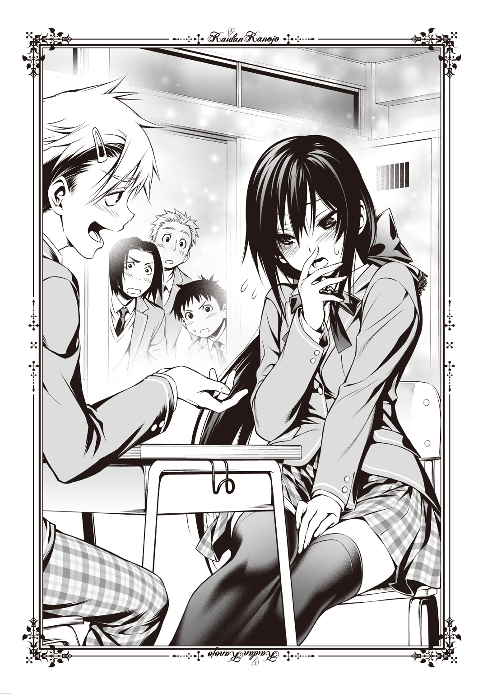
いらいらしないことにしよう。私なんかが注意しに行って逆襲されたらひとたまりもない。小学生ならともかく、この年ぐらいになると力で男子に勝てるわけがないのだ。
「ああいう連中には、からまれないようにしないとね」
日立くんは優しい。品がないし、きざったらしいし、やけに肩とか手とか触れてくるのが嫌なのだけれど、こうして話を聞いてくれるのは彼ぐらいなものだ。チャイムが鳴り、それでも扉の向こう側は妙な喧騒が聞こえてくる。
授業は十分遅れて始まった。すぐそこの廊下で喧嘩があって、対応に追われていたとのことだ。喧嘩をしたのは斉藤くんと上級生の男子数人とのことだった。斉藤くんも英語の成績が「悪い」グループだったそうで、むすっとした顔で先生と一緒に教室へ入ってきて私に心配そうな顔を向けたけれど、すぐに座ってしまう。空いているのは一番前の席だけだったので、お話はできなかった。
斉藤くんって、おとなしそうな顔をして喧嘩とかしちゃうんだ。意外。
でもどうして、なんのために喧嘩なんてしたんだろう？ 私はさっき廊下からぶしつけに私を見てきた人たちに、斉藤くんが怒ってくれたのではないかとちょっと妄想してみた。それは少し、嬉しいことのように思えた。
給食の時間になっても記憶は戻らなかった。揚げパンにコーンスープ、海藻サラダ、ウィンナーソーセージ、それと牛乳という献立だが、以前いつ揚げパンを食べたのかさえ思いだせなかった。周囲の席が近い六人ごとのグループで机を合わせて食べるのだが、私に話しかけてくれるのはやっぱり日立くんしかいない。でも私の胸のサイズやお尻の肉づきのことなど、恥ずかしいことばかり話すので、私は「そういうの嫌いです」ときつめに言ってしまった。失敗したなあ、という表情の日立くんは放っておいて、私はさっさと給食を食べ終えると教室を出た。特に行き先はない。思い出の場所さえないのだ。
「黒川」
呼び止められ、振りかえる。そこにいたのは斉藤くんだった。私に続いてすぐ教室を出てきたのだろう。心配そうな顔だ。
「記憶、まだ戻らないんだよな？」
「はい......すみません」
「いや、謝らなくていいんだけど......あのさ、もう今日は帰ろうか」
「え？」
急にそんなことを言われて、私はびっくりしてしまう。斉藤くんは悪気のなさそうな顔のまま、むしろ私を気づかうような声音で続けた。
「やっぱりさ、周りの連中も戸惑っているところがあるし、お前も色々大変そうだし。それに席もほら、アレだし」
「......アレって、なんですか」
たぶん私は、ちょっと怒っていたのだと思う。そこを刺激されてしまい、いらだった声になっていた。ん、と斉藤くんがいぶかしんだところに、ぶつけてしまう。
「斉藤くんなんて、ちっとも私を助けてくれないじゃないですか！ 私は記憶を取り戻したいのに！ どうして変なことばかり言って助けてくれないんですか！ 救ってもくれないくせに、帰れだなんて酷いです！」
もしかしたら斉藤くんは気を紛らわせようとしてふざけた冗談を言ってくれたのかもしれない。私が不安を抱えていることに気づいて助けてくれようとしたのかもしれない。でもそれは空回りをしていて、だから私は笑えなかった。
「まるで私がいつも制服じゃないみたいに言ってみたり、斉藤くんの上に乗って登校しているとかふざけてみたり、上履きがブーツになっているのに平然とした顔をしたり、私はいつも斉藤くんの膝の上に乗って授業を受けているとか言ってみたり、本当にバカなことばっかり言って！ そんな人がいるわけないのに！」
「ちょ、黒川、落ちつけ」
「私は真剣なんです！ 本気で困っているんです！ なのにどうして茶化すんですか！」
斉藤くんは悲壮な顔をした。私はたまらず大声を出したことと、教室から何人か騒ぎを聞きつけて出てきたのが恥ずかしくて逃げてしまう。きっと顔は真っ赤だったことだろう。斉藤くんも追いつかないようなスピードで廊下を駆け抜け、階段を下りる。
『あーあ、やっちまったなぁ』
何故か男の声の幻聴が、耳元で聞こえた。
散々走った末、私は昇降口へと逃げた。よく辿りつけたものだと驚きながら、私は手持無沙汰になってポケットに手を入れる。かち、と何かが手に触れた。
それは携帯電話だった。そうだ、と思って開く。何故か斉藤槍牙くんだけでほとんどいっぱいになっている中に（というか、同じ番号やアドレスをいくつも登録している意味はあるのだろうか？）「自宅」と登録されている別の番号があった。
私は電話をかける。数コール目に相手――父が出た。
『夢乃、どうしたんだい？』
「あ、お父さん。その......」
『ああ、まだ記憶が戻っていないんだね』
察しがいい。親子だからだろうか。一瞬だけ「ひょっとして普段は違う呼び方なのかもしれない。パパとか」と思ったけれど、いま呼びやすいのは「お父さん」だった。
『多少は不安かもしれないが、戻るときは一瞬だ。焦らずゆっくりでいい、と明神......お医者さんが言っていたよ』
「そう......」
確かにすぐ戻るようなら苦労はしないだろう。それでも私は早く戻りたいと願ってしまった。日立くんは良くしてくれるし、嫌がらせをされるわけでもない。幸い、勉強にわからないところもなかったし、逃げたくなるほどつらいわけでもない。
でも、記憶がないというのは息苦しかった。周りにある空気すら敵であるかのように、私の胸をきつく締めつける。誰も私のことを知らないよそよそしさが、少しずつ首を絞めてくるような気持ちだった。
記憶と人格が同じものである、という話を思いだした。私には知識の部分は残っていても、私を育てあげた周囲の情報が何もない。そして日立くんをのぞいて、誰も私に具体的な情報を与えてはくれず、示してもくれない。
私には記憶がない。だから私には、私がない。
本当に私が黒川夢乃なのか。本当はよく似ているだけで、誰か別の人間だったのを黒川夢乃だと言われているだけなんじゃないだろうか。みんながよそよそしく、親しげな様子が一切ないのはそれが理由ではないのか。一度鎌首をもたげた不安は、そのまま私の心の中でふつふつと沸騰しはじめていた。
冷やしてくれたのは、父の言葉だった。
『槍牙くんのそばにいなさい、夢乃』
「......え？」
八つ当たりのように怒鳴りつけてきた直後ということもあって、その名前はいま聞きたくなかった。戸惑っていると、父は優しい声音で続ける。
『彼だって決して覚えのいいほうではないけれど、記憶を失う前の夢乃のことを一番覚えているはずだ。場合によっては、親である俺や夢よりもね』
「そんなに、一緒にいたんですか？」
『ああ、ずっと離れなかったんだよ。それも槍牙くんのほうからじゃない。夢乃のほうから一緒にいたがったんだ。槍牙くんにも保護欲みたいなものがあるんじゃないかな』
そういえば教師やクラスメイトたちに記憶喪失のことを説明してくれたのは彼だ。私はきちんと説明できただろうか。どうせただ居心地の悪さを感じて何もできなかっただろうと冷静な部分の私が言う。心配そうな顔で隣の席に移動してこいよと申しでてくれたことも思いだした。授業中も私は困惑したような顔をしていたのかもしれない。斉藤くんはそれを心配してくれたのに。
私は自分の記憶のことばかり気にかけて、彼から遠ざかってしまった。不真面目なことはするまいと我を強くしすぎて、彼の忠告や言葉にも耳を傾けなかった。彼が私の気を紛らわせようとする発言に、いらだってばかりいて距離を取ったのだ。
『......喧嘩でもしたのかい？』
うろたえる。それでも肯定することははばかられて、私は言い訳をとりつくろった。
「いえ、その......別に良くしてくれる人がいて、それで斉藤くんは座席が遠かったからそっちの人に甘えちゃって......」
『別に良くしてくれる人？』
父の声がいぶかしんだような色を含む。日立くんの名前を出して説明したのだけれど、父は知らないようだった。
『夢乃からそんなクラスメイトがいるとは聞いたことがないね』
「そうなんですか？」
『癖の強い性格だったんだよ、夢乃は。だから親しい人というのは少ないはずだよ』
その「癖の強い」がどれほどのものだったのかはわからないが、腫れものを触るように扱われているのは理解している。
『槍牙くんを信じてあげなさい。彼は何があっても夢乃の味方をしてくれるはずだ』
「日立くんよりも、ですか？」
電話の向こうは何も言わなかった。いや、誰かと電話を替わっているような雰囲気がする。父でないとすれば――
『あ、もしもぉし。夢乃ぉ？』
とんでもなくゆっくりのんびりと話す女性の声がした。
『私ねぇ、お母さんだよぉ？ わかるぅ？』
「あ、ええと、ごめんなさい。私、頭を打って、それで」
『うん、わかっているから大丈夫だよぉ。ええっとねぇ、うぅんとぉ、ああ、そうそう、槍牙くんのことを信じてあげてねぇ、っていう話だよねぇ？』
途轍もなく会話のリズムが取りづらい。全身から力が抜けそうになりながらも、私はなんとか相槌を打った。
『槍牙くんはねぇ、絶対に大丈夫だよぉ。何度も夢乃のために頑張ってくれるしぃ、いざっていうときにはなかなかやるものなんだよぉ？』
なかなかやるもの、という言い方がなんだか面白くて笑ってしまう。覚えていないのは心苦しいけれど、この人は暗い気持ちをほとんど意識させないでくれるような、そんな人らしい。私は、はい、とうなずいた。
「斉藤くんと、ちょっとお話をしてみます」
仲直りしてみます、と言いそうになった。少しは冷静になったのかもしれない。
『うん、そうだねぇ。いまは覚えていないことが不安でぇ、ちょっと怖いかもしれないけれどぉ、槍牙くんがそばにいてくれるなら私たちも安心だからぁ』
最後まで聞き終えるのがもどかしいぐらいゆっくりだったけれど、嫌な感じはしなかった。私は通話を切って、中に戻ろうと思ってきびすを返す。
「夢乃ちゃん」
「......日立くん」
日立紅がそこにいて、にっこりと笑っていた。
「斉藤ならこっちだよ。おいで」
「あ、はい」
ちょうど会話を聞いていたのだろう。日立くんは斉藤くんのところまで案内してくれるようだ。給食のときに「嫌いです」ときっぱり言ってしまったのが心苦しかったが、日立くんは気にしていないようだったので私はそれに甘えた。一瞬、まだ斉藤くんとは電話で話すぐらいの距離がいいかなとも思ったのだけれど、きちんと顔を見て謝りたかったのだ。
教室のほうではなく、別の場所に向かっていく。
「こっちは、何があるんですか？」
「ああ、文化系の部室があるんだよ」
ぐるぐると歩き回らされた気分だった。その間、日立くんはあまり喋らない。昼休みの喧騒も遠く、ひと気はちっともない。斉藤くんは昼休みに部室へ何の用事で行くのか。そもそも何の部活動に参加しているんだろう、と思ったところで日立くんが指を差した。そこは貼り紙で「軽音楽部」とある。
「ここ、ここ。中にいるから、入ってよ」
「私、部員じゃないかもしれないんですけれど......」
記憶喪失なのでいまいち自信がない。しかし自分が軽音楽部であるとすれば、あの大量の華美な私服にも納得がいく。バンドを組んでいれば、ときには奇抜な衣装を着ることだってあるだろう。音楽の心得は特にないと思うけれど、記憶を取り戻せば何か楽器を演奏することもできるかもしれない。
日立くんにいざなわれるがまま、扉をくぐる。中にはエレキギターやキーボード、ドラムセット、アンプなどが並べられ、ベンチや折り畳みタイプの椅子も多く並んでいた。スコアや音楽雑誌が棚に整然と並べられ、壁や天井にはびっしりとスポンジのようなものが張り付けられている。窓には何もなかったが、カーテンは分厚いもののようだ。十帖ほどしかないスタジオのような印象を受けた。
しかし斉藤くんはいない。ドラムセットの裏やカーテンの陰にいるのかと思っていると、日立くんが部室に入って来て鍵をかけてしまう。
「夢乃ちゃんさ、斉藤はやめておけよ」
「......え？」
どうして鍵を閉めたの、と尋ねることもできない。言ったことの意味もわからず、私は戸惑う。楽器と椅子に囲まれた真ん中に立っていると、日立くんが近づいてきた。その目は少し暗い色をしている。
「記憶がないっていうから遠慮しておいたんだけれどもさ、もう我慢できない。言ってやる。斉藤はね、夢乃ちゃんと幼馴染だからってつきまとっているだけなんだよ」
「つきまとっている......」
「そう、あいつはストーカー野郎なんだ」
ストーカー。いい印象などあるはずもない言葉だった。身勝手な愛情を押しつけて迷惑をかける人で、規制法もあったはずだ。延々と好きな人につきまとい、場合によっては盗聴器やカメラをしかけ、どこにいるのかを常に把握し、家の前に立って待つことも多いと聞く。両想いならいざ知らず、一方的な恋愛感情で迫るというのは問題だと思う。好きな相手が思い通りにならない場合、感情的になって物を壊したり、果ては犯罪に至ったりすることもあるのではなかったか。私の知る限り最低の人種だ。
「でも、父と母は信頼しているようでした」
「それがあいつのやり方だ。親御さんに印象がいいのを利用して、夢乃ちゃんを無理やり自分の物にしているんだ。夢乃ちゃんが断れないのをいいことに、やたらと夢乃ちゃんとべたべたしようとしているんだ。ほら、隣の席に来いとか言っていたじゃん」
言っていた。その前には膝の上に座るようにとか言っていたと思う。もしかしてあれは冗談ではなくて本気だったのか。授業中に女の子を膝の上に乗せて楽しむだなんてまともな感性ではない、まるで変態の所業だ。
ひょっとして登校中、上に乗って登校しているというのも本気だったのか。私をおんぶなり肩車なりしたいという気持ちの表れだったのではないだろうか。だとすればあまりにもたちの悪い変態である。キングオブ変態だ。
「で、でも断ればいいじゃないですか。普通に考えて」
「ところが親御さんに受けがいいものだから、夢乃ちゃんとしても無下にできなかった、ってところじゃないかな。普段ならあいつは強要してくるけれど、今日は夢乃ちゃんが記憶喪失になっているから強く出られなかったのかもしれない。でもさっきは、夢乃ちゃんがどこかに行こうとしていたから慌てて追いかけたんだろう」
確かに早かった。心配してくれていたのかとも思っていたけれど、ストーカー心理だと言われると違った考え方ができる。
「でも、ストーカーだなんて......」
「現実味がない？ でも俺が見ている限り、いつもあいつにべたべたさせられていて夢乃ちゃんはつらそうだったよ。登校も一緒だったって聞くけれど、つきまとわれたのか、それとも強引に家に迎えに来させられていたんじゃないの？」
「そう、なんでしょうか......あっ」
「何？ どうしたの？」
「そういえば斉藤くん、何故か私の部屋の間取りを知っていました。クローゼットの扉の裏に姿見があるって」
「典型的なストーカーだな。勝手に部屋に侵入するなんて日常茶飯事なのかもね」
無断で相手の部屋に入るだなんて、まともな神経でできることじゃない。まさにストーカーならではの行動だろう。そんな人が身近にいたのかと思うとぞっとする。
斉藤くん。いい人だと思っていたのに。
「それでね、実は記憶喪失のことを慮ってもう一つ黙っていたことがあるんだけど」
「ええ、なんですか？」
ふっ、と日立くんは笑ってみせて、私の肩にぽんと手を置いた。妙に熱っぽいそれは、いましがた聞いたストーカーの話に比べればそんなに嫌じゃない。
「実は昨日から夢乃ちゃんと俺、つきあっているんだ」
「えっ？」
噓だ、と思った。それはない。こんな軽薄で下品な人に、私が心惹かれるわけがない。思わず呆けてしまった。日立くんはぐっと私に顔を寄せて続ける。
「当然、斉藤の妨害工作はあったよ。というか、夢乃ちゃんが記憶喪失になったのもその一環かもしれないね」
ちょっと距離が近すぎないかなと思う。スカートの裾に日立くんのスラックスが当たっているし、地味に胸も当たっている。後ずさるも、日立くんはぴったりついてきた。
「ここなら放課後まで人は来ない。それに防音がしっかりしているから音も聞こえない。窓だって分厚くてすごい頑丈なんだ」
押されてベンチに座らされてしまう。覆いかぶさるように、日立くんが迫る。
ほほをゆるめた顔は、これまで見たどの日立くんよりも嫌な顔だった。私の足と足の間に突っこまれた日立くんの膝が、肩をつかむ指の食いこみが、醜悪な顔つきが、嫌だ。本能が全力で嫌悪している。脳裏に走ったこの先の想像は、どうしてそんなことを思いついてしまったのかと疑うほど絶望的なものだった。
「大丈夫だよ、酷いことはしないから。夢乃ちゃんが、ずっと斉藤とやっていたようなこと、俺とするだけだって。ね？ 色々したでしょ？」
下卑た笑みだ。涎が垂れてくるんじゃないかと思えて、私は思いきり足を振りあげた。膝が日立くんの股を直撃したらしい感触がしたと同時、日立くんは「おごおっ！」という太い悲鳴をあげ、引きつった顔で硬直した。直後にもたれかかってきたので私は体を滑らせて回避し、日立くんの下から抜けだす。
「ま、待てっ......あ、待っ......ぐうう......っ」
よくわからないけれどよっぽど痛かったらしい。扉の鍵を開け、私は外へと飛びでる。右か左か、ここへ来るまで歩かされたせいでよく道が思いだせなかった。人のいる方角へ行こうと思ったけれどピンと来ない。
足元でからんっ、と何かが乾いた音を立てる。見るとドラムのスティックが転がっていた。軽音楽部の部室内から日立くんが投げつけてきたのだとすぐに理解し、私は何も考えずに左へと逃げた。
「待て......夢乃、ちゃ......ごほっ、けほ......」
咳きこむような声が聞こえたものの、私は止まらない。薄暗い廊下を全力疾走した。意外と速く動けるようで、私はすぐに廊下の端へと来てしまう。
廊下の端。すなわち、行き止まりに。
「......どうしよう」
失敗だったと気づいたときには、日立くんの足音が迫ってきていた。あたふたとしていると、いきなりポケットがぶるぶると震えた。うわっ、と跳びあがるほど驚いたが、そこには携帯電話が入っていた。取りだすと着信主は斉藤くんである。
ただとにかく、助けを求めたい一心で通話をつなぐ。
「もしもし！」
『あ、黒川。お前いまどこにいるんだ？ 授業始まったのに来ていないからかけているんだけれど。早く戻ってこいよ？』
「あの、えっと、私は、いま、えっと！」
視線を巡らせる。すぐそばのドアには「英語サークル ＭＩＢ」と書かれた札が下がっていた。ほとんど反射みたいな速度で答える。
「英語サークルＭＩＢの前です！」
『部室棟？ なんでそんなところに......』
「追い詰めたぞ！ 黒川夢乃ォ！」
斉藤くんの声をかき消すぐらい大きな声を出して、日立くんが現れた。微妙に内股になっているせいで変な動きになっていたけれど、目がぎらぎらとしていて怖い。ひっ、と小さい悲鳴をあげてしまう。すぐに斉藤くんが電話の向こう側で『どうした？』と心配してくれる。
色んな話を聞いた。両親からは斉藤くんを信じなさいと言われたし、でも斉藤くんがストーカーで、日立くんは私を優しく心配してくれる人だとも聞いた。そう思っていた部分もある。でも、直感に従ってみれば。
私は斉藤槍牙くんこそが、私の味方であると思う。
斉藤くんの隣の席に行けば良かった。筆記用具だって斉藤くんにお願いして借りれば良かった。ちょっとぐらい恥ずかしくても、斉藤くんの膝の上に座れば良かった。
後悔しても遅いだろうか。私は「英語サークル ＭＩＢ」のドアを開けようとして失敗する。鍵がかかっていてびくともしないのだ。ならばと反対側の窓へと取りかかり、クレセント錠を外した。窓枠に足を引っかけ、なんとか外へと出る。
「待てよ！」
私が草の刈りこまれた地面に降り立った瞬間、日立くんの怒声が聞こえる。真正面に敷地を区切る、緑色で背の高いフェンスがあった。どこへ逃げればいいのだろうとふらふら進み、フェンスへと身を寄せる。
その瞬間、日立くんが必死の体で窓を乗り越えてきた。逃げなくちゃ、と思っているのだけれど、足が震えてへたりこんでしまった。何が怖かったのだろう。いや、違う。外に出て安心してしまったのだ。足が震えて動けなかった。校舎を出てすぐ開けていた左右に逃げればよかったのに、私は怖くてフェンスにすがりついてしまった。大失敗だったと後悔しながら、手にしていた電話を耳に当てる。
「斉藤く......」
通話が切れている。呆れたのだろうか。それとも、連絡が取れたからもういいと思ってしまったのだろうか。頭の芯から腕の先まで血の気が失せて冷えてくる。どうしようもないほどの絶望を、私は感じた。
日立くんがひょこひょこと歩いてくる。顔を真っ赤にして、赤鬼のようだ。
「記憶がなくなっておとなしくしていたくせに、いきなり金的はねえだろ、おい。潰れたかと思ったぞ」
覆いかぶさってきたほうが悪いと思う。強気なことが言えればいいのに、私はそんなことができなかった。座りこんでしまっていたせいもあり、迫りくる日立くんの影が大きく見える。気持ちで完全に負けていた。
がしゃん、とフェンスをゆらして日立くんが私に被さってくる。嫌だ。こんな人に触ってほしくない。べたべた触られた感触を思いだしてしまって、吐き気がしてくる。嫌だ、嫌だ、嫌だ、嫌――
助けて、槍牙くん。
「おい、何してんだ」
日立くんとは違う、低くて響く声がした。はっ、と息を飲む音を立てて日立くんが振りかえる。私を覆っていた影がなくなって、いま私と日立くんが出てきた校舎が見えた。その、二階が。
窓を開いて、斉藤くんが片足を窓枠にのせている姿が。
私の居場所を聞いて、走ってきてくれたのだろうか。息が切れており、目は見開いている。肩が上下しているのが、まるで怒っているようにも見えた。
それゆえか、日立くんが大慌てで弁解した。
「ああ、いや、待て！ 違う、違うんだって斉藤！ これは――」
「離れろ、テメエ！」
斉藤くんが怒声をあげてそのまま飛ぶ。
噓、危ない！ と叫びそうになったが、斉藤くんは何事もないかのように地面に降り立つ。着地の音は大きく、怪我をしていないかと不安になるものの、彼はすぐこちらへ走りだした。その表情はもう、完全に怒りのものだった。
「ふわ、あ、違う、ちょ、斉藤、落ちついて！」
「そいつは――俺の女だ、手ェ出すな！」
斉藤くんが振りあげた拳が、日立くんの顔面に叩きこまれる。フェンスに思いきり叩きつけられる形で日立くんは吹っ飛び、そのまま反動をつけて地面にぶっ倒れた。痛そうではあったが、それよりも私には意識を奪われるものがある。
槍牙くんが、私のことを「俺の女だ」って言って、助けてくれた。
「......あ」
す、と私の前にしゃがみこみ、槍牙くんが私のことをじっと見る。あちこちを観察してから、少しささやくような声を出した。
「大丈夫だったか？ 悪かった、もっと言い方に配慮すりゃ、あんなに怒らせなかったのに。本当にごめん。どこか痛むところ、ないか？」
「......ええ、大丈夫よ」
ふっ、とほほをゆるめた槍牙くんが私の頭をなでてくれる。とても優しい笑顔で、ちょっとだけ安堵したような表情だった。頭をなでる仕草にも、温かみを感じる。ずっとこの手を感じていたい。うっとりと、眠たくなってくる。
でも頭をなでる手の動きは止まり、私の腕をつかむ。そのまま引っ張りあげてくれて、私のスカートを見てから、あちゃあ、と槍牙くんは顔をしかめた。
「雪が溶けたばかりで泥になっていたな。汚れちまった」
「ああ、そういえば冷たいなって思ったのよ。槍牙くんがあんまりカッコよく現れてくれたものだから、意識の外にあったのね。大丈夫よ。でも槍牙くんのジャージを貸してもらってもいいかしら。汚れた服でいたくないわ」
「そうだな、午後の体育は見学でいいか。なあに、明後日になったら明神さんが来てくれるから記憶も戻るよ。ほどほどに、気楽にでいいからな。学校生活」
「......ええ、そうね」
はて、この反応。さては槍牙くんってば。
『まだお嬢に記憶が戻っていない、って勘違いしていそうだな、この小僧』
「みたいね」
左腕の『黒龍』が喋る。私も小さい声で返した。
槍牙くんが助けに来て、私を心配そうにしてくれた辺りだっただろうか、一気に記憶が戻ったのだ。あまりにシフトチェンジがなめらかすぎて、私自身いつ復活したのかよくわからなかったぐらいだ。
しかし、勘違いしてくれているのならいい。ふふふ、と胸の中だけでほくそ笑んで私は槍牙くんにしなだれかかる。私に数々の狼藉を働いてくれた日立紅が気絶しているのを確認している最中だったので、不意を突かれたように槍牙くんは驚いた。
「ん？ お、おい、大丈夫か？ ちょっと休んでいくか？」
「ええ、そうね。それがいいわ。そこを曲がったところにあるベンチに座りましょう」
槍牙くんのブレザーを胸と背中、両方ぎゅっとつかんだまま、私たちは校舎を回りこんだところにあったベンチへと座る。泥のついた部分が冷たいのは不快だが、後で槍牙くんの汗と匂いがたっぷり染みこんだジャージを着るのだと思えば嬉しいことこの上ない。
しがみついたまま槍牙くんの胸元にすりすりと頭をすりつけていると、槍牙くんがいたわるような声で心配してくれる。
「具合が悪いなら保健室に行くよ。歩けそうになったら言ってくれよ」
「いえ、私はここで大丈夫よ。ひと気もないし、きっと誰も通りかからないでしょうし、槍牙くんが求めてくれるのであればベッドでなくても構わないのだもの」
「......ん？」
愛の営みなどどこでもできる。ベッドでもベンチでも地べたでさえも。こっそりと槍牙くんのブレザーとワイシャツのボタンを外してあげると中からインナーシャツが顔を出した。ほんの少し、汗の匂いが強くなる。そうか、私のために走ってくれたので汗をかいたのか。ならば私がたっぷりと嗅いで味わってあげなくてはなるまい。ふふふふふ、もう一つボタンをはだけてしまおうかしら。三つ目も外したら私の顔がワイシャツの中に余裕ですっぽり入ってしまいそうだわ。いえ、まずインナーシャツをめくって素肌を露出してからインナーシャツの中に頭を入れてしまおうかしら、ふふ、涎が出――
「おい、黒川」
ああ、槍牙くんの声が低くて太い。まるで怒っているかのようだけれど本当はわかっている。それは照れ隠しであり、本当は私の行動を可愛く思ってくれていることを。
ぐい、と肩を押されて姿勢を戻される。槍牙くんのじとっとした目が私を射抜いた。
「お前、記憶戻っているだろ」
「ええ、槍牙くんのおかげで戻ったわ。もう明快よ。すべてがクリアよ」
「戻ったなら戻ったと言え！」
「槍牙くんに気づいてもらいたかった、というのが乙女心よ」
本音ではある。ただ、槍牙くんがいたわってくれるので甘えた部分もあるが。
「......帰るぞ」
「愛の巣へね」
「教室に！」
「ああ、そうだわ。槍牙くんの体液と香りが染みこんだジャージを着なくてはならないのよね。ふふふ、デザインはださいけれども槍牙くんが着ていたものならば私の大好物よ」
「ださいと思うなら着なくていい」
「ふうん、そういうことを言うのね」
ベンチから立ちあがった槍牙くんはいぶかしげに眉を歪めて私を見る。記憶喪失から復活したとき「かつての記憶がなかった期間」の記憶は存在している、というパターンをいま私は体感していた。ケースバイケースではあると思うが、少なくとも私にはある。
今日槍牙くんが私に対して取った態度、行動。そのすべての記憶が。
「そのわりに槍牙くんは私の制服姿を見て顔を真っ赤にしていたじゃない」
「んが」
言いようもないうめき声をあげる槍牙くん。ふふふ、見られていないとでも思ったのかしら。私はすべて見ていて、そして感じていたわ。いつもと違う服装に、違った態度を取る私を見て心拍数を上げてほほを紅潮させていたことを。そういうことね、槍牙くんはこれぐらいギャップのある刺激を求めていたということなのね。
とはいえ、ゴシックロリータはやめる気がないのだけれど。だって派手な装いでないと、不安になってしまうから。最悪器官に――いえ、槍牙くんに見つめていてもらいたいから。いつでも私を感じてもらいたいから。
でも、今日ぐらいは良かったのかもしれない。
槍牙くんの可愛いところが見られて、新鮮だったから。
「......なんかすっげえ疲れた一日だった気がする」
「あらそう？ じゃあ、今夜は私が添い寝してあげなくちゃ」
「断固断る」
「添い寝より上をお望みなのね？ となると、なかなか口にするのがはばかられるわね。勿論いいけれど」
「黒川、ちょっと黙っていろ」
疲れたように額に手を当て、槍牙くんは重いため息をついた。私は自分の服装を見て、それから槍牙くんが耳まで赤くしていた姿を思いだした。
たまになら、このださい制服を着たっていいかもしれない。
「槍牙くんが望むなら、槍牙くんと二人きりのときだったら、またこの服を着てもいいわ」
「学校にいる間は着ないってことか......」
がっくりと肩を落とす槍牙くんの頭をなでてあげる。槍牙くんが私の背中に目をやり、腕を伸ばした。ほどけかけていたらしいリボンを、槍牙くんが取ってくれたのだ。
「ちょっと後ろ向け、結んでやる」
槍牙くんがそう言って私の後ろに回る。小学校以前はよく、こうしてくれたものだ。最近は槍牙くんが嫌がるしリボンが崩れても自分で直してしまうので、久しぶりのことだった。
無言で髪を結ってもらうのが少しこそばゆい。首筋にリボンや槍牙くんの手が当たるのが嬉しい半分、くすぐったい半分で、笑ってしまいそうになる。すでに口元はにやついていた。動くな、と槍牙くんに呆れられてしまうぐらい、身もだえてしまう。
幸せに身をゆだねていると、つい一時間ほど前の自分を思いだす。
記憶のない私には、私がなかった。
自分が履いているお客様用のスリッパも、少しうつむきがちに歩いてしまうことも、なんでも尋ねなくてはできないことも、槍牙くんのことを斉藤くんと呼んでしまうことも、何もかも自分を失っていた。それは途轍もない、恐怖だった。
最悪器官の効力が切れて、槍牙くんに見つけてもらえなくなったときのように。人間ではなく怪異となって、ほとんどの人間に見向きもされない存在となったときのように。
私は、怖かった。ぞくりと、遅まきながら首筋が冷たくなって震える。
「......どうした？」
「いえ、なんでもないわ」
槍牙くんに尋ねられて、精一杯の虚勢を張る。リボンを結び終えたのだろう。槍牙くんの手の感触が背中や後ろ髪から消えて。
ぽんぽんと、頭を軽く叩かれてなでられた。
「お前はここにいる。だから、いなくならないよ」
それはいつか、言ってもらったことのある言葉。春、怪異を倒した後に槍牙くんが私に言ってくれた、私を認めてくれる台詞。
それだけで、もう泣きそうになるほど、嬉しくなるのだ。
私は表情が見えていないのをいいことに、ぎゅっと目をつぶって涙をはらう。ほほをかくふりをして、目元を拭った。それから小さい声で、うん、と返して振りかえる。
一瞬だけ見えた槍牙くんの優しい笑顔へと、飛びこむように抱きついた。
「ちょ、こら」
勢いが強すぎたようだったが、槍牙くんは支えてくれた。幸せだ。私はきっと、世界で一番幸せだ。槍牙くんがこうして、私のそばにいてくれるのだから。
熱い抱擁を、いつまでも続けていたいと思った。でも。
「お前らぁ！」
気がゆるんでいるところへと突然、怒声が投げかけられる。はっと目を向けると、そこには槍牙くんに殴られたほほを腫らし、血走った目の日立紅がこちらへ突っ走ってきた。まだ未練があるのかこいつは。右手に持っている角材は武器としては脆弱なものだが、槍牙くんは豆腐より弱いのであんな粗暴なもので殴られたらまずい。
反応が遅れた。今日一日、平和ボケしていた体はすぐ動かない。
「殺してやる......殺してやるぅぅぅぅぅ！」
日立紅が逆上して得物を振りあげる。槍牙くんがぎゅっと私を抱いて、かばった。
――ダメ、私が守らなくちゃ、いけないのに。
しかし日立紅はぴたりと、そのまま動きを止めてしまった。え、と槍牙くんが呆けた声を出すけれど、私には見えている。日立紅の後ろに立つ、その巨漢が。
担任教諭の布川丈一が、日立の振りかぶった角材をつかんで制止させていた。その目は大きく見開かれており、汗をかいて息を荒らげた様子からすると、すんでのところで飛びだしてきたのかもしれない。声をかける間もなかったのではないかと思う。
彼の目が鋭く日立紅を射抜いた。額に青筋を浮かべ、本気で怒っている。
「何してんだお前ェ！ いま本気で殴ろうとしただろう！」
第三者の乱入により一気に日立は頭が冷えたのだろう。「ひいっ！」と怯えきった悲鳴をあげ、布川丈一により武器を取りあげられた。角材を放り投げてから、布川丈一は何度か大きく深呼吸をする。少しは落ちついたようで、私と槍牙くんに穏やかな声を発した。
「お前ら怪我はしていないな？ クラスの女子たちから、日立が噓をついて黒川に言い寄ったり、あくどい真似をしたりしていたと聞いて探していたんだ。間に合って良かった」
日立は一瞬だけ興奮状態だったようで、理性が戻ったいまはきょろきょろと視線があわただしく動き、冷や汗をたっぷりとかいている。布川丈一が冷たく言い捨てた。
「なんにしても日立、お前は親を呼ばせてもらう。しっかり反省しろ」
「えっ？ ちょ、ちょっと待ってください！ そんなことをされたら......」
「そんなこと？ じゃあお前は黒川や斉藤に一体何をした？ 親を呼ばれる以上のことをしたんじゃないのか！ ええ？」
ぎろり、と布川丈一に至近距離でにらまれて、日立紅は腰を抜かしたように地面に尻餅をつく。どうやら日立紅にとって「親を呼ばれる」というのはかなり避けたい状況だったらしい。まあ、大抵の中学生はそうか。私はあまり気にしないのだけれど。
何故かこちらにすがるような目を向ける日立紅へと、槍牙くんが言った。
「おい、日立」
槍牙くんが私をかばうように前に立って、すごく低い声で告げる。
「次、黒川に変な真似したら殴るだけじゃ済まさねえからな。後で親御さんにも同じように言っておいてやるから覚悟しておけ」
やめろよぉ、と情けない声を出しながら、日立紅は布川丈一にしっかりと首を押さえこまれてしまう。そのまま職員室か生徒指導室にでも行くのだろう。ずるずると日立を引きずりながら、彼は私たちの隣を抜けた。
「た、体罰だあ！」
日立が情けない、けれども悪意のある声を出す。
「先生に暴力を振るわれたって、も、問題にしてやるぅ！」
「......親、呼んだらな」
布川丈一はつまらなそうに日立へと返し、私に目を向けて足を止める。
「記憶喪失は治ったか」
「ええ、もうすっかり――そうだわ、布川丈一教諭」
気まぐれだ。きっと今日一日真面目に制服を着ていた惰性が、私を動かした。
昨今では体罰騒動やモンスターペアレントなど、教師のほうが立場も弱い。そのせいでひよって満足に指導できないことも問題視されている。布川丈一はわりと古いタイプの教師なので、この卑劣漢日立紅に卑怯な真似をされたらよろしくない場合もあるだろう。
そんなことで私の槍牙くんを襲った罰が軽減されるのは、許せない。
「そのバカがこれ以上くだらないことをするようなら、正式に私が発言するわ。そいつに暴行されかけたのを槍牙くんとあなたが助けたと言えば、世間の聞こえもいいでしょう」
布川丈一は数秒だけじっと私の顔を見て、ふん、と鼻を鳴らして笑った。
「じゃあ、そうさせてもらおう。切り札、借りておくぞ」
「その代わり、日立紅に遠慮手抜き一切なしで頼むわよ」
「わかった。お前ら、早く教室に戻れよ。今日はちょっと叱りづらい」
それだけ告げて布川丈一は日立紅を連れて校舎の昇降口へ向かう。日立紅は完全にグロッキーの入った、暗い顔で何も言わずずるずると引きずられていった。
ふう、と息をつくと、槍牙くんが隣に立って背中をぽんと叩いてくれる。
「ありがとう、先生に協力してくれて。よく言ってくれた」
私が布川丈一に放った言葉は、あまり意識していないものだった。それでも槍牙くんはそれを認め、誉めてくれる。ふふふ、と私は槍牙くんに体をすり寄せた。
「お代は体と時間で払ってくれるのよね。ええ、そうだわ。三日間ぶっ続けで槍牙くんの時間と人生と体を私に捧げてくれると私、とっても嬉しいわ」
黒川、お前黙っていろ。そう言って槍牙くんは、また深い深いため息をつくのだった。
疲れたのね。私もよ。
「しかし詠ちゃんが忘れ物を届けてくれて良かったな」
「ええ、本当よね。さすが私と槍牙くんの子」
「血縁関係ないけどな。っていうか、黒川」
呆れきったような顔で槍牙くんが私を見る。じっとりとした視線が私の全身をくまなく滑る。非常に熱のある視線である。さらに深いため息をもらし、槍牙くんは言った。
「制服を着たのは昨日の一日だけか」
私の今日の服装はフリルを段々にした、真っ赤なロングスカートのワンピースだ。蜘蛛の糸で装飾されたそれを、漆黒の紐タイで彩っている。カラスの羽を模したファー付きのコートを上に合わせているため、ほとんどそれは見えていないが。さらに防寒のため、指輪をはめた指の上から赤いハーフフィンガーグローブと、シルバーネックレスを隠すように昨日から槍牙くんに借りている青色のマフラーを首に巻いていた。制服の名残はこのマフラーぐらいだろう。
「そんなに制服が恋しいのかしら？ そうだわ、槍牙くんが着てみるのはどうかしら」
「言われなくても着ているよ」
マフラーがないので寒そうである。温めてあげようと手を伸ばすも、いたずらでもするのかと考えたらしく防がれた。まったく。
「槍牙くんが着ているのは男子用の制服じゃない。私が言っているのは、私が昨日着ていた女子用の制服よ」
「女装しろってか！ しねえよ！」
「大丈夫よ、女装した槍牙くんも私は愛せるもの」
「そういうことを言ってんじゃねえ！」
槍牙くんが妙に嫌がる。昔、うちに来て服を汚しちゃったから半日ほど私の服を着て過ごしたことは覚えていないようだ。明日、写真を持ってきてあげよう。
私が記憶喪失から回復して丸一日が経過していた。昨日は槍牙くんのジャージを借りてからずっと幸せ気分で、あんまりうっとりしていたせいか進路希望調査票の提出を忘れてしまった。今日それを愛娘であり槍牙くんとの子である詠が届けてくれたのだ。その後、詠も一緒に帰るかと思ったのだが、がみがみとうるさい教師に叱られて、詠はそのまま先に帰ってしまった。
「せっかく世間的にも認知されたから、親子三人で帰ろうかと思ったのに」
「......まあ、あんまり詠ちゃんがいるのも良くないんだろ」
「まあいいわ。昨日槍牙くんから愛の告白を受けたから、私は満足だもの」
「言ったか、そんなこと」
つれない物言いに対して、私は腕をからめながら答えてあげた。
「だって昨日、私を助けるときに『俺の女』って言ってくれたじゃない」
「お前昨日からそれずっと言っているな。もういい。忘れてくれ」
忘れるはずがない。今度は頭をどこかに叩きつけても記憶喪失などにならないようにしなければ。というかどうして昨日の私は服に取りつけておいたボイスレコーダーまで外してしまったのだ。いつも槍牙くんの声を録音しておき、後でパソコンに保存してバックアップを取り、ヘッドホンで聞かなくちゃいけないのに。あんなすばらしい台詞を録音し損ねていたのが最大の失敗だわ。
悔やんでも仕方がない。もう一度言ってほしいとねだっても、照れ屋さんの槍牙くんは同じことをそうは言ってくれない。非常に残念だわ、と言いながら腕に力を入れて強く締めつけると、槍牙くんが「痛ェ痛ェ！」とわめきはじめる。ああ、いい声。もっと聞きたいわ。
スキンシップをはかっている帰り道で、声が響いた。
「もしもし。黒川夢乃ちゃん」
背中から聞こえた声に、私も槍牙くんも振りかえる。
そこに、女がたたずんでいた。
俺と一緒に中学校から帰る黒川を呼び止めたのは、背の高い女の人だった。
黒くてつばの広い帽子を被り、この寒いのに布一枚でつくったような黒いドレスを着ている。それはぴったりと体にフィットしているので、いかに彼女が細身かわかった。長い髪を風になびかせており、にこにこしている口元は穏やかだ。
見たことのない人だった。なのにこの人は、黒川の名前を呼んだ。
「あなた、誰？」
黒川が低い声で応じる。くすくすと笑いながら、女の人はゆっくりと歩いてきた。ヒールのついたエナメルの靴も黒く、全身黒ずくめだ。姿勢もいいし品のある印象だったが、年齢が読めない。誰かクラスメイトの親だろうかとも思えるし、姉と言っても信じられた。
ゆっくりと近づいてきた彼女は黒川に顔を寄せ、ふふふ、と笑みをもらす。
「本当に人間のようね、夢乃ちゃん」
黒川の目が細くなる。昨日は事情があって制服を着てきたのに、今日はいつものゴシックというかロックな服装だ。俺から離れてトランクを置き、日傘を無造作に振りあげた。
「ちょ、黒――！」
黒川は風がうなるほどの勢いで日傘を振るう。それは改造されているもので、ほとんど凶器だ。そんなもので殴ればただでは済まない。止めようとしたが遅く、黒川の日傘が女の人に――
がしりと、つかんで止められた。
「え？」
「っ！」
俺が呆けて、黒川が息を飲んだのと、ほとんど同時にそれは起きた。
「まあ、いけない子」
女の人が黒川の頭をつかみ、顔面から地面に叩き落としたのだ。怪力で喧嘩慣れしているはずの黒川が、まるで人形みたいにたやすくアスファルトに叩きつけられる。それどころか、路面にめりこんでいた。
「黒川！」
俺は慌てて女の人の腕をつかみ、黒川から離そうとする。いかに頑丈な黒川といえども、頭や顔面でアスファルトを叩き割って無事であるわけがない。黒川から香る桃のような匂いに交じり、血の鉄錆めいた匂いを感じた。
早く、早く黒川を助けなくては。そう思って全力で女の人の腕をはがそうとするも、びくともしない。黒川だってここまで怪力じゃない。
まるで俺のことなど歯牙にかけてもいないように、女の人はゆっくりと腕を持ちあげた。さほど大きくない手なのに、握力で無理やり黒川の小さい頭をがっしりととらえているようだった。クレーンで吊るみたいに脱力した黒川の体がゆっくりと持ちあがり、頭から血がぼたぼたと垂れる。
その意識のない様を見て、かっとなった。俺は女の人の細身へと体当たりをかます。
しかし、まるで壁にぶつかったように弾き飛ばされる。なんとか踏ん張り、何度も何度も女の人にタックルするがちっとも通用しない。こちらが焦っているのに、当の本人は平然とした顔で黒川の顔をのぞきこみ、言う。
「あなたの父親――灯ちゃんが悪いのよ？ あなたの腕に収まっているこの『黒龍』ちゃん。この子を外そうとするんだもの。私の許可もないのに」
俺は女の人の胸倉をつかんで思いきり引っ張る。女の人はびくともせずに、びりいっ、と音を立てて服が破れてしまった。女の人の不健康なぐらい真っ白い胸元と、青黒い紋様――刺青が見えてしまう。
「あ......」
かっとなりすぎていた頭が一瞬で冷える。そしてようやく女の人も、俺を見た。
「あなたが斉藤槍牙ちゃんね。まあ、いやらしい子」
「いや、あの、これは、違って......じゃなくて！ あんた、黒川を！」
「うるさい子ね」
ひゅんっ、と風を切った音が聞こえた気がした。しかし次の瞬間、左横から頭に衝撃が走って俺の足が宙を舞う。女の人に蹴りとばされた、と気づいた瞬間、そばにあった家の石塀でしたたかに体を打った。決してもろくないはずの塀が割れたのが体感で理解できる。当然、体へのダメージも尋常ではない。
どんっ、と地面に頭から落ちたようだが、何が起きているのかはわかっていなかった。上下左右の感覚さえつかめず、視界には暮れかけた空が映る。
黒川、と名前を呼びたかったのに、体を打った衝撃で呼吸ができなかった。空気を求めて変な音が喉を響かせるだけだ。不思議なぐらい、聴覚は鮮明だった。
「あら、死んじゃったかと思ったのに。意外と頑丈ね......ああ、そうか。灯ちゃんが昔、教えてくれたわ。どんなダメージを負っても絶対に立ちあがってくる喧嘩仲間がいて、そいつとは結局引き分けだったって......斉藤鉄司ちゃん、だったかしら。あなた、その子の息子なのよね、きっと」
灯さんの名前と、父の名前が聞こえる。この人は、誰だ。何を知っている。どうして奇襲をかけてきた。何が目的だ。あらゆる出来事が頭の中をめまぐるしく回っていき、それでも推測すら立たない。
「槍牙ちゃんって、最悪器官ちゃんなのよね？ 八年前はお世話になったわ」
怪異関係の誰かだ。おそらく『殲』の一員だろう。しかしそこから先に考えが及ばない。ようやく浮かんだ考えは、灯さんに連絡を入れることだった。ようやく息ができるようになり、激しく酸素を吸って吐いて俺はポケットに手を入れた。携帯電話を取りだすためだ。怪我したわけでもないだろうに、ひどく鈍い動きだった。
「あ、面倒だからそれは壊しておくわね」
ポケットに突っこんだ右手ごと、携帯電話を女に踏み砕かれる。悲鳴が出た気もするが、自分の呼吸の音のほうがうるさくて判然としない。もうろうとする意識の中で、女の姿が見えた。まだ無事である左手を伸ばし、その服の裾をつかむ。
「あら。まだ動けるのね、槍牙ちゃんは」
「お前......何、してくれてんだ......」
本当にそう発音できたかはわからない。しかし女は答えた。
「だから、灯ちゃんがいけないのよ。『黒龍』ちゃんを外そうとするんだもの。そんなことをされたら、いつ『黒龍』ちゃんが外れるか予測できなくなっちゃうもの。本当は一年半ぐらい後になって、夢乃ちゃんが死んだら回収する予定だった。でも、勝手に外されたらそのタイミングがわからなくなって、『黒龍』ちゃんが私の手に戻ってこなくなるかもしれない。だから仕方なく、先に手を打ったのよ」
手を打った。つまりこの襲撃は、計画的なものなのか。
「夢乃ちゃんはもらっていくわね。あなたが夢乃ちゃんを見られなくなるまで二十四時間。まあ私たちが研究材料として扱うなら三十時間ぐらいは保っていられるかしらね。その間にたっぷり解剖してあげないと」
解剖。その言葉に、俺の体が動いてくれる。右手首から先は感覚がないので、腕をからませるようにして女にすがった。女はトーンも変えずに続ける。
「『黒龍』ちゃんは最高傑作よ。リスクは大きいけれど、使い方次第では神様ちゃんにだってなることができる。これを安定して人工的につくることを、私は何年も研究してきたの。でもね、いつも失敗する。そもそもオリジナルに対して研究が進められなかったのだもの。『黒龍』ちゃんを身に宿そうとしてくれる物好きちゃんもいなかったし、でもその状態でないとこの子は威力を発揮してくれない。ただの墨の塊だった。挙句に灯ちゃんが回収して、ずっと封印していたんだもの。手の出しようがなかった。八年前、あなたがくだらない騒ぎを起こしてくれるまでは、ね。それだけはお礼を言っておくわ。ありがとう。でもさっさと行きたいから、ばいばい」
女がどこかへ行こうとする。必死でしがみつくものの、邪魔くさそうに蹴りとばされてしまう。倒れた角度が良かったのか、ようやく視界が開けた。
女が意識のない黒川夢乃を、お姫様抱っこして持ちあげていた。
俺が貸しているマフラーが外れて風にたなびき、地面に落ちた。黒川の頭からはぽたぽたと、赤黒いものがしたたり落ちている。黒川、と呼ぼうとしたのに、もう力が残っていなかった。返せ、と叫ぶことなどできない。
女が嘲笑う。俺を見下して、楽しげに語る。
「もらっていくわ。大丈夫、私と私の弟子ちゃんが必ず完成させてみせる。初代煉獄天左衛門がつくったものを、絶対に再現してみせる。ああ、そうだ、最悪器官ちゃん。だからちょっと、その辺の見えないところに行ってくれないかな。たとえばその、塀の向こう側とか。灯ちゃんにあんまり早く気づかれたくないの」
女が器用に足だけで俺の胴を持ちあげる。頭への衝撃が強すぎたのか、もう指先さえ動かすことができない。俺はぐったりと脱力したまま従うだけだ。
サッカーボールみたいに簡単に、蹴り飛ばされる。ふわりと宙に浮き、重力を感じたところで女の声が聞こえた。
「私は九十代目煉獄天左衛門。ばいばい、最悪器官ちゃん。大丈夫よ、夢乃ちゃんのことも二十四時間後には見えなくなっている。やがて、もう二度と思いだせなくなるわ」
絶望に浸る間もなく俺は地面に叩きつけられ、意識が深く深くへと、沈んだ。
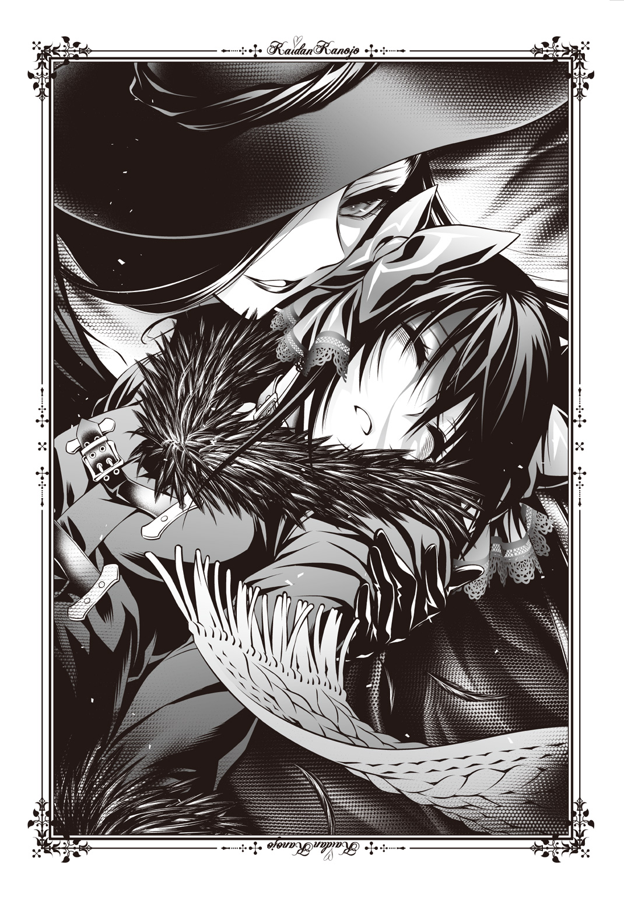
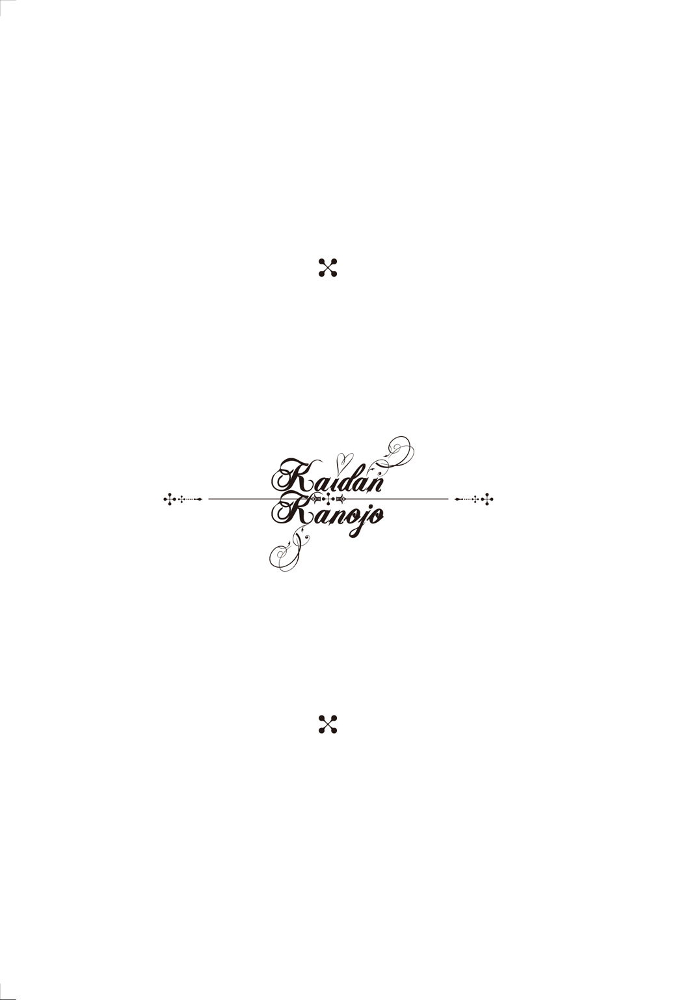
前作から引き続きましてこんにちは、永遠月心悟です。
「前作なんて読んだことないよ」という方はすみません、本書は一巻から三巻まで読んでいただけたほうが絶対にいいので、是非そちらをお先に。「いいや私はシリーズものの四巻だけを読むと決めているんだ」という方は、すみません、楽しみが半減します。
まずは本書を手に取っていただきありがとうございます。皆様に支えていただき、シリーズも四巻目に突入いたしました。大感謝です。これだけの巻数を重ねさせていただき、非常に光栄です。これからも「続きが読みたい」と言っていただけるような作品を頑張ってつくっていきたいと思いますので、よろしくお願いします。
さて今回は「百鬼夜行」として各章にそれぞれ怪異のサブタイトルがついていますが、第四章の「雲外鏡」について。この鏡は妖怪や化け物の正体を映し出す「照魔鏡」という伝説上の道具を江戸時代の絵師、鳥山石燕が妖怪にしたもののようです。この照魔鏡、古代中国で妲己という名の悪名高い王妃の正体が九尾の狐であることを見破ったとか。『怪談彼女』随一の悪名を馳せるあのヒロインの素の姿はいかがだったでしょう。シリーズを通してもっともヒロインらしい姿だったと思うのですが。
以下、謝辞となります。いつも応援してくださっている家族や友人、そして読者のみなさん。おかげ様で四冊目となりました。本当にありがとうございます。これからも面白い本が書けるよう努力いたしますので、よろしくお願いします。
いつまでも新人気分が抜けず、ご迷惑をおかけしております JUMP j BOOKS 編集部のみなさま。多大なご尽力をいただき、ここまでこられました。厚く御礼を申し上げます。
素晴らしいイラストを描いてくださるミウラタダヒロ先生。この度も多くのイラストを描いていただきました。四巻目まで来られたのも、先生のイラストがあってのことだと思います。深く深く、感謝しております。
恒例になってきました、遠い空から応援してくれているお父さん。いつもありがとう。
最後に、この本を手にしてくださったすべての方に。どうもありがとうございます。今後もより面白い小説が書けるように頑張りますので、どうぞよろしくお願いします。
それでは。
二〇一五年 夏
永遠月心悟
初 出 本書は書き下ろしです。
永遠月心悟（とわづきしんご）
長野県出身。
ジャンプ小説新人賞'13Spring小説フリー部門で『怪談撲滅委員会』で金賞受賞。
同作を改題した『怪談彼女～てけてけ～』でデビュー。
ミウラタダヒロ
２０１１年、『ジャンプＮＥＸＴ！』にて読切り『ふぁみドル！』でデビュー。
２０１２年、『週刊少年ジャンプ』にて『恋染紅葉』を連載。
ジャンプジェイブックスDIGITAL
怪談彼女４～百鬼夜行～
著 者 永遠月心悟
画 ミウラタダヒロ
©2015 S.TOWAZUKI/T.MIURA
２０１５年８月31日発行
この電子書籍は、ジャンプジェイブックス「怪談彼女４～百鬼夜行～」
２０１５年８月９日発行の第１刷を底本としています。
装 丁 浅見ダイジュ（Local Support Department）
編集協力 長澤國雄
編集担当 六郷祐介
編 集 人 浅田貴典
発 行 者 鈴木晴彦
発 行 所 株式会社 集英社
〒１０１－８０５０
東京都千代田区一ツ橋２丁目５番10号
０３－３２３０－６０８０（読者係）
制作所 株式会社ＩＣＥ
本作品の全部また一部を無断で複製、転載、改竄、インターネット上に掲載すること、および有償無償に関わらず、本データを第三者に譲渡することを禁じます。なお個人利用の目的であっても、コピーガードを解除しての複製は、法律で禁じられています。